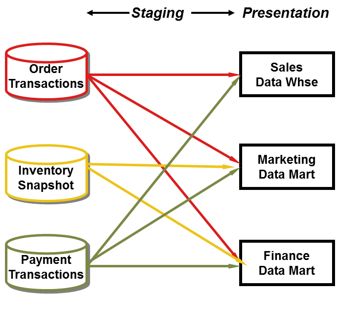
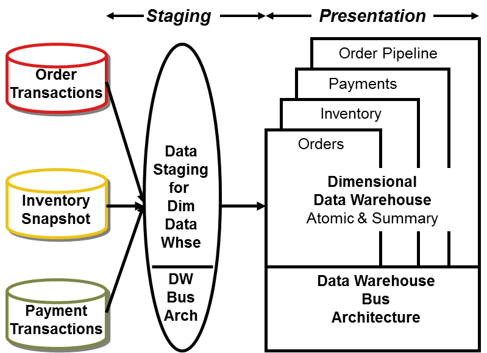
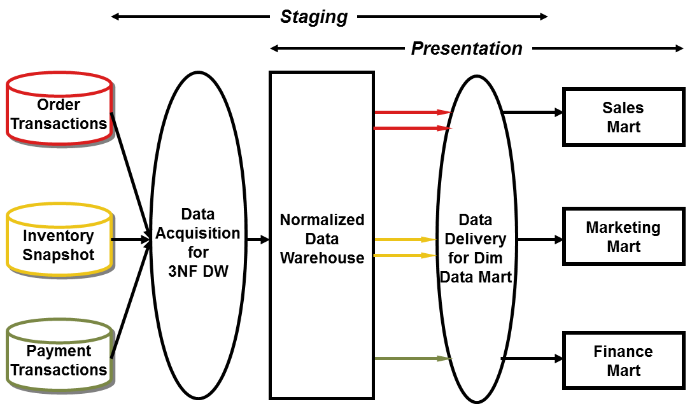
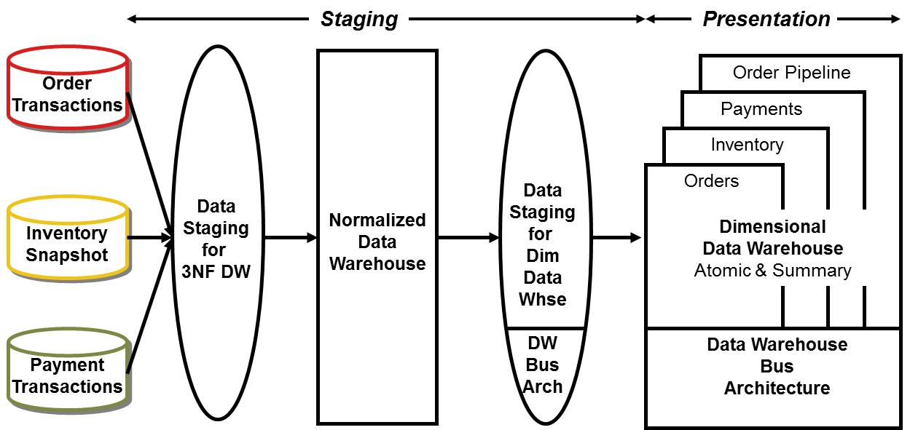
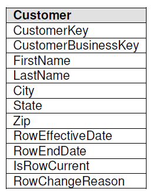
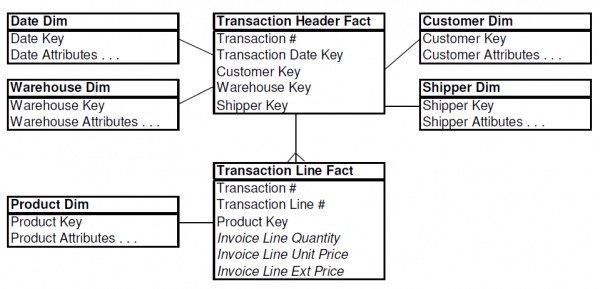
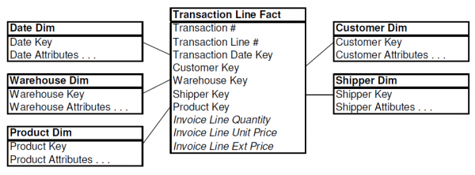
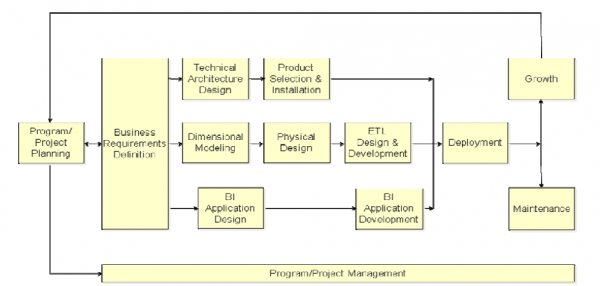
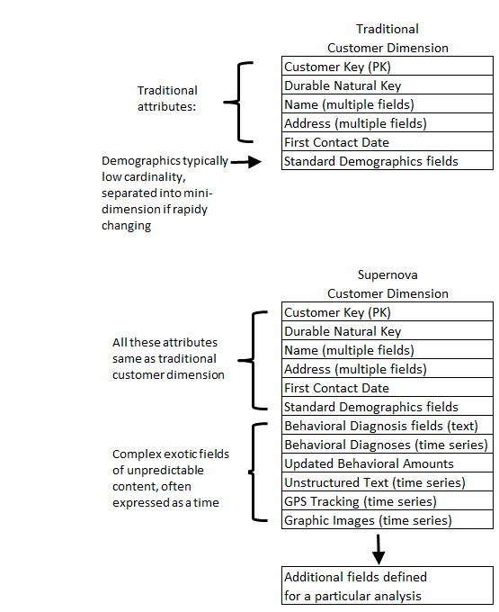

Insurance is an important and growing sector for the data warehousing market. Several factors have come together in the last year or two to make data warehouses for large insurance companies both possible and extremely necessary. Insurance companies generate several complicated transactions that must be analyzed in many different ways. Until recently, it wasn’t practical to consider storing hundreds of millions — or even billions — of transactions for online access. With the advent of powerful SMP and MPP Unix processors and powerful database query software, these big complicated databases have begun to enter the comfort zone for data warehousing. At the same time, the insurance industry is under incredible pressure to reduce costs. Costs in this business come almost entirely from claims or “losses,” as the insurance industry more accurately describes them.
The design of a big insurance data warehouse must deal with several issues common to all insurance companies. This month, I use InsureCo as a case study to illustrate these issues and show how to resolve them in a data warehouse environment. InsureCo is the pseudonym of a major insurance company that offers automobile, homeowner’s, and personal property insurance to about two million customers. InsureCo has annual revenues of more than $2 billion. My company designed InsureCo’s corporate data warehouse for analyzing all claims across all its lines of business, with history in some cases stretching back more than 15 years.
The first step at InsureCo was to spend two weeks interviewing prospective end users in claims analysis, claims processing, field operations, fraud and security management, finance, and marketing. We talked to more than 50 users, ranging from individual contributors to senior management. From each group of users we elicited descriptions of what they did in a typical day, how they measured the success of what they did, and how they thought they could understand their businesses better. We did not ask them what they wanted in a computerized database. It was our job to design, not theirs.
From these interviews we found three major themes that profoundly affected our design. First, to understand their claims in detail, the users needed to see every possible transaction. This precluded presenting summary data only. Many end-user analyses required the slicing and dicing of the huge pool of transactions.
Second, the users needed to view the business in monthly intervals. Claims needed to be grouped by month, and compared at month’s end to other months of the same year, or to months in previous years. This conflicted with the need to store every transaction, because it was impractical to roll-up complex sequences of transactions just to get monthly premiums and monthly claims payments. Third, we needed to deal with the heterogeneous nature of InsureCo’s lines of business. The facts recorded for an automobile accident claim are different than those recorded for a homeowner’s fire loss claim or for a burglary claim.
These data conflicts arise in many different industries, and are familiar themes for data warehouse designers. The conflict between the detailed transaction view and the monthly snapshot view almost always requires that you build both kinds of tables in the data warehouse. We call these the transaction views and monthly snapshot views of a business. Note that we are not referring to SQL views here, but to physical tables. The need to analyze the entire business across all products (lines of business in InsureCo’s case) versus the need to analyze a specific product with unique measures is called the “heterogeneous products” problem. At InsureCo, we first tackled the transaction and monthly snapshot views of the business by carefully dimensionalizing the base-level claims processing transactions. Every claims processing transaction was able to fit into the star join schema.
This structure is characteristic of transaction-level data warehouse schemas. The central transaction-level fact table consists almost entirely of keys. Transaction fact tables typically have only one additive fact, which we call Amount. The interpretation of the Amount field depends on the transaction type, which is identified in the transaction dimension. The Time dimension is actually two instances of the same dimension table connecting to the fact table to provide independent constraints on the Transaction Date and the Effective Date.
This transaction-level star join schema provided an extremely powerful way for InsureCo to analyze claims. The number of claimants, the timing of claims, the timing of payments made, and the involvement of third parties, such as witnesses and lawyers, were all easily derived from this view of the data. Strangely enough, it was somewhat difficult to derive “claim-to-date” measures, such as monthly snapshots, because of the need to crawl through every detailed transaction from the beginning of history. The solution was to add to InsureCo’s data warehouse a monthly snapshot version of the data. The monthly snapshot removed some of the dimensions, while adding more facts.
The grain of this monthly snapshot fact table was the monthly activity of each claimant’s claim against InsureCo’s insured party. Several of the transaction schema dimensions were suppressed in this monthly snapshot, including Effective Date, Employee, Third Party, and Transaction Type. However, it was important to add a Status dimension to the monthly snapshot so that InsureCo could quickly find all open, closed, and reopened claims. The list of additive, numeric facts was expanded to include several useful measures. These include the amount of the reserve set aside to pay for a claim, amounts paid and received during the month, and an overall count of the transaction activity for this claim. This monthly snapshot schema was extremely useful at InsureCo as a way to rapidly analyze the month-to-month changes in claims and exposure to loss. Monthly snapshot tables were very flexible because interesting summaries could be added as facts, almost at will. Of course, we could never add enough summary buckets to do away with the need for the transaction schema itself. There are hundreds of detailed measures, representing combinations and counts and timings of interesting transactions, all of which would be suppressed if we didn’t preserve the detailed transaction history.
After dispensing with the first big representation problem, we faced the problem of how to deal with heterogeneous products. This problem arose primarily in the monthly snapshot fact table, in which we wanted to store additional monthly summary measures specific to each line of business. These additional measures included automobile coverage, homeowner’s fire coverage, and personal article loss coverage. After talking to the insurance specialists in each line of business, we realized that there were at least 10 custom facts for each line of business. Logically, our fact table design could be extended to include the custom facts for each line of business, but physically we had a disaster on our hands.
Because the custom facts for each line of business were incompatible with each other, for any given monthly snapshot record, most of the fact table was filled with nulls. Only the custom facts for the particular line of business were populated in any given record. The answer was to separate physically the monthly snapshot fact table by coverage type. We ended up with a single core monthly snapshot schema, and a series of custom monthly snapshot schemas, one for each coverage type.
A key element of this design was the repetition of the core facts in each of the custom schemas. This is sometimes hard for a database designer to accept, but it is very important. The core schema is the one InsureCo uses when analyzing the business across different coverage types. Those kinds of analyses use only the core table. InsureCo uses the Automobile Custom schema when analyzing the automobile segment of the business. When performing detailed analyses within the automobile line of business, for example, it is important to avoid linking to the core fact table to get the core measures such as amounts paid and amounts received. In these large databases, it is very dangerous to access more than one fact table at a time. It is far better, in this case, to repeat a little of the data in order to keep the users’ queries confined to single fact tables.
The data warehouse we built at InsureCo is a classic example of a large data warehouse that has to accommodate the conflicting needs for detailed transaction history, high-level monthly summaries, company-wide views, and individual lines of business. We used standard data warehouse design techniques, including transaction views and monthly snapshot views, as well as heterogeneous product schemas to address InsureCo’s needs. This dimensional data warehouse gives the company many interesting ways to view its data.
The importance of the time dimension in data marts and data warehouses.
The time dimension is a unique and powerful dimension in every data mart and enterprise data warehouse. Although one of the tenets of dimensional modeling is that all dimensions are created equal, the truth is that the time dimension is very special and must be treated differently from the other dimensions. This month, I’ll look at some issues involving the time dimension.
Basic Time Issues
Virtually every data mart is a time series. In a dimensional design, the fact table is the central table with a multipart key that records numeric measurements of the data mart’s process. Figure 1 is the familiar basic dimensional design I have shown many times in this column. In this example, the fact table records daily orders received by a manufacturing company. The first dimension, in the upper left corner, is the time dimension. In this case the time dimension designates calendar days.
{kind=link}
Figure 1. A basic dimensional design for daily order tracking. The first dimension is the time dimension representing the order date.
Data architects in my design class ask, “Why can’t I just leave out the time dimension? The foreign key in the fact table can easily be an SQL date value, and I can just constrain on calendar periods through the mechanisms of standard SQL. This way I avoid an expensive join!” They also ask, “If I have to have a time dimension, where do I get it?”
{kind=link}
Figure 2. A recommended data mart time table expressed at a daily grain. This time table explicitly supports rolling up to months and fiscal periods.
The first question is answered by recalling the fundamental reason for wanting dimension tables in a data mart. The dimension tables serve as the source of constraints and as the source of report row headers. A data mart is only as good as its dimension tables. Figure 2 shows a recommended data mart time table expressed at a daily grain. If you don’t have lots of good descriptive attributes in your dimensions, then you have a crippled data mart. You won’t be able to constrain on inadequate dimensions, and you won’t be able to construct the reports you want. Although it is true in the case of the time dimension that SQL provides some minimal assistance in navigating dates, standard SQL functionality isn’t nearly complete enough to support the needs of a typical organization. SQL certainly doesn’t know anything about your corporate calendar, your fiscal periods, or your seasons. It is so easy to add these attributes to a time table that the data mart architect should never consider having this calendar logic embedded in end users’ applications.
The second data architect question is answered by saying, “Build it in a spreadsheet.” Unlike nearly any other dimension in a data mart, the time dimension can be built once on the architect’s PC and then uploaded into all of the data mart machines making up the overall enterprise data warehouse. The time dimension in Figure 2 can be built in half a day of fussing with spreadsheet cells and studying the official corporate calendar. It would be reasonable for this time dimension to contain at least 10 or 20 years worth of days, perhaps extending from 1990 to 2010.
Some data marts additionally track time of day to the nearest minute or even the nearest second. For these cases I recommend separating the time of day measure out as a separate “numeric fact.” It should not be combined into one key with the calendar day dimension. This would make for an impossibly large time table.
Intermediate Time Issues
Time is a dimension that invites incompatible rollups; the most obvious are weeks and months. Separate fact tables denominated in weeks and months should be avoided at all costs. Weekly and monthly data is forever incompatible. In last month’s column, I stated that one of the central data warehouse team’s responsibilities was to make sure that all of the dimensions used by separate divisional data marts were conformed. One of the most important conformation steps is to make sure that a uniform time rollup is used in all of the separate data marts.
The most flexible base on which to start is the daily time grain. Daily data rolls up to virtually every possible calendar. If your company operates on calendar month reporting, then you should organize around days, months, quarters, and years. If your company operates on artificial fiscal periods that roll up from weeks, such as a five-week, four-week, four-week quarter, then you should organize around days, weeks, fiscal periods, quarters, and years. It is okay to overlay incompatible seasonal periods based on specific spans of days onto either one of these schemes, but seasonal periods such as Christmas or Easter will not roll up to any of the other calendar periods. Adding seasonal interpretations to the calendar is easy if you start at a daily time grain. This is one of the advantages of the dimensional approach. It is very robust in the face of changing business requirements, as long as you start at the lowest atomic grain of data — in this case daily.
{kind=link}
Figure 3. How not to model slowly changing dimensions. It is meaningless to attempt to constrain all three of these time dimensions.
Another issue faced by every data mart designer is what to do about “slowly changing dimensions.” A data mart designer might be tempted to model a slowly changing dimension such as Product as a kind of fact table with a time key in addition to the original product key, as shown in Figure 3. This is definitely not recommended. In most cases, any constraint placed on the secondary time dimension connected to the Product table is different from the constraint placed on the primary time dimension connected to the fact table. The meaning of the time stamp in the product table has to do with a revision date for that version of the product. The meaning of the time key in the fact table has to do with when the activity in the fact table record occurred. These two times may be uncorrelated. For example, a product stamped with a version date of January 1 may be sold in a store on February 15. The product in question may even have been superseded by a new version of the product with a version stamp of February 1. The moral of this story is: Don’t get tangled up with multiple time dimensions hanging off every regular dimension table. It is tempting to tie all of these time constraints together in the name of some kind of “temporal referential integrity,” but this approach makes the application very complex and is semantically incorrect.
Another intermediate level design issue involving time that I have mentioned in the past is the very common issue of aggregating nonadditive measures of intensity across time. The most common examples are inventory levels and account balances. The problem is that in most cases you want to aggregate these measures across time by computing the “average over time.” This is not the same calculation as SQL avg, which is the average over all of the records returned to the answer set for a particular SQL select statement. The end-user application designer must calculate “average over time” by first determining the cardinality of the constraint on the time dimension by itself, saving this number away, then adding the intensity measure across time, and finally dividing out by the time cardinality that has been saved away. Although this is trivial mathematics, it is a significant pain in a standard SQL environment that has no avgperiodsum operator to handle this case automatically. Standard ad hoc query tools that emit single SQL select statements simply cannot perform “average daily balance” calculations, although sophisticated application development environments know how to do it.
A final intermediate-level design issue involving time is whether to design a data mart around individual transactions or around month-end snapshots. In businesses that are transaction-intensive, such as insurance, this can be a real dilemma. Insurance claims-processing transactions are extremely interesting and have a very rich texture. Many complex questions in insurance can only be answered by having access to individual transactions. For instance, what is the average length of time between the original claim and the first payment to the claimant? On the other hand, the record of the individual transactions is a poor basis for creating a month-end report for management. To create such a report, an application would have to go back to some starting point in time and sequentially process all the intervening transactions. Not only is this very inefficient, but it isn’t a SQL query. It is some kind of complex procedural application.
The data mart designer in a transaction-rich business such as insurance will eventually have to build two versions of the data mart: a transaction version and a monthly snapshot version. In this way, the two kinds of analysis can each be accomplished with simple applications. Also, in many cases, snapshots at intermediate points in time (between month ends) can be constructed by starting with the previous snapshot and playing just the current month’s transactions forward to the desired point in time.
Advanced Time Issues
Although there are many interesting advanced time-processing issues, I want to describe two applications that I have seen repeatedly in data warehouse environments. The first is “time alignment of similar events.” For instance, if you have a large data mart of customer purchases, you may be interested in asking questions about a group of customers that are defined by some event. Perhaps the customers are defined by having their credit limit raised to $1,000. Once this triggering event occurs, you want to study the behavior of this cohort group. You want to measure their purchases and their payments as a function of the time after the granting of credit. You may want to ask what is the average time until these customers have a credit default (if they do).
To ask these kinds of questions, you must first identify the customers in question and then align their purchase time histories relative to the triggering event. A very simple approach would be to add an additional time dimension to their purchase history. This time dimension would be aligned with the triggering event. Although this is logically simple, it is impractical. There may be many different analyses being performed on the customer purchase file, and each analysis cannot have its own time dimension. In most cases, the application designer is forced to extract the time history of each customer in the “study” into a new private fact table and keep that fact table on the disk physically for the duration of the analysis, which could be days, weeks, or months. To make this practical, the application designers and analysts need a comprehensive application that creates, manages, and queries these tables. All of the systems like this I have seen have been built from scratch in Visual Basic or PowerBuilder. I know of no application development or decision-support environment that handles this kind of application automatically.
The final advanced time application I have seen repeatedly is the “progressive subsetting” application. This is a more complex version of the previous example. Progressive subsetting is popular in medical outcome analysis. The medical researcher may have a comprehensive data mart of patient diagnoses, treatments, and outcome events. The researcher wants to ask a series of questions that gradually subset an original patient population down to a small final set of patients who have experienced a particular sequence of events. For instance, the researcher might want all of the patients who originally complained of chest pain, and who were treated within one month of the complaint with either drug A or drug B, and who did not subsequently have surgery, and who did have pain three months later, and who are still alive today. Not only does this application need to align similar events as in the preceding example, but the analyst needs powerful query logic for finding patients where events did not happen, and for combining groups of patients with set logic including union, intersection, and set difference. Again, the only systems I know about that tackle these issues seriously are home-grown systems, typically written in Visual Basic or PowerBuilder.
I have tried to provide some perspective on the main time issues confronting the data mart designer and how to tackle each of them. Although the dimension table for time is one of the simplest and most obvious tables in any data mart, the surrounding design issues for handling time are very challenging. In my classes, when I ask the students, “What is the first dimension we might choose for this particular data mart?” they soon learn to yell in unison: “TIME!”
Drawing the Line Between Dimensional Modeling and ER Modeling Techniques
Dimensional modeling (DM) is the name of a logical design technique often used for data warehouses. It is different from, and contrasts with, entity-relation modeling (ER). This article points out the many differences between the two techniques and draws a line in the sand. DM is the only viable technique for databases that are designed to support end-user queries in a data warehouse. ER is very useful for the transaction capture and the data administration phases of constructing a data warehouse, but it should be avoided for end-user delivery.
What is ER?
ER is a logical design technique that seeks to remove the redundancy in data. Imagine that we have a business that takes orders and sells products to customers. In the early days of computing (long before relational databases) when we first transferred this data to a computer, we probably captured the original paper order as a single fat record with many fields. Such a record could easily have been 1,000 bytes distributed across 50 fields. The line items of the order were probably represented as a repeating group of fields embedded in the master record. Having this data on the computer was very useful, but we quickly learned some basic lessons about storing and manipulating data. One of the lessons we learned was that data in this form was difficult to keep consistent because each record stood on its own. The customer’s name and address appeared many times, because this data was repeated whenever a new order was taken. Inconsistencies in the data were rampant, because all of the instances of the customer address were independent, and updating the customer’s address was a messy transaction.
Even in the early days, we learned to separate out the redundant data into distinct tables, such as a customer master and a product master — but we paid a price. Our software systems for retrieving and manipulating the data became complex and inefficient because they required careful attention to the processing algorithms for linking these sets of tables together. We needed a database system that was very good at linking tables. This paved the way for the relational database revolution, where the database was devoted to just this task.
The relational database revolution bloomed in the mid 1980s. Most of us learned what a relational database was by reading Chris Date’s seminal book on the subject, An Introduction to Relational Databases (Addison-Wesley), first published in the early 1980s. As we paged through Chris’s book, we worked through all of his Parts, Suppliers, and Cities database examples. It didn’t occur to most of us to ask whether the data was completely “normalized” or whether any of the tables could be “snowflaked,” and Chris didn’t develop these topics. In my opinion, Chris was trying to explain the more fundamental concepts of how to think about tables that were relationally joined. ER modeling and normalization were developed in later years as the industry shifted its attention to transaction processing.
The ER modeling technique is a discipline used to illuminate the microscopic relationships among data elements. The highest art form of ER modeling is to remove all redundancy in the data. This is immensely beneficial to transaction processing because transactions are made very simple and deterministic. The transaction of updating a customer’s address may devolve to a single record lookup in a customer address master table. This lookup is controlled by a customer address key, which defines uniqueness of the customer address record and allows an indexed lookup that is extremely fast. It is safe to say that the success of transaction processing in relational databases is mostly due to the discipline of ER modeling.
However, in our zeal to make transaction processing efficient, we have lost sight of our original, most important goal. We have created databases that cannot be queried! Even our simple order-taking example creates a database of dozens of tables that are linked together by a bewildering spider web of joins. (See Figure 1) All of us are familiar with the big chart on the wall of the IS database designer’s cubicle. The ER model for the enterprise has hundreds of logical entities! High-end systems such as SAP have thousands of entities. Each of these entities usually turns into a physical table when the database is implemented. This situation is not just an annoyance, it is a showstopper:
- End users cannot understand or remember an ER model. End users cannot navigate an ER model. There is no graphical user interface (GUI) that takes a general ER model and makes it usable by end users.
- Software cannot usefully query a general ER model. Cost-based optimizers that attempt to do this are notorious for making the wrong choices, with disastrous consequences for performance.
- Use of the ER modeling technique defeats the basic allure of data warehousing, namely intuitive and high-performance retrieval of data.
Ever since the beginning of the relational database revolution, IS shops have noticed this problem. Many of them that have tried to deliver data to end users have recognized the impossibility of presenting these immensely complex schemas to end users, and many of these IS shops have stepped back to attempt “simpler designs.” I find it striking that these “simpler” designs all look very similar! Almost all of these simpler designs can be thought of as “dimensional.” In a natural, almost unconscious way, hundreds of IS designers have returned to the roots of the original relational model because they know the database cannot be used unless it is packaged simply. It is probably accurate to say that this natural dimensional approach was not invented by any single person. It is an irresistible force in the design of databases that will always appear when the designer places understandability and performance as the highest goals. We are now ready to define the DM approach.
What is DM?
DM is a logical design technique that seeks to present the data in a standard, intuitive framework that allows for high-performance access. It is inherently dimensional, and it adheres to a discipline that uses the relational model with some important restrictions. Every dimensional model is composed of one table with a multipart key, called the fact table, and a set of smaller tables called dimension tables. Each dimension table has a single-part primary key that corresponds exactly to one of the components of the multipart key in the fact table. (See Figure 1.) This characteristic “star-like” structure is often called a star join. The term star join dates back to the earliest days of relational databases.

A fact table, because it has a multipart primary key made up of two or more foreign keys, always expresses a many-to-many relationship. The most useful fact tables also contain one or more numerical measures, or “facts,” that occur for the combination of keys that define each record. In Figure 1, the facts are Dollars Sold, Units Sold, and Dollars Cost. The most useful facts in a fact table are numeric and additive. Additivity is crucial because data warehouse applications almost never retrieve a single fact table record; rather, they fetch back hundreds, thousands, or even millions of these records at a time, and the only useful thing to do with so many records is to add them up.
Dimension tables, by contrast, most often contain descriptive textual information. Dimension attributes are used as the source of most of the interesting constraints in data warehouse queries, and they are virtually always the source of the row headers in the SQL answer set. In Figure 1, we constrain on the Lemon flavored products via the Flavor attribute in the Product table, and on Radio promotions via the AdType attribute in the Promotion table. It should be obvious that the power of the database in Figure 1 is proportional to the quality and depth of the dimension tables.
The charm of the database design in Figure 1 is that it is highly recognizable to the end users in the particular business. I have observed literally hundreds of instances where end users agree immediately that this is “their business.”
DM vs. ER
The key to understanding the relationship between DM and ER is that a single ER diagram breaks down into multiple DM diagrams. Think of a large ER diagram as representing every possible business process in the enterprise. The master ER diagram may have Sales Calls, Order Entries, Shipment Invoices, Customer Payments, and Product Returns, all on the same diagram. In a way, the ER diagram does itself a disservice by representing on one diagram multiple processes that never coexist in a single data set at a single consistent point in time. It’s no wonder the ER diagram is overly complex. Thus the first step in converting an ER diagram to a set of DM diagrams is to separate the ER diagram into its discrete business processes and to model each one separately.
The second step is to select those many-to-many relationships in the ER model containing numeric and additive nonkey facts and to designate them as fact tables. The third step is to denormalize all of the remaining tables into flat tables with single-part keys that connect directly to the fact tables. These tables become the dimension tables. In cases where a dimension table connects to more than one fact table, we represent this same dimension table in both schemas, and we refer to the dimension tables as “conformed” between the two dimensional models.
The resulting master DM model of a data warehouse for a large enterprise will consist of somewhere between 10 and 25 very similar-looking star join schemas. Each star join will have four to 12 dimension tables. If the design has been done correctly, many of these dimension tables will be shared from fact table to fact table. Applications that drill down will simply be adding more dimension attributes to the SQL answer set from within a single star join. Applications that drill across will simply be linking separate fact tables together through the conformed (shared) dimensions. Even though the overall suite of star join schemas in the enterprise dimensional model is complex, the query processing is very predictable because at the lowest level, I recommend that each fact table should be queried independently.
The Strengths of DM
The dimensional model has a number of important data warehouse advantages that the ER model lacks. First, the dimensional model is a predictable, standard framework. Report writers, query tools, and user interfaces can all make strong assumptions about the dimensional model to make the user interfaces more understandable and to make processing more efficient. For instance, because nearly all of the constraints set up by the end user come from the dimension tables, an end-user tool can provide high-performance “browsing” across the attributes within a dimension via the use of bit vector indexes. Metadata can use the known cardinality of values in a dimension to guide the user-interface behavior. The predictable framework offers immense advantages in processing. Rather than using a cost-based optimizer, a database engine can make very strong assumptions about first constraining the dimension tables and then “attacking” the fact table all at once with the Cartesian product of those dimension table keys satisfying the user’s constraints. Amazingly, by using this approach it is possible to evaluate arbitrary n-way joins to a fact table in a single pass through the fact table’s index. We are so used to thinking of n-way joins as “hard” that a whole generation of DBAs doesn’t realize that the n-way join problem is formally equivalent to a single sort-merge. Really.
A second strength of the dimensional model is that the predictable framework of the star join schema withstands unexpected changes in user behavior. Every dimension is equivalent. All dimensions can be thought of as symmetrically equal entry points into the fact table. The logical design can be done independent of expected query patterns. The user interfaces are symmetrical, the query strategies are symmetrical, and the SQL generated against the dimensional model is symmetrical.
A third strength of the dimensional model is that it is gracefully extensible to accommodate unexpected new data elements and new design decisions. When we say gracefully extensible, we mean several things. First, all existing tables (both fact and dimension) can be changed in place by simply adding new data rows in the table, or the table can be changed in place with a SQL alter table command. Data should not have to be reloaded. Graceful extensibility also means that that no query tool or reporting tool needs to be reprogrammed to accommodate the change. And finally, graceful extensibility means that all old applications continue to run without yielding different results. In Figure 1, I labeled the schema with the numbers 1 through 4 indicating where you can, respectively, make the following graceful changes to the design after the data warehouse is up and running by:
- Adding new unanticipated facts (that is, new additive numeric fields in the fact table), as long as they are consistent with the fundamental grain of the existing fact table
- Adding completely new dimensions, as long as there is a single value of that dimension defined for each existing fact record
- Adding new, unanticipated dimensional attributes
- Breaking existing dimension records down to a lower level of granularity from a certain point in time forward.
A fourth strength of the dimensional model is that there is a body of standard approaches for handling common modeling situations in the business world. Each of these situations has a well-understood set of alternatives that can be specifically programmed in report writers, query tools, and other user interfaces. These modeling situations include:
- Slowly changing dimensions, where a “constant” dimension such as Product or Customer actually evolves slowly and asynchronously. Dimensional modeling provides specific techniques for handling slowly changing dimensions, depending on the business environment. See my DBMS article of April 1996 on slowly changing dimensions.
- Heterogeneous products, where a business such as a bank needs to track a number of different lines of business together within a single common set of attributes and facts, but at the same time it needs to describe and measure the individual lines of business in highly idiosyncratic ways using incompatible measures.
- Pay-in-advance databases, where the transactions of a business are not little pieces of revenue, but the business needs to look at the individual transactions as well as report on revenue on a regular basis. For this and the previous bullet, see my DBMS article of December 1995, the insurance company case study.
- Event-handling databases, where the fact table usually turns out to be “factless.” See my DBMS article of September 1996 on factless fact tables.
A final strength of the dimensional model is the growing body of administrative utilities and software processes that manage and use aggregates. Recall that aggregates are summary records that are logically redundant with base data already in the data warehouse, but they are used to enhance query performance. A comprehensive aggregate strategy is required in every medium- and large-sized data warehouse implementation. To put it another way, if you don’t have aggregates, then you are potentially wasting millions of dollars on hardware upgrades to solve performance problems that could be otherwise addressed by aggregates.
All of the aggregate management software packages and aggregate navigation utilities depend on a very specific single structure of fact and dimension tables that is absolutely dependent on the dimensional model. If you don’t adhere to the dimensional approach, you cannot benefit from these tools. Please see my DBMS articles on aggregate navigation and the various products serving aggregate navigation in the September 1995 and August 1996 issues.
Myths About DM
A few myths floating around about dimensional modeling deserve to be addressed. Myth number one is “Implementing a dimensional data model will lead to stovepipe decision-support systems.” This myth sometimes goes on to blame denormalization for supporting only specific applications that therefore cannot be changed. This myth is a short-sighted interpretation of dimensional modeling that has managed to get the message exactly backwards! First, we have argued that every ER model has an equivalent set of DM models that contain the same information. Second, we have shown that even in the presence of organizational change and end-user adaptation, the dimensional model extends gracefully without altering its form. It is in fact the ER model that whipsaws the application designers and the end users!
A source of this myth, in my opinion, is the designer who is struggling with fact tables that have been prematurely aggregated. For instance, the design in Figure 1Â is expressed at the individual sales-ticket line-item level. This is the correct starting point for this retail database because this is the lowest possible grain of data. There just isn’t any further breakdown of the sales transaction. If the designer had started with a fact table that had been aggregated up to weekly sales totals by store, then there would be all sorts of problems in adding new dimensions, new attributes, and new facts. However, this isn’t a problem with the design technique, this is a problem with the database being prematurely aggregated.
Myth number two is “No one understands dimensional modeling.” This myth is absurd. I have seen hundreds of excellent dimensional designs created by people I have never met or had in my classes. A whole generation of designers from the packaged-goods retail and manufacturing industries has been using and designing dimensional databases for the last 15 years. I personally learned about dimensional models from existing A.C. Nielsen and IRI applications that were installed and working in such places as Procter & Gamble and The Clorox Company as early as 1982.
Incidentally, although this article has been couched in terms of relational databases, nearly all of the arguments in favor of the power of dimensional modeling hold perfectly well for proprietary multidimensional databases such as Oracle Express and Arbor Essbase.
Myth number three is “Dimensional models only work with retail databases.” This myth is rooted in the historical origins of dimensional modeling but not in its current-day reality. Dimensional modeling has been applied to many different business areas including retail banking, commercial banking, property and casualty insurance, health insurance, life insurance, brokerage customer analysis, telephone company operations, newspaper advertising, oil company fuel sales, government agency spending, and manufacturing shipments.
Myth number four is “Snowflaking is an alternative to dimensional modeling.” Snowflaking is the removal of low-cardinality textual attributes from dimension tables and the placement of these attributes in “secondary” dimension tables. For instance, a product category can be treated this way and physically removed from the low-level product dimension table. I believe that this method compromises cross-attribute browsing performance and may interfere with the legibility of the database, but I know that some designers are convinced that this is a good approach. Snowflaking is certainly not at odds with dimensional modeling. I regard snowflaking as an embellishment to the cleanliness of the basic dimensional model. I think that a designer can snowflake with a clear conscience if this technique improves user understandability and improves overall performance. The argument that snowflaking helps the maintainability of the dimension table is specious. Maintenance issues are indeed leveraged by ER-like disciplines, but all of this happens in the operational data store, before the data is loaded into the dimensional schema.
The final myth is “Dimensional modeling only works for certain kinds of single-subject data marts.” This myth is an attempt to marginalize dimensional modeling by individuals who do not understand its fundamental power and applicability. Dimensional modeling is the appropriate technique for the overall design of a complete enterprise-level data warehouse. Such a dimensional design consists of families of dimensional models, where each family describes a business process. The families are linked together in an effective way by insisting on the use of conformed dimensions.
In Defense of DM
Now it’s time to take off the gloves. I firmly believe that dimensional modeling is the only viable technique for designing end-user delivery databases. ER modeling defeats end-user delivery and should not be used for this purpose.
ER modeling does not really model a business; rather, it models the micro relationships among data elements. ER modeling does not have “business rules,” it has “data rules.” Few if any global design requirements in the ER modeling methodology speak to the completeness of the overall design. For instance, does your ER CASE tool try to tell you if all of the possible join paths are represented and how many there are? Are you even concerned with such issues in an ER design? What does ER have to say about standard business modeling situations such as slowly changing dimensions?
ER models are wildly variable in structure. Tell me in advance how to optimize the querying of hundreds of interrelated tables in a big ER model. By contrast, even a big suite of dimensional models has an overall deterministic strategy for evaluating every possible query, even those crossing many fact tables. (Hint: You control performance by querying each fact table separately. If you actually believe that you can join many fact tables together in a single query and trust a cost-based optimizer to decide on the execution plan, then you haven’t implemented a data warehouse for real end users.)
The wild variability of the structure of ER models means that each data warehouse needs custom, handwritten and tuned SQL. It also means that each schema, once it is tuned, is very vulnerable to changes in the user’s querying habits, because such schemas are asymmetrical. By contrast, in a dimensional model all dimensions serve as equal entry points to the fact table. Changes in users’ querying habits don’t change the structure of the SQL or the standard ways of measuring and controlling performance.
ER models do have their place in the data warehouse. First, the ER model should be used in all legacy OLTP applications based on relational technology. This is the best way to achieve the highest transaction performance and the highest ongoing data integrity. Second, the ER model can be used very successfully in the back-room data cleaning and combining steps of the data warehouse. This is the ODS, or operational data store.
However, before data is packaged into its final queryable format, it must be loaded into a dimensional model. The dimensional model is the only viable technique for achieving both user understandability and high query performance in the face of ever-changing user questions.
According to the Webster’s Unabridged Dictionary, a surrogate is an “artificial or synthetic product that is used as a substitute for a natural product.” Thatýs a great definition for the surrogate keys we use in data warehouses. A surrogate key is an artificial or synthetic key that is used as a substitute for a natural key.
Actually, a surrogate key in a data warehouse is more than just a substitute for a natural key. In a data warehouse, a surrogate key is a necessary generalization of the natural production key and is one of the basic elements of data warehouse design. Let’s be very clear: Every join between dimension tables and fact tables in a data warehouse environment should be based on surrogate keys, not natural keys. It is up to the data extract logic to systematically look up and replace every incoming natural key with a data warehouse surrogate key each time either a dimension record or a fact record is brought into the data warehouse environment.
In other words, when we have a product dimension joined to a fact table, or a customer dimension joined to a fact table, or even a time dimension joined to a fact table, the actual physical keys on either end of the joins are not natural keys directly derived from the incoming data. Rather, the keys are surrogate keys that are just anonymous integers. Each one of these keys should be a simple integer, starting with one and going up to the highest number that is needed. The product key should be a simple integer, the customer key should be a simple integer, and even the time key should be a simple integer. None of the keys should be:
- Smart, where you can tell something about the record just by looking at the key
- Composed of natural keys glued together
- Implemented as multiple parallel joins between the dimension table and the fact table; so-called double or triple barreled joins.
If you are a professional DBA, I probably have your attention. If you are new to data warehousing, you are probably horrified. Perhaps you are saying, “But if I know what my underlying key is, all my training suggests that I make my key out of the data I am given.” Yes, in the production transaction processing environment, the meaning of a product key or a customer key is directly related to the record’s content. In the data warehouse environment, however, a dimension key must be a generalization of what is found in the record.
As the data warehouse manager, you need to keep your keys independent from the production keys. Production has different priorities from you. Production keys such as product keys or customer keys are generated, formatted, updated, deleted, recycled, and reused according to the dictates of production. If you use production keys as your keys, you will be jerked around by changes that can be, at the very least, annoying, and at the worst, disastrous. Suppose that you need to keep a three-year history of product sales in your large sales fact table, but production decides to purge their product file every 18 months. What do you do then? Let’s list some of the ways that production may step on your toes:
- Production may reuse keys that it has purged but that you are still maintaining, as I described.
- Production may make a mistake and reuse a key even when it isn’t supposed to. This happens frequently in the world of UPCs in the retail world, despite everyone’s best intentions.
- Production may re-compact its key space because it has a need to garbage-collect the production system. One of my customers was recently handed a data warehouse load tape with all the production customer keys reassigned!
- Production may legitimately overwrite some part of a product description or a customer description with new values but not change the product key or the customer key to a new value. You are left holding the bag and wondering what to do about the revised attribute values. This is the Slowly Changing Dimension crisis, which I will explain in a moment.
- Production may generalize its key format to handle some new situation in the transaction system. Now the production keys that used to be integers become alphanumeric. Or perhaps the 12-byte keys you are used to have become 20-byte keys.
- Your company has just made an acquisition, and you need to merge more than a million new customers into the master customer list. You will now need to extract from two production systems, but the newly acquired production system has nasty customer keys that don’t look remotely like the others.
The Slowly Changing Dimension crisis I mentioned earlier is a well-known situation in data warehousing. Rather than blaming production for not handling its keys better, it is more constructive to recognize that this is an area where the interests of production and the interests of the data warehouse legitimately diverge. Usually, when the data warehouse administrator encounters a changed description in a dimension record such as product or customer, the correct response is to issue a new dimension record. But to do this, the data warehouse must have a more general key structure. Hence the need for a surrogate key.
There are still more reasons to use surrogate keys. One of the most important is the need to encode uncertain knowledge. You may need to supply a customer key to represent a transaction, but perhaps you donýt know for certain who the customer is. This would be a common occurrence in a retail situation where cash transactions are anonymous, like most grocery stores. What is the customer key for the anonymous customer? Perhaps you have introduced a special key that stands for this anonymous customer. This is politely referred to as a “hack.”
If you think carefully about the “I don’t know” situation, you may want more than just this one special key for the anonymous customer. You may also want to describe the situation where “the customer identification has not taken place yet.” Or maybe, “there was a customer, but the data processing system failed to report it correctly.” And also, “no customer is possible in this situation.” All of these situations call for a data warehouse customer key that cannot be composed from the transaction production customer keys. Don’t forget that in the data warehouse you must provide a customer key for every fact record in the schema shown in Figure 1. A null key automatically turns on the referential integrity alarm in your data warehouse because a foreign key (as in the fact table) can never be null.
The “I don’t know” situation occurs quite frequently for dates. You are probably using date-valued keys for your joins between your fact tables and your dimension tables. Once again, if you have done this you are forced to use some kind of real date to represent the special situations where a date value is not possible. I hope you have not been using January 1, 2000 to stand for “I don’t know.” If you have done this, you have managed to combine the production key crisis with the Year 2000 crisis.
Maybe one of the reasons you are holding on to your smart keys built up out of real data is that you think you want to navigate the keys directly with an application, avoiding the join to the dimension table. It is time to forget this strategy. If the fifth through ninth alpha characters in the join key can be interpreted as a manufacturer’s ID, then copy these characters and make them a normal field in the dimension table. Better yet, add the manufacturer’s name in plain text as a field. As the final step, consider throwing away the alphanumeric manufacturer ID. The only reason the marketing end users know these IDs is that they have been forced to use them for computer requests.
Holding onto real date values as keys is also a strategic blunder. Yes, you can navigate date keys with straight SQL, thereby avoiding the join, but you have left all your special calendar information marooned in the date dimension table. If you navigate naked date keys with an application, you will inevitably begin embedding calendar logic in your application. Calendar logic belongs in a dimension table, not in your application code.
You may be able to save substantial storage space with integer-valued surrogate keys. Suppose you have a big fact table with a billion rows of data. In such a table, every byte wasted in each row is a gigabyte of total storage. The beauty of a four-byte integer key is that it can represent more than 2 billion different values. That is enough for any dimension, even the so-called monster dimensions that represent individual human beings. So we compress all our long customer IDs and all our long product stock keeping units and all our date stamps down to four-byte keys. This saves many gigabytes of total storage.
The final reason I can think of for surrogate keys is one that I strongly suspect but have never proven. Replacing big, ugly natural keys and composite keys with beautiful, tight integer surrogate keys is bound to improve join performance. The storage requirements are reduced, and the index lookups would seem to be simpler. I would be interested in hearing from anyone who has harvested a performance boost by replacing big ugly fat keys with anonymous integer keys.
Having made the case for surrogate keys, we now are faced with creating them. Fundamentally, every time we see a natural key in the incoming data stream, we must look up the correct value of the surrogate key and replace the natural key with the surrogate key. Because this is a significant step in the daily extract and transform process within the data staging area, we need to tighten down our techniques to make this lookup simple and fast.
The global data warehouse introduces a whole new world of design issuesÂ
As soon as the geographic spread of our data warehouse crosses a time zone or a national boundary, a whole host of design issues arise. For the sake of a label, let’s call such a warehouse a global data warehouse, and let’s collect all these design issues in one place. From a designer’s perspective, once the code is open for change, we might as well consider all the design changes for the global data warehouse at once.
Synchronizing Multiple Time Zones
Many businesses measure the exact time of their basic transactions. The most common measured transactions include retail transactions at conventional stores, telephone inquiries at service desks, and financial transactions at bank teller machines. When a business spans multiple time zones, it is left with an interesting conflict. Does it record the times of these transactions relative to an absolute point in time, or does it record the times relative to local midnight in each time zone? Both of these perspectives are valid. The absolute time perspective lets us see the true simultaneous nature of the transactions across our entire business, whereas the local time perspective lets us accurately understand the transaction flow relative to the time of day. In the United States, “everyone†gets off work at 5 p.m., watches the news at 6, and eats dinner at 6:30.
It’s tempting to store each underlying transaction with an absolute timestamp and leave it up to the application to sort out issues of local times. Somehow, this seems to be a conservative and safe thing to do, but I don’t support this design. The database architect has left the downstream application designer with a complicated mess. Doing a coordinated local-time-of-day analysis across multiple time zones is nightmarish if all you have is a single absolute timestamp. Transaction times near midnight will fall on different days. Some states, such as Indiana and Arizona, do not observe daylight savings time. Reversing the design decision and storing the transaction times as relative to local midnight just recasts the same application problem in a different form. What we need instead is a more powerful design.
{kind=link}
Figure 1: Timestamp design for businesses with multiple time zones.
The timestamp is recorded simultaneously in both absolute and relative formats. Additionally, I recommend separating the calendar day portions of the timestamps from the time-of-day portions of the timestamps. We end up with four fields in a typical transaction fact table. The two calendar-day fields should be surrogate keys pointing to two instances of a calendar-day dimension table. These key entries in the fact table should not be actual SQL date stamps. Rather, these keys should be simple integers that point to the calendar date dimension table. Using surrogate (integer) keys for the actual join lets us deal gracefully with corrupted, unknown, or hasn’t-happened-yet dates. We split the time of day from the calendar date because we don’t want to build a dimension table with an entry for every minute over the lifetime of our business. Instead, our calendar day dimension table merely has an entry for every day. In any case, we don’t have unique textual descriptors for each individual minute, whereas we do have a rich array of unique textual descriptors for each individual day.
The two time-of-day fields are probably not keys that join to dimension tables. Rather, they are simply numerical facts in the fact table. To constrain such time-of-day facts, we apply BETWEEN constraints to these fields. If we do a lot of these kinds of constraints, it will be helpful to build an index on each of these of these time-of-day fields.
Although this double-barreled design uses a bit more storage space (three extra fields) in the fact table, the application designers will be delighted. Both absolute and relative time analyses will “fall out†of the database, regardless of how many time zones your business spans.
Multiple National Calendars
A multinational business spanning many countries can’t easily keep track of an open-ended number of holidays and seasons across many different countries. As happens so often in database design, there are two different perspectives that we need to address. We need the calendar from the perspective from a single country (is today a holiday in Singapore?) as well as across collections of countries all at once. (Is today a holiday anywhere in Europe?)
{kind=link}
Figure 2: Design for an open-ended number of calendars.
The primary calendar dimension contains generic entries independent of any particular country. These entries include weekday names, month names, and other useful navigational fields such as day, week, and month numbers. If your business spans major basic calendar types such as Gregorian, Islamic, and Chinese calendars, then it would make sense to include all three sets of major labels for days, months, and years in this single table.
The calendar dimension I just described provides the basic framework for all calendars, but each country has a small number of unique calendar variations. I like to handle this with a supplementary calendar dimension whose key is the combination of the calendar key from the main calendar dimension together with the country name. Figure 2 also shows this supplementary table. You can join this table to the main calendar dimension or directly to the fact table. If you provide an interface that requires the user to specify the country, then the attributes of the supplementary table can be viewed logically as being appended to the main calendar table, which lets you view you calendar through the eyes of any single country at a time.
You can use the supplementary calendar table to constrain groups of countries. The grouping can be geographic or by any other affiliation you choose for a country (such as Supplier Business Partners). If you choose a group of countries, you can use the EXISTS clause of SQL to determine if any of the countries has a holiday on a particular date.
Collecting Revenue in Multiple Currencies
Multinational businesses often book transactions, collect revenues, and pay expenses in many different currencies.

Figure 3: Multiple currency design.
The primary amount of the transaction is represented in the local currency. In some sense, this is always the “correct†value of the transaction. For easy reporting purposes, a second field in the transaction fact record expresses the same amount in a single global currency, such as United States dollars. The equivalency between the two amounts is a basic design decision for the fact table, and is probably an agreed upon daily spot rate for the conversion of the local currency into the global currency. Now a business can easily add up all transactions in a single currency from the fact table by constraining in the country dimension to a single currency type. It can easily add up transactions from around the world by summing the global currency field.
But what happens if we want to express the value of a set of transactions in a third currency? For this, we need a currency exchange table, also shown in Figure 3. The currency exchange table typically contains the daily exchange rates both to and from each the local currencies and one or more global currencies. Thus, if there are 100 local currencies and three global currencies, we would need 600 exchange rate records each day. It is probably not practical to build a currency exchange table between each possible pair of currencies because for 100 currencies, there would be 10,000 daily exchange rates. It is not likely, in my opinion, that a meaningful market for every possible pair of exchange rates actually exists.
The Euro
As most of you know, many of the European nations (known as the European Union, or EU) are standardizing on a single European currency known as the euro. The euro is significant from a data warehouse point of view; don’t look at it as just another currency. The euro brings with it some specific financial reporting and data warehousing requirements. The most significant requirements are the three currency conversion requirement and the six decimals of precision requirement.
For all currency conversion calculations performed between EU countries, a currency must first be converted into the euro, and then the euro value converted into the second currency. Every currency conversion among EU countries must take this two-step process; you can’t convert directly between currencies. These conversions in the data warehouse, of course, can be implemented from the design of the previous section, where the global currency is assumed to be the euro.
The second mandate is that you must perform all currency conversion calculations with six decimals of precision to the right of the decimal point. The purpose of this requirement is to place a maximum bound on the rounding error of currency conversion calculations. The big issue here is not the exchange factor, but rather the precision of any numeric field that stores a currency valued amount. If any such field truncates or rounds to less than six decimals of precision to the right of the decimal point for any EU currency, then this field cannot be used as a source field for a currency conversion to euros. (Ouch!) You have to make sure that your databases and spreadsheets don’t perform this rounding or truncation implicitly if they have native support for European currencies.
Over the years, I have found that a matrix depiction of the data warehouse plan is a pretty good planning tool once you have gathered the business requirements and performed a full data audit. This matrix approach has been exceptionally effective for distributed data warehouses without a center. Most of the new Web-oriented, multiple organization warehouses we are trying to build these days have no center, so it is even more urgent that we find a way to plan these beasts.
The matrix is simply a vertical list of data marts and a horizontal list of dimensions. Figure 1 is an example matrix for the enterprise data warehouse of a large telecommunications company. You start the matrix by listing all the first-level data marts that you could possibly build over the next three years across the enterprise. A first-level data mart is a collection of related fact tables and dimension tables that is typically:
- Derived from a single data source
- Supported and implemented by a single department
- Based on the most atomic data possible to collect from the source
- Conformed to the “data warehouse bus.â€
First-level data marts should be the smallest and least risky initial implementations of an enterprise data warehouse. They form a foundation on which a larger implementation can be brought to completion in the least amount of time, but that are still guaranteed to contribute to the final result without being incompatible stovepipes.
You should try to reduce the risk of implementation as much as possible by basing the first-level data marts on single production sources. In my experience, the cost and complexity of data warehouse implementation, once the “right†data has been chosen, turns out to be proportional to the number of data sources that must be extracted. Each separate data source can be as much as a six-month programming and testing exercise. You must create a production data pipeline from the legacy source through the data staging area and on to the fact and dimension tables of the presentation part of the data warehouse.
In Figure 1, the first-level data marts for the telecommunications company are many of the major production data sources. An obvious production data source is the customer billing system, listed first. This row in the matrix is meant to represent all the base-level fact tables you expect to build in this data mart. Assume this data mart contains one major base-level fact table, the grain of which is the individual line item on a customer bill. Assume the line item on the bill represents the class of service provided, not the individual telephone call within the class of service. With these assumptions, you can check off the dimensions this fact table needs. For customer bills, you need Time, Customer, Service, Rate Category, Local Service Provider, Long Distance Provider, Location, and Account Status.
Continue to develop the matrix rows by listing all the possible first-level data marts that could be developed in the next three years, based on known, existing data sources. Sometimes I am asked to include a first-level data mart based on a production system that does not yet exist. I usually decline the offer. I try to avoid including “potential†data sources, unless there is a very specific design and implementation plan in place. Another dangerously idealistic data source is the grand corporate data model, which usually takes up a whole wall of the IT department. Most of this data model cannot be used as a data source because it is not real. Ask the corporate data architect to highlight with a red pen the tables on the corporate data model that are currently populated with real data. These red tables are legitimate drivers of data marts in the planning matrix and can be used as sources.
The planning matrix columns indicate all the dimensions a data mart might need. A real enterprise data warehouse contains more dimensions than those in Figure 1. It is often helpful to attempt a comprehensive list of dimensions before filling in the matrix. When you start with a large list of dimensions, it becomes a kind of creative exercise to ask whether a given dimension could possibly be associated with a data mart. This activity could suggest interesting ways to add dimensional data sources to existing fact tables. If you study the details of Figure 1, you may decide that more X’s should be filled in, or that some significant dimensions should be added. If so, more power to you! You are using the matrix as it was intended.
Inviting Data Mart Groups to the Conforming Meeting
Looking across the rows of the matrix is revealing. You can see the full dimensionality of each data mart at a glance. Dimensions can be tested for inclusion or exclusion. But the real power of the matrix comes from looking at the columns. A column in the matrix is a map of where the dimension is required.

FIGURE 1Â The Matrix Plan for the enterprise data warehouse of a large telecommunications company.
The first dimension, Time, is required in every data mart. Every data mart is a time series. But even the Time dimension requires some thought. When a dimension is used in multiple data marts, it must be conformed. Conformed dimensions are the basis for distributed data warehouses, and using conformed dimensions is the way to avoid stovepipe data marts. A dimension is conformed when two copies of the dimensions are either exactly the same (including the values of the keys and all the attributes), or else one dimension is a perfect subset of the other. So using the Time dimension in all the data marts implies that the data mart teams agree on a corporate calendar. All the data mart teams must use this calendar and agree on fiscal periods, holidays, and workdays.
The grain of the conformed Time dimension needs to be consistent as well. An obvious source of stovepipe data marts is the reckless use of incompatible weeks and months across the data marts. Get rid of awkward time spans such as quad weeks or 4-4-5-week quarters.
The second dimension in Figure 1, Customer, is even more interesting than Time. Developing a standard definition for “customer†is one of the most important steps in combining separate sources of data from around the enterprise. The willingness to seek a common definition of the customer is a major litmus test for an organization intending to build an enterprise data warehouse. Roughly speaking, if an organization is unwilling to agree on a common definition of the customer across all data marts, the organization should not attempt to build a data warehouse that spans these data marts. The data marts should remain separate forever.
For these reasons, you can think of the planning matrix columns as the invitation list to the conforming meeting! The planning matrix reveals the interaction between the data marts and the dimensions.
Communicating With the Boss
The planning matrix is a good communication vehicle for senior management. It is simple and direct. Even if the executive does not know much about the technical details of the data warehouse, the planning matrix sends the message that standard definitions of calendars, customers, and products must be defined, or the enterprise won’t be able to use its data.
A meeting to conform a dimension is probably more political than technical. The data warehouse project leader does not need to be the sole force for conforming a dimension such as Customer. A senior manager such as the enterprise CIO should be willing to appear at the conforming meeting and make it clear how important the task of conforming the dimension is. This political support is very important. It gets the data warehouse project manager off the hook and puts the burden of the decision making process on senior management’s shoulders, where it belongs.
Second-Level Data Marts
After you have represented all the major production sources in the enterprise with first-level data marts, you can define one or more second-level marts. A second-level data mart is a combination of two or more first-level marts. In most cases, a second-level mart is more than a simple union of data sets from the first-level marts. For example, a second-level profitability mart may result from a complex allocation process that associates costs from several first-level cost-oriented data marts onto products and customers contained in a first-level revenue mart. I discussed the issues of creating these kinds of profitability data marts in my column, “Not so Fast.â€
The matrix planning technique helps you build an enterprise data warehouse, especially when the warehouse is a distributed combination of far-flung data marts. The matrix becomes a resource that is part technical tool, part project management tool, and part communication vehicle to senior management.
There are two powerful ideas at the foundation of most successful data warehouses. First, separate your systems. Second, build stars and cubes.
In my previous column, I described a complete spectrum of design constraints and unavoidable realities facing the data warehouse designer. This was such a daunting list that I worried that you would head for the door. But maybe what kept you reading this far was my promise to dig us out of the morass. This is where the two powerful ideas come in.
Last time, I stated that the nonnegotiable constraints on a data warehouse design were end-user understandability and query execution speed. A complex, slow data warehouse is a failure no matter how elegant the rest of the design may be because the people for whom it was intended won’t want to use it.
All the rest of the constraints and unavoidable realities were pragmatic and honest admissions that the data warehouse design space is extremely complex. The source data, the source systems, the database technologies, and the business environments we must deal with are incredibly complicated. So, as good engineers, to dig our way out of the mire, we must decompose the problem into separate manageable parts and emphasize techniques that are predictable, reusable, and robust when our design environment is altered.
Separate Your Systems
The first, crucial step in designing a data warehouse across a complex enterprise is to separate your systems logically, physically, and administratively.
I’ve found it very useful to think of the project as four distinct and different systems, of which a data warehouse manager should be responsible for only two. I won’t overwhelm you with the typical block diagram because the issues are simpler than that. The four systems are:
- Production (source) transaction processing systems
- Data warehouse staging area systems
- Data warehouse presentation systems, including client/server and Web-based query tools and report writers
- Optional high-end analytic tools supporting data mining, forecasting, scoring, or allocating.
As a data warehouse manager, you shouldn’t be responsible for the source systems that are capturing and processing transactions. That’s someone else’s job. You don’t want to be involved in supporting the legal and financial auditing functions or the rollback and recovery functions of these systems. They are the cash registers of the company, and their priorities are different from those of the data warehouse.
The first system for which the data warehouse is responsible is the data staging area, where production data from many sources is brought in, cleaned, conformed, combined, and ultimately delivered to the data warehouse presentation systems. Much has been written about the crucial extract-transform-load (ETL) steps in the staging area, but stepping away from this detail, the main requirement for the staging area is that it is off limits to all final data warehouse clients. The staging area is exactly like the kitchen in a restaurant. The kitchen is a busy, even dangerous, place filled with sharp knives and hot liquids. The cooks are busy, focused on the task of preparing the food. It just isn’t appropriate to allow diners into a professional kitchen or allow the cooks to be distracted with the very separate issues of the fine dining experience. In data warehouse terms, by barring all data warehouse clients from the data staging area, we avoid:
- Guaranteeing up-time service levels for querying or reporting
- Enforcing client-level security
- Building performance-enhancing indexes and aggregations for query performance
- Handling logical and physical conflicts between the querying and data cleaning steps
- Guaranteeing consistency across separate, asynchronous data sources.
The two dominant data structures in the data staging area are the flat file and the entity/relationship schema, which are directly extracted or derived from the production systems. Almost all processing in the staging area is either sorting or simple sequential processing.
The second major system under the specific control of the data warehouse is the presentation system. Of course, this system is analogous to the dining area of a fine restaurant. The dining area is organized for the comfort of the diners. The food is delivered promptly and in the most appealing way, and hassles and distractions are avoided as much as possible. In the same way, the data warehouse presentation system is purpose-built to enhance the query and reporting experience. The presentation system needs to be simple and fast and present the right data to meet the analysis needs of the end users. Also, in the presentation system, we can easily handle the foregoing bullet list of requirements that we excluded from the staging area.
The dominant data structures in the presentation area are the relational star schema and the online analytic processing (OLAP) data cube. Processing in the presentation area must respond to a blizzard of large and small queries coming in from every possible angle on the data. Over time, there will be no predictable pattern to these queries. Some designers call this the ad hoc attack.
The fourth system on our list is an optional layer of specific high-end analytic tools that often consume data warehouse data in batch quantities. Frequently these data mining, forecasting, scoring, and allocating tools use specialized algorithms outside the normal expertise of the data warehouse designer.
And, honestly, many of these processes have an interpretive or political component that’s wisely segregated from the data warehouse. For example, data mining as a discipline is a complex interpretive task involving a whole collection of powerful analytic techniques, many of which the end-user community doesn’t readily understand or trust. Proper data mining requires a professional data-mining expert who’s equipped to use the tools effectively and represent the data mining results to the community.
In addition, as I’ve often stated, there’s a fundamental impedance mismatch between data mining and the data warehouse. Data mining frequently needs to look at thousands or millions of “observations” over and over again, at extremely high data rates. This just isn’t easy to support from the data warehouse directly. Better to hand the observation set over to the data-mining team, just once.
Another example of a high-end analytic tool the data warehouse should avoid is the allocation system for assigning costs to the various lines of business in your organization so as to compute overall profitability. Not only can this be a complex processing step outside the capabilities of most query and reporting tools, it’s also a political hot potato. Let the finance department do the allocations, and you (the data warehouse) will be glad to store the results.
Symmetrical Stars and Cubes
Most presentation areas today are dominated by relational star schemas and multi-dimensional OLAP data cubes. These data structures have proven over the last 30 years to be the ones end users can understand. Remember that understandability is one of our two nonnegotiable design constraints.
The simplicity of the star schemas and OLAP cubes has allowed smart software designers to focus on very powerful algorithms for rapid query performance. Remember that speed is the other nonnegotiable design constraint.
The symmetry of both the star schema and OLAP cube also makes for:
- Predictable user interfaces that can “learn” what to do at query time
- Predictable administrative scenarios in the staging area because all the data structures have the same familiar look and feel
- Predictable implementation responses whenever new types of data are made available.
Of course, the star schema and OLAP cube are intimately related. Star schemas are most appropriate for very large data sets, with many millions or billions of numerical measurements, or many millions of members in a customer entity or a product entity. OLAP cubes are most appropriate for smaller data sets where analytic tools can perform complex data comparisons and calculations. In almost all OLAP cube environments, it’s recommended that you originally source data into a star schema structure, and then use wizards to transform the data into the OLAP cube. In that way, all the complex staging area ETL tools that deal with flat files and entity/relationship schemas can be part of the OLAP data pipeline. And, of course, hybrid star schema-OLAP systems allow very large data sets in star schema format to be smooth drill-down targets from smaller OLAP data cubes, all under a single user interface.
The Big Payoff
The final big payoff for building the presentation system in the data warehouse around symmetrical star schemas and OLAP cubes is the predictable set of points of commonality for linking together data from across the enterprise.
In my next column, I’ll lay bare the techniques for conforming the definitions of the dimensions and the facts across all the disparate data sources of your large enterprise. These conformed dimensions and facts will be the basis for a data warehouse bus architecture — a set of standard connection points that provide power to your data warehouse, just like the bus bar in a power station provides power to all the transmission lines, and just like the bus in your computer provides data to all the peripherals.
What Have We Accomplished?
So far we’ve implemented two powerful ideas. First we’ve logically, physically, and administratively separated the systems in our environment into four distinct types. You really do need four different computer systems, but you’re responsible for only two of them! Our two data warehouse systems also allow us to separate the incompatible responsibilities of data staging and end-user querying. Second, we’ve populated our data warehouse presentation area with star schemas and OLAP cubes, the only structures that are understandable, and fast, and can stand up to the ad hoc attack.
Although we clearly haven’t addressed all the complex design constraints and unavoidable realities, we’ve chipped away at an impressive part of the overall challenge, just by leveraging these two powerful ideas. Go back to my previous column and look through the list. We’ve effectively addressed large parts of understandability, query speed, all three types of costs mentioned in that column, the risks of inappropriate centralization, the need for incremental development, handling continuous change consisting of little surprises and big surprises, and how to think about the role of data marts. Maybe there’s hope.
Many of you are already familiar with the data warehouse bus architecture and matrix given their central role in building architected data marts. The corresponding bus matrix identifies the key business processes of an organization, along with their associated dimensions. Business processes (typically corresponding to major source systems) are listed as matrix rows, while dimensions appear as matrix columns. The cells of the matrix are then marked to indicate which dimensions apply to which processes.
In a single document, the data warehouse team has a tool for planning the overall data warehouse, identifying the shared dimensions across the enterprise, coordinating the efforts of separate implementation teams, and communicating the importance of shared dimensions throughout the organization. We firmly believe drafting a bus matrix is one of the key initial tasks to be completed by every data warehouse team after soliciting the business’ requirements.
While the matrix provides a high-level overview of the data warehouse presentation layer “puzzle pieces†and their ultimate linkages, it is often helpful to provide more detail as each matrix row is implemented. Multiple fact tables often result from a single business process. Perhaps there’s a need to view business results in a combination of transaction, periodic snapshot or accumulating snapshot perspectives. Alternatively, multiple fact tables are often required to represent atomic versus more summarized information or to support richer analysis in a heterogeneous product environment.
We can alter the matrix’s “grain†or level of detail so that each row represents a single fact table (or cube) related to a business process. Once we’ve specified the individual fact table, we can supplement the matrix with columns to indicate the fact table’s granularity and corresponding facts (actual, calculated or implied). Rather than merely marking the dimensions that apply to each fact table, we can indicate the dimensions’ level of detail (such as brand or category, as appropriate, within the product dimension column).
The resulting embellished matrix provides a roadmap to the families of fact tables in your data warehouse. While many of us are naturally predisposed to dense details, we suggest you begin with the more simplistic, high-level matrix and then drill-down into the details as each business process is implemented. Finally, for those of you with an existing data warehouse, the detailed matrix is often a useful tool to document the “as is†status of a more mature warehouse environment.
Dimensional modeling is a design discipline that straddles the formal relational model and the engineering realities of text and number data. Compared to entity/relation modeling, it’s less rigorous (allowing the designer more discretion in organizing the tables) but more practical because it accommodates database complexity and improves performance. Contrasted with other modeling disciplines, dimensional modeling has developed an extensive portfolio of techniques for handling real-world situations.
Measurements and Context
Dimensional modeling begins by dividing the world into measurements and context. Measurements are usually numeric and taken repeatedly. Numeric measurements are facts. Facts are always surrounded by mostly textual context that’s true at the moment the fact is recorded. Facts are very specific, well-defined numeric attributes. By contrast, the context surrounding the facts is open-ended and verbose. It’s not uncommon for the designer to add context to a set of facts partway through the implementation.
Although you could lump all context into a wide, logical record associated with each measured fact, you’ll usually find it convenient and intuitive to divide the context into independent logical clumps. When you record facts — dollar sales of a grocery store purchase of an individual product, for example — you naturally divide the context into clumps named Product, Store, Time, Customer, Clerk, and several others. We call these logical clumps dimensions and assume informally that these dimensions are independent.
In truth, dimensions rarely are completely independent in a strong statistical sense. In the grocery store example, Customer and Store clearly will show a statistical correlation. But it’s usually the right decision to model Customer and Store as separate dimensions. A single, combined dimension would likely be unwieldy with tens of millions of rows. And the record of when a given customer shopped in a given store would be expressed more naturally in a fact table that also showed the Time dimension.
The assumption of dimension independence would mean that all the dimensions, such as Product, Store, and Customer, are independent of Time. But you have to account for the slow, episodic change of these dimensions in the way you handle them. In effect, as keepers of the data warehouse, we have taken a pledge to faithfully represent these changes. This predicament gives rise to the technique of slowly changing dimensions, the subject of the next column in this series.
Dimensional Keys
If the facts are truly measures taken repeatedly, you find that fact tables always create a characteristic many-to-many relationship among the dimensions. Many customers buy many products in many stores at many times.
Therefore, you logically model measurements as fact tables with multiple foreign keys referring to the contextual entities. And the contextual entities are each dimensions with a single primary key. Although you can separate the logical design from the physical design, in a relational database fact tables and dimension tables are most often explicit tables.
Actually, a real relational database has two levels of physical design. At the higher level, tables are explicitly declared together with their fields and keys. The lower level of physical design describes the way the bits are organized on the disk and in memory. Not only is this design highly dependent on the particular database, but some implementations may even “invert” the database beneath the level of table declarations and store the bits in ways that are not directly related to the higher-level physical records. What follows is a discussion of the higher level only.
A fact table in a pure star schema consists of multiple foreign keys, each paired with a primary key in a dimension, together with the facts containing the measurements. The foreign keys in the fact table are labeled FK, and the primary keys in the dimension tables are labeled PK. (The field labeled DD, special degenerate dimension key, is discussed later in this column.)
I insist that the foreign keys in the fact table obey referential integrity with respect to the primary keys in their respective dimensions. In other words, every foreign key in the fact table has a match to a unique primary key in the respective dimension. Note that this design allows the dimension table to possess primary keys that aren’t found in the fact table. Therefore, a product dimension table might be paired with a sales fact table in which some of the products are never sold. This situation is perfectly consistent with referential integrity and proper dimensional modeling.
In the real world, there are many compelling reasons to build the FK-PK pairs as surrogate keys that are just sequentially assigned integers. It’s a major mistake to build data warehouse keys out of the natural keys that come from the underlying data sources.
Occasionally a perfectly legitimate measurement will involve a missing dimension. Perhaps in some situations a product can be sold to a customer in a transaction without a store defined. In this case, rather than attempting to store a null value in the Store FK, you build a special record in the Store dimension representing “No Store.” Now the No Store condition has a perfectly normal FK-PK representation in the fact table.
Logically, a fact table doesn’t need a primary key because, depending on the information available, two different legitimate observations could be represented identically. Practically speaking, this is a terrible idea because normal SQL makes it very hard to select one of the records without selecting the other. It would also be hard to check data quality if multiple records were indistinguishable from each other.
Relating the Two Modeling Worlds
Dimensional models are full-fledged relational models, where the fact table is in third normal form and the dimension tables are in second normal form, confusingly referred to as denormalized. Remember that the chief difference between second and third normal forms is that repeated entries are removed from a second normal form table and placed in their own “snowflake.” Thus the act of removing the context from a fact record and creating dimension tables places the fact table in third normal form.
I resist the urge to further snowflake the dimension tables and am content to leave them in flat second normal form because the flat tables are much more efficient to query. In particular, dimension attributes with many repeated values are perfect targets for bitmap indexes. Snowflaking a dimension into third normal form, while not incorrect, destroys the ability to use bitmap indexes and increases the user-perceived complexity of the design. Remember that in the presentation system in the data warehouse, you don’t have to worry about enforcing many-to-one data rules in the physical table design by demanding snowflaked dimensions. The staging system has already enforced those rules.
Declaring the Grain
Although theoretically any mixture of measured facts could be shoehorned into a single dimension table, a proper dimensional design allows only facts of a uniform grain (the same dimensionality) to coexist in a single fact table. Uniform grain guarantees that all the dimensions are used with all the fact records (keeping in mind the No Store example), and it greatly reduces the possibility of application errors due to combining data at different grains. For example, it’s usually meaningless to blithely add daily data to yearly data. When you have facts at two different grains, you place the facts in separate tables.
Additive Facts
At the heart of every fact table is the list of facts that represent the measurements. Because most fact tables are huge, with millions or even billions of rows, you almost never fetch a single record into your answer set. Rather, you fetch a very large number of records, which you compress into digestible form by adding, counting, averaging, or taking the min or max. But for practical purposes, the most common choice, by far, is adding. Applications are simpler if they store facts in an additive format as often as possible. Thus, in the grocery example, you don’t need to store the unit price. You merely compute the unit price by dividing the dollar sales by the unit sales whenever necessary.
Some facts, like bank balances and inventory levels, represent intensities that are awkward to express in an additive format. You can treat these semiadditive facts as if they were additive — but just before presenting the results to the end user, divide the answer by the number of time periods to get the right result. This technique is called averaging over time.
Some perfectly good fact tables represent measurements that have no facts! This kind of measurements is often called an event. The classic example of such a factless fact table is a record representing a student attending a class on a specific day. The dimensions are Day, Student, Professor, Course, and Location, but there are no obvious numeric facts. The tuition paid and grade received are good facts but not at the grain of the daily attendance.
Degenerate Dimensions
In many modeling situations where the grain is a child, the natural key of the parent winds up as an orphan in the design. In the grocery example, the grain is the line item on a sales ticket, but the ticket number is the natural key of the parent ticket. Because you have systematically stripped off all the ticket context as dimensions, the ticket number is left exposed without any attributes of its own. You model this reality by placing the ticket number by itself, right in the fact table. We call this key a degenerate dimension. The ticket number is useful because it’s the glue that holds the child records together.
Most relational databases support the use of a null value to represent an absence of data. Nulls can confuse both data warehouse developers and users because the database treats nulls differently from blanks or zeros, even though they look like blanks or zeros. This design tip explores the three major areas where we find nulls in our source data and makes recommendations on how to handle each situation.
Nulls as Fact Table Foreign Keys
We encounter this potential situation in the source data for several reasons: either the foreign key value is not known at the time of extract, is (correctly) not applicable to the source measurement, or is incorrectly missing from the source extract. Obviously, referential integrity is violated if we put a null in a fact table column declared as a foreign key to a dimension table, because in a relational database, null is not equal to itself.
In the first case, especially with an accumulating snapshot fact table, we sometimes find columns tracking events which have not yet occurred. For example, in an orders tracking accumulating snapshot, a business might receive an order on the 31st, but not ship until the next month. The fact table’s Ship_Date will not be known when the fact row is first inserted. In this case, Ship_Date is a foreign key to the date dimension table, but will not join as users expect if we leave the value as null. That is, any fact reporting from the date table joined on Ship_Date will exclude all orders with a null Ship_Date. Most of our users get nervous when data disappears, so we recommend using a surrogate key, which joins to a special record in the date dimension table with a description like “Data not yet available.”
Similarly, there are cases when the foreign key is simply not applicable to the fact measurement, such as when promotion is a fact table foreign key, but not every fact row has a promotion associated with it. Again, we’d include a special record in the dimension table with a value such as “No promotion in effect.”
In the case where the foreign key is missing from the source extract when it shouldn’t be, you have a few options. You can assign it to another special record in the appropriate dimension with a meaningful description like “Missing key,” or assign a specific record such as “Missing key for source code #1234,” or write the row out to a suspense file. In all cases, you will need to troubleshoot the offending row.
Nulls as Facts
In this case, the null value has two potential meanings. Either the value did not exist, or our measurement system failed to capture the value. Either way, we generally leave the value as null because most database products will handle nulls properly in aggregate functions including SUM, MAX, MIN, COUNT, and AVG. Substituting a zero instead would improperly skew these aggregated calculations.
Nulls as Dimension Attributes
We generally encounter dimension attribute nulls due to timing or dimension sub-setting. For example, perhaps not all the attributes have been captured yet, so we have some unknown attributes for a period of time. Likewise, there may be certain attributes that only apply to a subset of the dimension members. In either case, the same recommendation applies. Putting a null in these fields can be confusing to the user, as it will appear as a blank on reports and pull-down menus, and require special query syntax to find. Instead, we recommend substituting an appropriately descriptive string, like “Unknown” or “Not provided.”
Note that many data mining tools have different techniques for tracking nulls. You may need to do some additional work beyond the above recommendations if you are creating an observation set for data mining.
In debugging literally thousands of dimensional designs from my students over the years, I have found that the most frequent design error by far is not declaring the grain of the fact table at the beginning of the design process. If the grain isn’t clearly defined, the whole design rests on quicksand. Discussions about candidate dimensions go around in circles, and rogue facts that introduce application errors sneak into the design.
Declaring the grain means saying exactly what a fact table record represents. Remember that a fact table record captures a measurement. Example declarations of the grain include:
- An individual line item on a customer’s retail sales ticket as measured by a scanner device
- An individual transaction against an insurance policy
- A line item on a bill received from a doctor
- A boarding pass used by someone on an airplane flight
- An inventory measurement taken every week for every product in every store.
In Business Terms
Notice that most of these grain declarations are expressed in business terms. Perhaps you were expecting the grain to be a traditional declaration of the fact table’s primary key. Although the grain ultimately is equivalent to the primary key, it’s a mistake to list a set of dimensions and then assume that this list is the grain declaration. This is the most common mistake in my students’ designs. In a properly executed dimensional design, the grain is first anchored to a clear business object (no pun intended) and a set of business rules. Then, the dimensions that implement that grain become obvious.
So, when you make a grain declaration, you can then have a very precise discussion of which dimensions are possible and which are not. For example, a line item of a doctor’s bill likely would have the following dimensions:
- Date (of treatment)
- Doctor (may be called “provider”)
- Patient
- Procedure
- Primary Diagnosis
- Location (presumably the doctor’s office)
- Billing Organization (an organization the doctor belongs to)
- Responsible Party (either the patient or the patient’s legal guardian)
- Primary Payer (often an insurance plan)
- Secondary Payer (maybe the responsible party’s spouse’s insurance plan).
And quite possibly others.
Powerful Effects
If you’ve been following this example, I hope you’ve noticed some powerful effects from declaring the grain. First, you can visualize the dimensionality of the doctor bill line item very precisely, and you can therefore confidently examine your data sources, deciding whether or not a dimension can be attached to this data. For example, you probably would exclude “treatment outcome” from this example because most medical billing data doesn’t tie to any notion of outcome.
But a general entity/relation-oriented “data model” of doctor visits might well include treatment outcome. After all, in an abstract sense, doesn’t every treatment have an outcome?
The discipline of insisting on the grain declaration at the beginning of a dimensional design keeps you from making this kind of mistake. A model of billable doctor visits that included treatment outcome would look like a dimensional model but it wouldn’t be implementable. This is my main gripe with many of the current offerings of “standard schemas” in books and CDs. Because they have no grain discipline, they often combine entities that don’t coexist in real data sources. Every fact table design must be rooted in the realities of available physical data sources.
A second major insight from the doctor bill line item grain declaration is that this very atomic grain gives rise to many dimensions! I listed 10 dimensions, and experts in health care billing probably know of a few more. It’s an interesting realization that the smaller and more atomic the measurement (fact table record), the more things you know for sure, and the more dimensions you have. This phenomenon is another way of explaining why atomic data resists the ad hoc attack by end users. Atomic data has the most dimensionality and so it can be constrained and rolled up in every way possible for that data source. Atomic data is a perfect match for the dimensional approach.
In the doctor bill line item example with 10 dimensions, you wouldn’t expect the primary key of the fact table to consist of all 10 dimensional foreign keys. Logically from a business rules perspective, perhaps we know that the combination of date, doctor, patient, and procedure are enough to guarantee a unique record. So these fields could implement the fact table primary key. Or, it is possible that we have extra “degenerate” keys for the patient bill number and the line item number that would, by themselves, implement an acceptable physical fact table key. But we are confident that we can add these degenerate dimensions to the design because they are consistent with our grain declaration. The grain declaration is like a contract!
The grain declaration lets us think creatively about adding dimensions to a fact table design that may not obviously be present in the source data. In retail sales data, marketplace causal factors like promotions and competitive effects may be very important to understanding the data, but this information may not be present in a literal sense in the data extract. The grain definition (see the first example in our list of grains) tells us that we can indeed add a causal “store condition” dimension to the fact table as long the store condition descriptions vary appropriately by time, product, and store location. A weather dimension can be added to many fact table designs using the same logic. Once such a new dimension is identified, it is incumbent on the data warehouse designer to find the appropriate store condition or weather data source and insert it into the backroom data staging applications that build the fact tables.
All of the grain declarations listed in this article represent the lowest possible granularity of their respective data sources. These data measurements are “atomic” and cannot be divided further. But it is quite possible to declare higher level grains for each of these data sources that represent aggregations of atomic data:
- All the sales for a product in a store on a day
- Insurance policy transaction totals by month by line of business
- Charged amount totals by treatment by diagnosis by month
- Counts of passengers and other flight customer-satisfaction issues by route by month
- Average inventory levels by quarter by region.
These higher levels of aggregation will usually have fewer, smaller dimensions. The doctor example might end up with only the dimensions:
- Month
- Doctor
- Procedure
- Diagnosis.
It would be nonsensical in an aggregated fact table to try to include all the original dimensions of the atomic data, because you would find yourself recapitulating the atomic level of the data!
Useful aggregations necessarily shrink dimensions and remove dimensions; therefore, aggregated data always needs to be used in conjunction with its base atomic data because aggregated data has less dimensional detail. Some developers get confused on this point, and after declaring that data marts necessarily consist of aggregated data, they criticize the data marts for “anticipating the business question.” All these misunderstandings disappear when aggregated data is made available along with the atomic data from which it’s derived.
Keep Facts True to the Grain
The most important result of declaring the grain of the fact table is anchoring the discussion of the dimensions. But declaring the grain lets you be equally clear about the measured numeric facts. Simply put, the facts must be true to the grain. In the doctor example, the most obvious measured fact would be “billed amount,” relating to the specific line item.
Other facts relating to the treatment that patient received at that time may also exist. But helpful facts, such as the amount billed year-to-date to this patient for all treatments, aren’t true to the grain. When a reporting application combines fact records arbitrarily, these untrue-to-the-grain facts produce nonsensical, useless results. Viewed in this way, these facts are dangerous because they invite the end user to make mistakes. Omit them from the design. Calculate such aggregate measures in your application.
Brief Recap
In summary, try to do your dimensional designs using the following four steps, in order:
1. Decide on your sources of data.
2. Declare the grain of the fact table (preferably at the most atomic level).
3. Add dimensions for “everything you know” about this grain.
4. Add numeric measured facts true to the grain.
Although data warehouses come in many shapes and sizes and deal with many different subject areas, every data warehouse must embody a few fundamental themes. The three most important are drilling down, drilling across, and handling time. Modern data warehouses so deeply embed these three themes that I think an “if-and-only-if” relationship has developed between them and a real data warehouse. If a system supports drilling down, drilling across, and handling time, then as long as it’s easy to use and runs fast, it automatically qualifies as a data warehouse. But as simple as these three themes might seem, they give rise to a set of detailed and powerful architectural guidelines that should not be compromised.
Drilling down, drilling across, and handling time are so important that I’ll devote a separate column in this Fundamentals series to each. In this column, I drill down into drilling down, starting with a precise operational definition. Then, as a good engineer should, I lay out practical guidelines for building systems that do a good job of drilling down.
Drilling Down
Drilling down in a relational database means “adding a row header” to an existing SELECTstatement. For instance, if you’re analyzing the sales of products at a manufacturer level, the select list of the query reads SELECT MANUFACTURER, SUM(SALES). Of course the rest of the query contains join specifications and constraints on other parts of the database, such as time and geography. If you wish to drill down on the list of manufacturers to show the brands sold, you add the BRAND row header: SELECT MANUFACTURER, BRAND, SUM(SALES). Now each manufacturer row expands into multiple rows listing all the brands sold. This is the essence of drilling down.
Incidentally, we often call a row header a “grouping column” because everything in the select list that’s not aggregated with an operator such as SUM must be mentioned in the SQL GROUP BYclause. So the GROUP BY clause in the second query reads GROUP BY MANUFACTURER, BRAND. Row headers and grouping columns are the same thing.
This example is particularly simple because it’s very likely that, in a dimensional star schema, both the manufacturer attribute and the brand attribute exist in the same product dimension table. So, after running the first query at the manufacturer level, you look at the list of attributes in the product dimension and opportunistically drag the brand attribute into the query. Then you run it again, thereby drilling down in an ad hoc way. If the brand attribute is indeed in the same dimension table as the manufacturer attribute, then the only adjustments to the original SQL are to add BRAND to the select list and the GROUP BY clause.
You could just as well have selected the color attribute for drilling down rather than the brand attribute. In fact, if you substitute the word COLOR for BRAND in the preceding paragraphs, they would be just as valid. This exercise powerfully illustrates the fact that drilling down has nothing to do with descending a predetermined hierarchy. In fact, once you understand this concept, you see that you can drill down using any attribute drawn from any dimension! You could just as well have drilled down on the weekday from the time dimension; the preceding discussion of the select list and the GROUP BY clause would still be identical.
The idea that you can expand any report row to show more detail simply by adding a new row header is one of the powerful ideas that form the soul of a data warehouse. A good data warehouse designer should always be thinking of additional drill-down paths to add to an existing environment. An example of this out-of-the-box thinking is to add an audit dimension to a fact table. The audit dimension contains indicators of data quality in the fact table, such as “data element out of bounds.” But this audit dimension can be part of the drill-down process! Now you can devise a standard report to drill down to issues of data quality, including the proportion of questionable data. By drilling down on data quality, each row of the original report would appear as multiple rows, each with a different data quality indicator. Most of the report results should cluster under the “normal” row headers.
Finally, it’s even possible to drill down with a calculation, as long as you’re careful not to use an aggregate operator such as SUM in the calculated quantity. You could drill down on the price point of the manufacturer’s sales by adding SALES/QUANTITY to the select list, where this price point calculation contains no aggregate operator. SALES and QUANTITY are both numeric facts in the fact table. The select list now reads SELECT MANUFACTURER, SALES/QUANTITY, SUM(SALES). You must also add SALES/QUANTITY to the GROUP BY clause. This expression replaces each original manufacturer row with the sales of each manufacturer’s products at each observed price in the marketplace. Each row shows the price point as well as the total sales at that price point.
Building a System That Works
I can now make some precise technical comments about drilling down:
1. Drilling down is the most basic end-user maneuver in the data warehouse, which must support it in as general and flexible a manner as possible because there’s no way to predict the user’s drill-down path. In other words, every drill-down path must be available and supported with the same user interface gestures because the users see little conceptual difference between the various forms of drilling down described in the preceding examples.
2. The data warehouse must therefore support drilling down at the user interface level, at all times, with the most atomic data possible because the most atomic data is the most dimensional. The most atomic data is the most expressive; more dimensions are attached to atomic data than to any form of aggregated or rolled-up data.
3. Combining the first two points means that for all practical purposes, the atomic data must be in the same schema format as any aggregated form of the data: The atomic data must be a smoothly accessible target for drill-down paths using standard ad hoc query tools. Failure in this area is the showstopper for a weird architecture you’ll occasionally hear about, one in which atomic data is hidden in the back room in an entity-relation physical format, and somehow is accessed after “drilling through” aggregated data marts in dimensional formats. The proponents of this architecture have never explained how this magic occurs and you could conclude they’ve never implemented a system that used commercial query tools to drill down from aggregated data to atomic data. Fortunately, this crisis evaporates if you use the same data structures at all levels of aggregation including the atomic level. See the next point.
4. To build a practical system for drilling down, you want standard ad hoc query tools to present the drill-down choices without special schema-dependent programming, and you want these tools to emit the correct resulting SQL without schema-dependent programming. Schema-dependent programming is the kiss of death for a data warehouse shop, because it means that each schema requires custom-built applications. This problem was a crisis on the 1980s, and there’s no excuse for it to remain a problem now. Avoiding schema-dependent programming means choosing a standard schema methodology for all end-user-facing data sets. I call these end-user-facing data sets the presentation layer of the data warehouse.
5. Only one standard schema methodology exists that’s capable of expressing data in a single, uniform format that looks the same at the atomic layers as in all aggregated layers, and at the same time requires no schema-dependent programming: the star schema, otherwise known as the dimensional model. Star schemas support all forms of drilling down described in this column. All possible many-to-one and many-to-many data relationships are capable of representation in a star schema, thus the star schema is the ideal platform for ad hoc querying.
6. The star schema design in the presentation layer smoothly supports prebuilt aggregation tables and snowflake designs. Aggregations and snowflakes are related. An aggregated fact table is a mechanically derived table of summary records. The most common reason to build aggregated fact tables is that they offer immense performance advantages compared to using the large, atomic fact tables. But you get this performance boost only when the user asks for an aggregated result! The first example query asking for the manufacturer sales of products was a good example of an aggregated result.
A modern data warehouse environment uses a query-rewrite facility called an aggregate navigator to choose a prebuilt aggregate table whenever possible. Each time the end user asks for a new drill-down path, the aggregate navigator decides in real time which aggregate fact table will support the query most efficiently. Whenever the user asks for a sufficiently precise and unexpected drill down, the aggregate navigator gracefully defaults to the atomic data layer.
Drilling down is probably the most basic capability that a data warehouse needs to support. Drilling down most directly addresses the natural end-user need to see more detail in an interesting result.
The three fundamental themes that make up the soul of every data warehouse are drilling down, drilling across, and handling time. In Part One of “The Soul of the Data Warehouse,” I showed that drilling down was nothing more than adding a row header, any row header, to an existing query. Although we often grouse about SQL’s limitations as a report writer, when it comes to drilling down, SQL gracefully expands an existing query whenever a new row header is added. This simple result led to the powerful realization that when data is organized in a symmetrical, predictable fashion starting at the most atomic level, all queries and applications benefit.
If drilling down is the most fundamental maneuver in a data warehouse, drilling across is a close second. From the perspective of an answer set, drilling across adds more data to an existing row. Note that this result isn’t what you get from a UNION of rows from separate queries. It’s better described as the column accretion from separate queries.
Drilling across by adding another measured fact to the SELECT list from the existing fact table mentioned in the query is a trivial accomplishment. What’s more interesting and important is adding another measured fact from a new fact table.
The issues raised by this simple view of drilling across are at the heart of data warehouse architecture. These issues boil down to an observation and a choice.
Drill-across observation:Â The new fact table called for in the drill-across operation must share certain dimensions with the fact table in the original query.
Certain dimensions will be named in the original query because they contribute row headers. Remember that these row headers are the basis of the grouping that creates the answer-set row. These dimensions will appear in the FROM clause of the SQL code and will be joined to the fact table through the relationship of a foreign key to primary key. The new fact table must also support exactly these same row headers, or the context of the answer-set row is meaningless.
Drill-across choice:Â Either send a single, simultaneous SQL request to the two fact tables or send two separate requests.
Although sending a single SQL request to the two fact tables seems cleaner, this choice can become a showstopper. Sending a single request means mentioning both fact tables in the FROMclause of the SQL code and joining both fact tables in some way to the common dimension tables I just discussed. This commingling of two fact tables in the same SQL statement causes these problems:
- Because the two fact tables will be joined together either directly or through the common dimensions, the query must specify whether the many-to-many relationship between the two fact tables is handled with inner or outer joins. This fundamental challenge arises from the relational model. It’s effectively impossible to get this right, even if you’re an expert SQL programmer. Depending on the relative cardinality of the two fact tables, your aggregated numeric totals can either be too low or too high, or both! Even if you don’t believe me, you have to deal with the next bullet point.
- The vast majority of queries the relational database receives are generated by powerful query tools and report writers, and you have no direct control over the SQL they emit. You don’t want control over the SQL. Some of these tools generate mind-boggling reams of SQL and you can’t effectively intervene.
- Emitting a single SQL statement precludes you from requesting data from separate table spaces, separate machines, or separate database vendors. You’re stuck in the same table space on the same machine talking to one database vendor. If you can easily avoid this problem, why take on these restrictions?
- Finally, if you emit a single SQL statement involving both fact tables, you’ll almost certainly be unable to use any of the powerful query-rewrite tools that perform aggregate navigation.
Implementing Drill-Across
If you’ve followed the logic of the observation and the choice, the architecture to support drill-across begins to emerge. I use some modern data warehouse words to describe the two key aspects of this architecture:
- All fact tables in a drill-across query must use conformed dimensions.
- The actual drill-across query consists of a multi-pass set of separate requests to the target fact tables followed by a simple sort/merge on the identical row headers returned from each request.
The simplest definition of conformed dimensions is that two instances of a conformed dimension are identical. So if two fact tables have a “Customer” dimension, then “Customer” is conformed if the two dimensions are exactly the same. But this definition is unnecessarily restrictive. Here’s the precise definition of conformed dimensions:Â Two dimensions are conformed if the fields that you use as common row headers have the same domain.
When you bring two separate queries together in a drill-across operation, both queries must have the same number of row headers, arranged from left to right in the same order. All the rest of the columns (the computed facts) in the two queries, by definition, are not row headers. In other words, an independent examination of both queries shows that neither query has rows that duplicate the same row headers. To put it another way, the row headers form a unique key for each row of the answer set.
To sort/merge the two queries, you must sort them the same way. At this point, it becomes possible to merge the rows of the two queries together in a single pass. The resulting merged answer set has a single set of row headers plus the combined set of computed facts returned from both queries. Because traditional sort/merge is the same as an outer join, it is possible for a row in the final merged answer set to have nulls for either the first set of computed facts or the second set, but not both!
Once you’ve visualized the sort/merge step in drilling across, you really understand conformed dimensions. With conformed dimensions, the only thing you care about is matching row headers. If the contents of the respective fields you’re using for the sort/merge are drawn from the same domains, then the match makes sense. If you try to match row headers from two dimensions that aren’t conformed, you’re guaranteed to get garbage. The sort/merge will fail, and the SQL engine will post the results from the two queries on separate lines — and probably in separate sorting locations in the merged answer set.
Amazing Magic
In my classes, I sometimes describe conformed dimensions as either dimensions that are exactly equal (the trivial case) or dimensions where “one is a subset of the other.” For example, a brand dimension may be a subset of a more detailed product dimension. In this case, you can drill across two fact tables, one at the brand level with a brand dimension (such as a forecast), and the other at a detailed product level with a product dimension (such as sales transactions). Assume that the product dimension is a nice flat table containing the low cardinality brand attribute.
If the row header of the two queries is simply “brand,” then some amazing magic takes place. The engine automatically aggregates both data sets to the brand level, which is exactly the right level for the drill-across. If the names of the brands are drawn from the same domain, you can complete the drill-across (of forecast vs. actual) by confidently merging the rows with the same brand names. Many commercial query and report-writing tools perform this drill-across operation.
You can see that it’s possible to conform two dimensions even when they have some incompatible fields. You just need to be careful to avoid using these incompatible fields as row headers in drill-across queries. Not avoiding it lets a dimension contain some private fields that are meaningful only to a local user group.
Centralizing vs. Conforming
One final thought: In a recent column, my colleague Margy Ross pointed out that the decision to physically centralize a data warehouse has very little to do with conformed dimensions. Her point was that if you combine two data sets in a drill-across operation, you have to label them the same way, which is true whether the data sets are tightly administered on a single piece of hardware by one DBA or are loosely administered by remote IT organizations that merely agree to create a set of overlapping labels.
We are often asked about degenerate dimensions in our modeling workshops. Degenerate dimensions cause confusion since they don’t look or feel like normal dimensions. It’s helpful to remember that according to Webster, “degenerate” refers to something that’s 1) declined from the standard norm, or 2) is mathematically simpler.
A degenerate dimension (DD) acts as a dimension key in the fact table, however does not join to a corresponding dimension table because all its interesting attributes have already been placed in other analytic dimensions. Sometimes people want to refer to degenerate dimensions as textual facts, however they’re not facts since the fact table’s primary key often consists of the DD combined with one or more additional dimension foreign keys.
Degenerate dimensions commonly occur when the fact table’s grain is a single transaction (or transaction line). Transaction control header numbers assigned by the operational business process are typically degenerate dimensions, such as order, ticket, credit card transaction, or check numbers. These degenerate dimensions are natural keys of the “parents” of the line items.
Even though there is no corresponding dimension table of attributes, degenerate dimensions can be quite useful for grouping together related fact tables rows. For example, retail point-of-sale transaction numbers tie all the individual items purchased together into a single market basket. In health care, degenerate dimensions can group the claims items related to a single hospital stay or
episode of care.
We sometimes encounter more than one DD in a fact table. For example, an insurance claim line fact table typically includes both claim and policy numbers as degenerate dimensions. A manufacturer could include degenerate dimensions for the quote, order, and bill of lading numbers in the shipments fact table.
Degenerate dimensions also serve as a helpful tie-back to the operational world. This can be especially useful during data staging development to align fact table rows to the operational system for quality assurance and integrity checking.
We typically don’t implement a surrogate key for a DD. Usually the values for the degenerate dimension are unique and reasonably sized; they don’t warrant the assignment of a surrogate key. However, if the operational identifier is a unwieldy alpha-numeric, a surrogate key might conserve significant space, especially if the fact table has a large number of rows. Likewise, a surrogate key is necessary if the operational ID is not unique over time or facilities. Of course, if you join this surrogate key to a dimension table, then the dimension is no longer degenerate.
During design reviews, we sometimes find a dimension table growing proportionately with the fact table. As rows are inserted into the fact table, new rows are also inserted into a related dimension table, often at the same rate as rows were added to the fact table. This situation should send a red flag waving. Usually when a dimension table is growing at roughly the same rate as the fact table, there is a degenerate dimension lurking that has been missed in the initial design.
People often engage us to conduct dimensional model design reviews. In this column, I’ll provide a laundry list of common design flaws to scout for when performing a review. IÂ encourage you to use this list to critically review your own draft schemas in search of potential improvements.
What’s the Grain?
When a data warehouse team proudly unrolls its draft dimensional modeling masterpiece, one of our first questions is “What’s the grain of the fact table?” We need to know the specific level of detail captured in the fact table. Surprisingly, we often get inconsistent answers to this inquiry. Declaring a clear and concise definition of the fact table grain is critical to a productive modeling effort. Without agreement, the design team and business liaisons will spin in circles.
For maximum flexibility and extensibility, you should build your fact table at the lowest level of granularity possible. You can always roll up the granular details. On the other hand, there’s no way to drill down into the details if you’ve only loaded preaggregated, summary information. Obviously, the lowest level of granularity depends on the business process being modeled.
Mixed-Grain or Textual Facts?
Once you have established the fact table granularity, identify the facts that are consistent with this grain. If some facts are line-item level metrics, while others exist only at the header level, you must either allocate the header facts to the line item grain or create a separate fact table with the granularity of one row per header.
Fact tables typically consist of foreign keys plus numeric counts and amounts measuring business performance. Optimally, the facts are additive, meaning they can be summed across any dimension. In an effort to improve performance or reduce query complexity, aggregated facts such as year-to-date totals sometimes sneak into the fact row. These totals are dangerous because they aren’t perfectly additive. A year-to-date total may reduce the complexity and run time of a few queries, but having it in the fact table invites other queries to double count the year-to-date column (or worse) when more than one date is included.
You should also prohibit text fields, including cryptic indicators and flags, from entering the fact table. They almost always take up more space in the fact table than a surrogate key. More important, business users generally want to query, constrain, and report against these text fields. You can provide quicker responses and more flexible access by handling these textual values in a dimension table, along with additional descriptive roll-up attributes often associated with the indicators or flags.
Dimension Descriptors and Decodes?
Any identifiers and codes in the dimension tables should be accompanied by descriptive decodes. It’s time for us to dismiss the misperception that business users prefer to work with codes. If you need to convince yourself, just stroll down to their offices to see the decode listings filling their bulletin boards or lining their monitors. Adding descriptive names makes the data more legible to business users. If required by the business, operational codes can accompany the descriptors as dimension attributes, but they shouldn’t be the dimension table primary keys.
Design teams sometimes opt to embed complex filtering or labeling logic in the data access application rather than supporting it via a dimension table. Although query and reporting tools may let you decode within the application, we recommend that decodes be stored as data elements instead. Applications should be data-driven in order to minimize the impact of decode additions and changes. Placing decodes in the dimensions ensures greater report labeling consistency.
Handling of Hierarchies?
Each dimension associated with a fact table should take on a single value with each fact row. Similarly, each dimension attribute should take on one value for each dimension row. If the attributes have a one-to-many relationship, then this hierarchical relationship can be represented within a single dimension. You generally should look for opportunities to collapse dimension hierarchies whenever possible, except in the case of really large dimensions with highly volatile attribute changes. It isn’t uncommon to represent multiple hierarchies in a single dimension.
Designers sometimes attempt to deal with the dimension hierarchies within the fact table. For example, rather than having a single foreign key to the product dimension, they include fact table foreign keys for the key elements of the product hierarchy, such as brand, category, and department. Before you know it, a compact fact table turns into an unruly monster, joining to dozens of dimension tables. This example is a severe case of having “too many dimensions.” If the fact table has more than 20 foreign keys, you should look for opportunities to combine or collapse them into dimensions.
In general, we discourage snowflaking, or normalizing, dimension tables. Snowflaking may reduce the disk space needed for dimension tables, but the savings are usually insignificant when compared with the entire data warehouse and seldom offset the disadvantages in ease of use or query performance.
Outriggers are a variation of the snowflake theme. Rather than normalizing the entire dimension, a cluster of relatively low-cardinality or frequently reused attributes is placed in an outrigger joined to the dimension. Instead, dimensions should be a single join away from the fact table in most cases. Be careful to avoid abusing the outrigger technique; outriggers should be the exception rather than the rule. Similarly, if your design is riddled with bridge tables to capture many-valued dimension relationships, you need to go back to the drawing board. Chances are that you have an issue with the fact table’s granularity.
Explicit Date Dimension?
Every fact table should have at least one foreign key to an explicit date dimension. The SQL date function doesn’t support date attributes such as fiscal periods, seasons, and holidays. Rather than trying to determine these nonstandard calendar calculations in a query, you should store them in a date dimension table.
Designers sometimes avoid a date dimension altogether by representing a series of monthly buckets of facts on a single fact table row. These fixed time slots often become an access and maintenance nightmare. The recurring time buckets should be presented as separate rows in the fact table instead.
Control Numbers as Degenerate Dimensions?
In transaction-oriented fact tables, treat the operational control numbers (such as the purchase order or invoice number) as degenerate dimensions. They reside as dimension keys on the fact table, but don’t join to a corresponding dimension table.
Teams are sometimes tempted to create a dimension table with information from the operational header record, such as the transaction number, transaction date, transaction type, or transaction terms. In this case, you’d end up with a dimension table that has nearly as many rows as the fact table. A dimension table growing at nearly the same pace as the fact table is a warning sign that a degenerate dimension may be lurking within it.
Surrogate Keys?
Instead of relying on operational keys or identifiers, you should use meaningless surrogate keys for all the dimension primary keys and fact table foreign keys. The administrative overhead to manage surrogate keys is minor, while the benefits are multifold. They isolate the warehouse from operational changes (such as recycling closed account numbers), while letting the warehouse handle “not applicable” or “to be determined” conditions. Because surrogate keys are typically four-byte integers, performance is improved due to the smaller fact keys, smaller fact tables, and smaller indices.
Surrogate keys let you integrate data with multiple operational keys from multiple sources. They are also required to support the dominant technique for tracking changes to dimension table attributes.
Slowly Changing Dimension Strategies?
Your dimensional design isn’t complete until you have identified a slowly changing dimension strategy for each dimension attribute. You may opt to overwrite the column, add a new row, add a new column, or even add a new dimension to track changes.
It’s important that the strategy, or combination of strategies, is well thought out before development occurs.
Well-Understood Business Requirements?
Not to sound like a broken record, but there’s no way to effectively conduct a design review without first having a solid understanding of your business requirements. You need to be keenly aware of both the business requirements and data realities to review a dimensional model with any sense of confidence. Business subject matter experts or liaisons are typically excellent guides along this path; you can’t expect to take any shortcuts.
This column describes our primary areas of focus during a dimensional design review. We strongly encourage you to use this list of questions to assess your own dimensional models. Here’s hoping you’ll pass with flying colors!
IÂ worked at a company called Metaphor back in the early 1980s. As part of a startup software company introducing then-cutting-edge concepts (such as folders, file drawers, and workflows on a graphical electronic desktop), IÂ appreciated the benefits of using metaphors to represent seemingly complex concepts. Effective verbal and visual metaphors are able to convert complexity into easily understood and highly memorable images.
One of my favorite metaphors reinforces the importance of separating the overall data warehouse environment into distinct components, as described in Ralph’s article, “Two Powerful Ideas.” Data warehouses should have an area that focuses exclusively on data staging and extract, transform, and load (ETL) activities. A separate layer of the warehouse environment should be optimized for presentation of the data to the business constituencies and application developers.
This division is underscored if you consider the similarities between a data warehouse and restaurant.
The Kitchen
The kitchen of a fine restaurant is a world unto itself. It’s where the magic happens. Talented chefs take raw materials and transform them into appetizing, delicious multi-course meals for the restaurant’s diners. But long before a commercial kitchen is put into productive use, a significant amount of planning goes into designing the layout and components of the workspace.
The restaurant’s kitchen is organized with several design goals in mind. First, the layout must be highly efficient. Restaurant managers are very concerned about kitchen throughput. When the restaurant is packed and everyone is hungry, you don’t have time for wasted movement.
Delivering consistent quality from the restaurant’s kitchen is the second goal. The establishment is doomed if the plates coming out of the kitchen repeatedly fail to meet expectations. A restaurant’s reputation is built on legions of hard work; that effort is for naught if the result is inconsistent. In order to achieve reliable consistency, chefs create their special sauces once in the kitchen, rather than sending ingredients out to the table where variations will inevitably occur.
The kitchen’s output, the meals delivered to their customers, must also be of high integrity. You wouldn’t want someone to get food poisoning from dining at your restaurant. Consequently, kitchens are designed with integrity in mind. Salad prep doesn’t happen on the same surfaces where raw chicken is handled.
Just as quality, consistency, and integrity are major considerations when designing the kitchen layout, they are also ongoing concerns for everyday management of the restaurant. Chefs strive to obtain the best raw material possible. Procured products must meet quality standards. For example, if the produce purveyor tries to unload brown, wilted lettuce or bruised tomatoes, the materials are rejected, as they don’t meet minimum standards. Most fine restaurants modify their menus based on the availability of quality inputs.
The restaurant kitchen is staffed with skilled professionals wielding the tools of their trade. Cooks manipulate razor sharp knives with incredible confidence and ease. They operate powerful equipment and work around extremely hot surfaces without incident.
Given the dangerous surroundings, the kitchen is off-limits to patrons. It simply isn’t safe. Professional cooks handling sharp knives shouldn’t be distracted by diners’ inquiries. You also wouldn’t want patrons entering the kitchen to dip their fingers into a sauce to see whether they want to order an entree or not. To prevent these intrusions, most restaurants have a closed door that separates the kitchen from the area where diners are served.
Even restaurants that boast an open kitchen format typically have a barrier, such as a partial wall of glass, separating the two environments. Diners are invited to watch, but can’t wander into the kitchen themselves. But while part of kitchen may be visible, there are always out-of-view back rooms where the less visually desirable preparation work is performed.
The data warehouse’s staging area is very similar to the restaurant’s kitchen. The staging area is where source data is magically transformed into meaningful, presentable information. The staging area must be laid out and architected long before any data is extracted from the source. Like the kitchen, the staging area is designed to ensure throughput. It must transform raw source data into the target model efficiently, minimizing unnecessary movement if possible.
Obviously, the data warehouse staging area is also highly concerned about data quality, integrity, and consistency. Incoming data is checked for reasonable quality as it enters the staging area. Conditions are continually monitored to ensure staging outputs are of high integrity. Business rules to consistently derive value-add metrics and attributes are applied once by skilled professionals in the staging area, rather than relying on each patron to develop them independently. Yes, that puts extra burden on the data staging team, but it’s done is the spirit of delivering a better, more consistent product to the data warehouse patrons.
Finally, the data warehouse’s staging area should be off-limits to the business users and reporting/delivery application developers. Just as you don’t want restaurant patrons wandering into the kitchen and potentially consuming semi-cooked food, you don’t want busy data staging professionals distracted by unpredictable inquiries from data warehouse users. The consequences might be highly unpleasant if users dip their fingers into interim staging pots while data preparation is still in process. As with the restaurant kitchen, activities occur in the staging area that just shouldn’t be visible to the data warehouse patrons. Once the data is ready and quality checked for user consumption, it’s brought through the doorway into the warehouse’s presentation area. Who knows, if you do a great job, perhaps you’ll become a data warehouse celebrity chef a la Emeril Lagasse or Wolfgang Puck.
The Dining Room
Let’s turn our attention to the restaurant’s dining room. What are the key factors that differentiate restaurants? According to the popular Zagat Surveys, restaurants around the world are rated on four distinct qualities:
- Food (quality, taste, and presentation)
- Decor (appealing, comfortable surroundings for the restaurant patrons)
- Service (prompt food delivery, attentive support staff, and food received as ordered)
- Cost.
Most Zagat Survey readers focus initially on the food score when they’re evaluating dining options. First and foremost, does the restaurant serve good food? That’s the restaurant’s primary deliverable. However, the decor, service, and cost factors also affect the patrons’ overall dining experience and are considerations when evaluating whether to eat at a restaurant or not.
Of course, the primary deliverable from the data warehouse kitchen is the data in the presentation area. What data is available? Like the restaurant, the data warehouse provides “menus” to describe what’s available via metadata, published reports, and parameterized analytic applications.
Is the data of high quality? Data warehouse patrons expect consistency and quality. The presentation area’s data must be properly prepared and safe to consume.
In terms of decor, the presentation area should be organized for the comfort of its patrons. It must be designed based on the preferences expressed by the data warehouse diners, not the staging staff. Service is also critical in the data warehouse. Data must be delivered, as ordered, promptly in a form that is appealing to the business user or reporting/delivery application developer. Finally, cost is a factor for the data warehouse. The data warehouse kitchen staff may be dreaming up elaborate, albeit expensive meals, but if there’s no market at that price point, the restaurant won’t survive.
If restaurant diners are pleased with their dining experience, then everything is rosy for the restaurant manager. The dining room is always busy; there’s even a waiting list on some nights. The restaurant manager’s performance metrics are all promising: high numbers of diners, table turnovers, and nightly revenue and profit, while staff turnover is low. Things look so good that the restaurant’s owner is considering an expansion site to handle the traffic. On the other hand, if the restaurant’s diners aren’t happy, then things go south in a hurry. With a limited number of patrons, the restaurant isn’t making enough money to cover its expenses (and the staff isn’t making any tips). In a relatively short time period, the restaurant shuts down.
Restaurant managers often proactively check on their diners’ satisfaction with the food and dining experience. If a patron is unhappy, they take immediate action to rectify the situation. Similarly, data warehouse managers should proactively monitor data warehouse satisfaction. You can’t afford to wait to hear complaints. Often, people will abandon a restaurant without even voicing their concerns. Over time, you’ll notice that diner counts have dropped, but may not even know why.
Inevitably, the prior patrons of the data warehouse will locate another “restaurant” that better suits their needs and preferences, wasting the millions of dollars invested to design, build, and staff the data warehouse. Of course, you can prevent this not-so-happy ending by being an excellent, proactive restaurant manager. Make sure the kitchen is properly organized and utilized to deliver as needed on the presentation area’s food, decor, service, and cost.
I’ve used this analogy for years; it strikes a cord and evolves as we discover more parallels between the restaurant and the data warehouse. The sign of a good metaphor is one that can be expanded and still hold together. Let us know if you have further embellishments to this analogy.
Virtually every fact table has one or more time related dimension foreign keys. Measurements are defined at specific points of time and most measurements are repeated over time.
The most common and useful time dimension is the calendar date dimension with the granularity of a single day. This dimension has surprisingly many attributes. Only a few of these attributes (such as month name and year) can be generated directly from an SQL date-time expression. Holidays, work days, fiscal periods, week numbers, last day of month flags, and other navigational attributes must be embedded in the calendar date dimension and all date navigation should be implemented in applications by using the dimensional attributes. The calendar date dimension has some very unusual properties. It is one of the only dimensions that is completely specified at the beginning of the data warehouse project. It also doesn’t have a conventional source. The best way to generate the calendar date dimension is to spend an afternoon with a spreadsheet and build it by hand. Ten years worth of days is less than 4000 rows.
Every calendar date dimension needs a Date Type attribute and a Full Date attribute. These two fields comprise the natural key of the dimension table. The Date Type attribute almost always has the value “date†but there must be at least one record that handles the special non-applicable date situation where the recorded date is inapplicable, corrupted, or hasn’t happened yet. The foreign key references in the fact table in these cases must point to a non-date date in the calendar date table! You need at least one of these special records in the calendar date table, but you may want to distinguish several of these unusual conditions. For the inapplicable date case, the value of the Date Type is “inapplicable†or “NAâ€. The Full Date attribute is a full relational date stamp, and it takes on the legitimate value of null for the special cases described above. Remember that the foreign key in a fact table can never be null, since by definition that violates referential integrity.
The calendar date primary key ideally should be a meaningless surrogate key but many ETL teams can’t resist the urge to make the key a readable quantity such as 20040718 meaning July 18, 2004. However as with all smart keys, the few special records in the calendar date dimension will make the designer play tricks with the smart key. For instance, the smart key for the inapplicable date would have to be some nonsensical value like 99999999, and applications that tried to interpret the date key directly without using the dimension table would always have to test against this value because it is not a valid date.
In some fact tables time is measured below the level of calendar day, down to minute or even second. One cannot build a time dimension with every minute second of every day represented. There are more than 31 million seconds in a year! We want to preserve the powerful calendar date dimension and simultaneously support precise querying down to the minute or second. We may also want to compute very precise time intervals by comparing the exact time of two fact table records. For these reasons we recommend a design with a calendar date dimension foreign key and a full SQL date-time stamp, both in the fact table. The calendar day component of the precise time remains as a foreign key reference to our familiar calendar day dimension. But we also embed a full SQL date-time stamp directly in the fact table for all queries requiring the extra precision. Think of this as special kind of fact, not a dimension. In this interesting case, it is not useful to make a dimension with the minutes or seconds component of the precise time stamp, because the calculation of time intervals across fact table records becomes too messy when trying to deal with separate day and time-of-day dimensions. In previous Toolkit books, we have recommended building such a dimension with the minutes or seconds component of time as an offset from midnight of each day, but we have come to realize that the resulting end user applications became too difficult, especially when trying to compute time spans. Also, unlike the calendar day dimension, there are very few descriptive attributes for the specific minute or second within a day.
If the enterprise has well defined attributes for time slices within a day, such as shift names, or advertising time slots, an additional time-of-day dimension can be added to the design where this dimension is defined as the number of minutes (or even seconds) past midnight. Thus this time-of day dimension would either have 1440 records if the grain were minutes or 86,400 records if the grain were seconds. The presence of such a time-of-day dimension does not remove the need for the SQL date-time stamp described above.
The Kimball bus architecture and the Corporate Information Factory: What are the fundamental differences?
Based on recent inquiries, many of you are in the midst of architecting (or rearchitecting) your data warehouse. There’s no dispute that planning your data warehouse from an enterprise perspective is a good idea, but do you need an enterprise data warehouse? It depends on your definition. In this column, we’ll clarify the similarities and differences between the two dominant approaches to enterprise warehousing.
Common Ground
We all agree on some things related to data warehousing. First, at the most rudimentary level, nearly all organizations benefit from creating a data warehouse and analytic environment to support decision-making. Maybe it’s like asking your barber if you need a haircut, but personal bias aside, businesses profit from well-implemented data warehouses. No one would attempt to run a business without operational processes and systems in place. Likewise, complementary analytic processes and systems are needed to leverage the operational foundation.
Second, the goal of any data warehouse environment is to publish the “right” data and make it easily accessible to decision makers. The two primary components of this environment are staging and presentation. The staging (or acquisition) area consists of extract-transform-load (ETL) processes and support. Once the data is properly prepared, it is loaded into the presentation (or delivery) area where a variety of query, reporting, business intelligence, and analytic applications are used to probe, analyze, and present data in endless combinations.
Both approaches agree that it’s prudent to embrace the enterprise vantage point when architecting the data warehouse environment for long-term integration and extensibility. Although subsets of the data warehouse will be implemented in phases over time, it’s beneficial to begin with the integrated end goal in mind during planning.
Finally, standalone data marts or warehouses in Figure 1 are problematic. These independent silos are built to satisfy specific needs, without regard to other existing or planned analytic data. They tend to be departmental in nature, often loosely dimensionally structured. Although often perceived as the path of least resistance because no coordination is required, the independent approach is unsustainable in the long run. Multiple, uncoordinated extracts from the same operational sources are inefficient and wasteful. They generate similar, but different variations with inconsistent naming conventions and business rules. The conflicting results cause confusion, rework and reconciliation. In the end, decision-making based on independent data is often clouded by fear, uncertainty, and doubt.
 
Figure 1Â Independent data marts/warehouses.
So we all see eye to eye on some matters. Before turning to our differences of opinion, we’ll review the two dominant approaches to enterprise data warehousing.
Kimball Bus Architecture
If you’ve been regularly reading the last 100 or so columns, you’re familiar with the Kimball approach in Figure 2. As we described in our last column “Data Warehouse Dining Experience” (Jan. 1, 2004), raw data is transformed into presentable information in the staging area, ever mindful of throughput and quality. Staging begins with coordinated extracts from the operational source systems. Some staging “kitchen” activities are centralized, such as maintenance and storage of common reference data, while others may be distributed.

Figure 2Â Dimensional data warehouse.
The presentation area is dimensionally structured, whether centralized or distributed. A dimensional model contains the same information as a normalized model, but packages it for ease-of-use and query performance. It includes both atomic detail and summarized information (aggregates in relational tables or multidimensional cubes) as required for performance or geographic distribution of the data. Queries descend to progressively lower levels of detail, without reprogramming by the user or application designer.
Dimensional models are built by business process (corresponding to a business measurement or event), not business departments. For example, orders data is populated once in the dimensional data warehouse for enterprise access, rather than being replicated in three departmental marts for marketing, sales, and finance. Once foundation business processes are available in the warehouse, consolidated dimensional models deliver cross-process metrics. The enterprise data warehouse bus matrix identifies and enforces the relationships between business process metrics (facts) and descriptive attributes (dimensions).
Corporate Information Factory
Figure 3Â illustrates the Corporate Information Factory (CIF) approach, once known as the EDW approach. Like the Kimball approach, there are coordinated extracts from the source systems. From there, a third normal form (3NF) relational database containing atomic data is loaded. This normalized data warehouse is used to populate additional presentation data repositories, including special-purpose warehouses for exploration and data mining, as well as data marts.

Figure 3Â Normalized data warehouse with summary dimensional marts (CIF).
In this scenario, the marts are tailored by business department/function with dimensionally structured summary data. Atomic data is accessible via the normalized data warehouse. Obviously, the atomic data is structured very differently from summarized information.
Fundamental Differences
There are two fundamental differentiators between the CIF and Kimball approaches. The first concerns the need for a normalized data structure before loading the dimensional models. Although this is a requisite underpinning of the CIF, the Kimball approach says the data structures required prior to dimensional presentation depend on the source data realities, target data model, and anticipated transformation. Although we don’t advocate centrally normalizing the atomic data prior to loading the dimensional targets, we don’t absolutely admonish it, presuming there’s a real need, financial willpower (for both the redundant ETL development and data storage), and clear understanding of the two-step throughput.
In the vast majority of the cases, we find duplicative storage of core performance measurement data in both normalized and dimensional structures is unwarranted. Advocates of the normalized data structures claim it’s faster to load than the dimensional model, but what sort of optimization is really achieved if the data needs to undergo ETL multiple times before being presented to the business?
The second primary difference between the two approaches is the treatment of atomic data. The CIF says atomic data should be stored in the normalized data warehouse. The Kimball approach says atomic data must be dimensionally structured. Of course, if you only provide summary information in a dimensional structure, you’ve “presupposed the questions.” However, if you make atomic data available in dimensional structures, you always have the ability to summarize the data “any which way.” We need the most finely grained data in our presentation area so that users can ask the most precise questions possible.
Business users may not care about the details of a single atomic transaction, but we can’t predict the ways they’ll want to summarize the transaction activity (perhaps for all customers of a certain type living in a range of ZIP codes that have been customers for more than two years). Anyone that’s worked side by side with a business analyst knows the questions asked are unpredictable and constantly changing. Details must be available so that they can be rolled up to answer the questions of the moment, without encountering a totally different data structure. Storing the atomic data in dimensional structures delivers this fundamental capability. If only summary data is dimensional with the atomic data stored in normalized structures, then drilling into the details is often akin to running into a brick wall. Skilled professionals must intervene because the underlying data structures are so different.
Both approaches advocate enterprise data coordination and integration, but the implementations differ. CIF says the normalized data warehouse fills this role. While normalized models communicate data relationships, they don’t inherently apply any pressure to resolve data integration issues. Normalization alone doesn’t begin to address the common data keys and labels required for integration.
From the earliest planning activities, the Kimball approach uses the enterprise data warehouse bus architecture with common, conformed dimensions for integration and drill-across support. Common, conformed dimensions have consistent descriptive attribute names, values, and meanings. Likewise, conformed facts are consistently defined; if they don’t use consistent business rules, then they’re given a distinct name.
Conformed dimensions are the backbone of any enterprise approach as they provide the integration “glue.” We’ve provided detailed design and implementation guidance regarding conformed dimensions in our books and columns. Conformed dimensions are typically built and maintained as central persistent master data in the staging area, then reused across the enterprise’s presentation marts and warehouses to ensure data integration and semantic consistency. It may not be practical or useful to get everyone to agree to everything related to a dimension; however, conformity directly correlates to an organization’s ability to integrate business results. Without conformity, you end up with isolated data that cannot be tied together. This situation perpetuates incompatible views of the enterprise, diverting attention to data inconsistencies and reconciliations while degrading the organization’s decision-making ability.
Hybrid Approach?
Some organizations adopt a hybrid approach, theoretically marrying the best of both the CIF and Kimball methods. As shown in Figure 4, the hybrid combines Figure 1 and 2. There’s a normalized data warehouse from the CIF, plus a dimensional data warehouse of atomic and summary data based on the Kimball bus architecture.

Figure 4Â Hybrid of normalized data warehouse and dimensional data warehouse.
Given the final presentation deliverable, this approach is viable. However, there are significant incremental costs and time lags associated with staging and storing atomic data redundantly. If you’re starting with a fresh slate and appreciate the importance of presenting atomic data to avoid presupposing the business questions, then why would you want to ETL, store, and maintain the atomic details twice? Isn’t the value proposition more compelling to focus the investment in resources and technology into appropriately publishing additional key performance metrics for the business?
Of course, if you have already built a normalized data warehouse and now recognize the need for robust presentation capabilities to deliver value, then the hybrid approach lets you leverage your preexisting investment.
Success Criteria
When evaluating approaches, people often focus strictly on IT’s perception of success, but it must be balanced with the business’ perspective. We agree that data warehouses should deliver a flexible, scalable, integrated, granular, accurate, complete, and consistent environment; however, if it’s not being leveraged by the business for decision-making, then it’s impossible to declare it successful. Does the business community use the data warehouse? Is it understandable to them (including nontechnical users)? Does it answer their business questions? Is the performance acceptable from their vantage point?
In our opinion, the success of any data warehouse is measured by the business’s acceptance of the analytic environment and their benefits realized from it. You should choose the data warehouse architecture that best supports these success criteria, regardless of the label.
Do you know the difference between dimensional modeling truth and fiction?
According to Merriam-Webster, fables are fictitious statements. Unfortunately, fables about dimensional modeling circulate throughout our industry. These false claims and assertions are a distraction, especially if you’re trying to align a team. In this column, we’ll describe the root misunderstandings that perpetuate these myths so you understand why they’re as unfounded as fairy tales about two-headed creatures.
Not all Dimensional Models are Created Equal
We review a lot of dimensional models in our work. They often illustrate best practice design principles from our Toolkits and columns. However, not all supposed dimensional models are designed appropriately. Some blatantly violate core dimensional modeling tenets. Given the abysmal sample star schemas found in seemingly authoritative books and training presentations, this comes as no surprise. However, you shouldn’t lump all dimensional models into a “bad” category based on misguided imposters.
Most of the fabled assertions are rooted in several basic mistakes regarding dimensional modeling best practices. Dimensional modeling can’t be blamed if its fundamental concepts aren’t embraced. Likewise, criticisms lobbed by individuals who don’t understand its key premises need to be taken with a grain of salt. Once we clarify these misunderstandings, you’ll be prepared to personally distinguish fables from facts.
Focus on Measurement Processes, not Departmental Reports
We advocate a four-step approach for designing dimensional models. The first step is to identify the business process, followed by declaring the grain, then selecting the dimensions and facts. Nowhere do we recommend specifying the business’s top 10 report layouts or queries.
If requirements are gathered by focusing exclusively on report or query templates, you’re susceptible to modeling data to produce a specific report, rather than capturing the key metrics and related dimensions for analysis. Obviously, it’s important to consider business usage when designing dimensional models. The dimension attributes must support the BI environment’s filtering and labeling requirements. Robust dimension attributes translate into nearly endless analytic slicing-and-dicing combinations. However, don’t blindly focus on a top-10 list in isolation because priorities and “hot” reports will inevitably evolve.
Instead of concentrating on specific reports or departmental needs in a vacuum, we suggest focusing the dimensional design on the most critical performance measurement process. In doing so, you can put the following fables to rest.
FABLE:Â Data marts are built to address a specific business report or application. When the business needs a new report, another star schema is built.
FACT:Â Data marts with dimensional models should be built around physical measurement processes or events. A fact table row is created when a measurement occurs. The associated dimension attributes reflect contextual characteristics and hierarchies. If the business identifies a new report based on the same measurement process, there’s no need to build a new mart, model, or schema. Measurement processes are relatively stable in most organizations; the analytics performed against these metrics are more fluid.
FABLE:Â Dimensional models are departmental solutions. When a different department needs access to the data, a new star schema is built and labeled with the department’s vocabulary. Data marts require multiple extracts from the same source data repeatedly.
FACT:Â Dimensional models shouldn’t be departmentally bound. A fact table representing a fundamental measurement process need only have one physical instance that’s shared across business functions or departments. There’s no reason to create multiple extracts from the same source. Metrics resulting from the invoicing process, for example, are made available in a single dimensional model for access across the enterprise; there’s no reason to replicate invoice performance metrics in separate departmental solutions for finance, marketing, and sales. Even if these departmental solutions were sourced from the same repository, they likely use similar, but slightly different naming conventions, definitions, and business rules, defeating the promise of a single version of the truth. The departmental approach is highly vulnerable to inconsistent, nonintegrated point solutions. We’ve never advocated this approach.
FABLE:Â You can’t incorporate new data sources without rebuilding the original star schema or creating separate fact tables or data marts.
FACT:Â If the new data source is another capture system for an existing measurement process in the BI environment, then the new data can be gracefully combined with the original data without altering any existing reporting applications, presuming the granularity is the same. If the new data source is at a different grain representing a new measurement process, then a new fact table must be created. This has nothing to do with dimensional modeling. Any data representation would create a new entity when a new table with different keys is introduced.
FABLE:Â With dimensional modeling, the fact table is forced to a single grain that is inflexible.
FACT:Â Having the discipline to create fact tables with a single level of detail assures that measurements aren’t inappropriately double counted. A table with mixed-grain facts can only be queried by a custom application knowledgeable about the varying levels of detail, effectively ruling out ad hoc exploration. If measurements naturally exist at different grains, then the most foolproof design establishes a fact table for each level. Far from being inflexible, this approach protects existing applications from breaking or recoding as changes occur.
Begin with Atomic Details, Not Summarized Data
Some claim that data marts with dimensional models are intended for managerial, strategic analysis and, therefore, should be populated with summarized data, not operational details. We strongly disagree. Dimensional models should be populated with atomic data so business users can ask very precise questions. Even if users don’t care about the details of a single transaction, their “question of the moment” involves summarizing the details in unpredictable ways. Database administrators may presummarize some information, either physically or via materialized views, to avoid on-the-fly summarization with every query. However, these aggregates are performance-tuning complements to the atomic level, not replacements. If you create dimensional models with atomic details, the following fables are nonissues.
FABLE:Â Star schemas and dimensional models presuppose the business question. When the requirements change, the model must be modified.
FACT:Â When you presummarize information, you’ve presupposed the business question. However, dimensional models with atomic data are independent of the business question as users can roll up or drill down ad infinitum. They answer new, previously unspecified questions without database changes. Obviously, business requirements are key input to any DW/BI initiative.
FABLE:Â Star schemas and dimensional models are only appropriate when there’s a predictable pattern of usage. Dimensional models aren’t appropriate for exploratory queries.
FACT:Â Both normalized and dimensional models contain the same information and data relationships; both are capable of answering exactly the same questions, albeit with varying difficulty. Dimensional models naturally represent the “physics” of a measurement event; fact tables contain the measurements and dimension tables contain the context. A single dimensional model based on the most atomic data is capable of answering all possible questions against that data.
FABLE:Â Dimensional models aren’t scalable. If detailed data is stored in a dimensional data mart, performance will be degraded. Data marts only contain recent information and are restricted from storing history.
FACT:Â Dimensional star schemas are extremely scalable. It isn’t unusual for modern fact tables to have billions of rows corresponding to the billions of measurement transactions captured. Million-row dimension tables are common. Dimensional models should contain as much history as required to address the business requirements. There’s nothing about dimensional modeling that prohibits the storage of substantial history.
FABLE:Â Dimensional models aren’t extensible and are unable to address future needs of the data warehouse.
FACT:Â Dimensional models that express data at the lowest level of detail deliver maximum flexibility and extensibility. Users can summarize the atomic data any which way. Likewise, atomic data can be extended with additional attributes, measures, or dimensions without disrupting existing reports and queries.
FABLE:Â A dimensional model can’t support complex data. It eliminates many-to-many relationships between entities, allowing only many-to-one relationships. A dimensional model can be created from an entity-relationship (ER) model; however, an ER model can’t be created from a dimensional model.
FACT:Â The logical content of dimensional models and normalized models are identical. Every data relationship expressed in one model can be accurately expressed in the other model. Dimensional models are always based on fact tables, which are completely general many-to-many relationships. A dimensional model is a form of an ER model with unnecessary snowflaking (normalization of dimension attributes) suppressed.
Integration is the Goal, Not Normalization
Some people believe normalization solves the data integration challenge. Normalizing data contributes nothing to integration, except forcing data analysts to confront the inconsistencies across data sources.
Data integration is a process apart from any specific modeling approach. It requires identifying incompatible labels and measures used by the organization, then reaching consensus to establish and administer common labels and measures enterprise-wide. In dimensional modeling, these labels and measures reside in conformed dimensions and conformed facts, respectively. As represented in the bus architecture, conformed dimensions are the integration “glue” across measurement business processes. Conformed dimensions are typically built and maintained as centralized persistent master data during ETL, then reused across dimensional models to enable data integration and ensure semantic consistency.
FABLE:Â Dimensional modeling concepts like conformed dimensions put an undue burden on the ETL effort.
FACT:Â Data integration depends on standardized labels, values, and definitions. It’s hard work to reach organizational consensus and implement the corresponding ETL system rules, but you can’t dodge the effort, regardless of whether you’re dealing with a normalized or dimensional model.
FABLE:Â Dimensional modeling isn’t appropriate when there are more than two unique source systems due to the complexities of integrating data from multiple sources.
FACT:Â The challenges of data integration have nothing to do with the modeling approach. Paradoxically, dimensional modeling and the bus architecture reveal the labels and measures of a business so clearly that an organization has no choice but address the integration problems directly.
FABLE:Â Changes to dimension attributes are only an issue for dimensional models.
FACT:Â Every data warehouse must deal with time variance. When the characteristic of an entity like customer or product changes, we need a systematic approach for recording the change. Dimensional modeling uses a standard technique known as slowly changing dimensions (SCDs). When normalized models step up to the issue of time variance, they typically add timestamps to the entities. These timestamps serve to capture every entity change (just like a type 2 SCD does), but without using a surrogate key for each new row, the query interface must issue a double-barreled join that constrains both the natural key and timestamp between every pair of joined tables, putting an unnecessary, unfriendly burden on every reporting application or query.
FABLE:Â Multiple data marts can’t be integrated. They’re built bottoms up, catering to the needs of an individual, not the needs of an enterprise. Data mart chaos is the inevitable outcome.
FACT:Â It’s definitely a struggle to integrate data marts that have been built as departmental, standalone solutions that haven’t been architected with conformed dimensions. That’s precisely why we advise against this approach! Chaos won’t result if you use the bus architecture for the enterprise framework of conformed dimensions, then tackle incremental development based on business measurement processes. Organizational and cultural obstacles are inevitable as consistent definitions, business rules, and practices are established across the enterprise. The technology is the easy part.
Unlike most OLTP systems, a major objective of a data warehouse is to track history. So, accounting for change is one of the analyst’s most important responsibilities. A sales force region reassignment is a good example of a business change that may require you to alter the dimensional data warehouse. We’ll discuss how to apply the right technique to account for the change historically. Hang on to your hats — this is not an easy topic.
Data warehouse design presumes that facts, such as customer orders or product shipments, will accumulate quickly. But the supporting dimension attributes of the facts, such as customer name or product size, are comparatively static. Still, most dimensions are subject to change, however slow. When dimensional modelers think about changing a dimension attribute, the three elementary approaches immediately come to mind: slowly changing dimension (SCD) types 1, 2 and 3.
As a quick review…Â Type 1 is most appropriate when processing corrections; this technique won’t preserve historically accurate associations. The changed attribute is simply updated (overwritten) to reflect the most current value.With a type 2 change, a new row with a new surrogate primary key is inserted into the dimension table to capture changes. Both the prior and new rows contain as attributes the natural key (or durable identifier), the most-recent-row flag and the row effective and expiration dates.With type 3, another attribute is added to the existing dimension row to support analysis based on either the new or prior attribute value. This is the least commonly needed technique.
These three fundamental techniques are adequate for most situations. However, what happens when you need variations that build on these basics to serve more analytically mature data warehouse users? Business folks sometimes want to preserve the historically accurate dimension attribute associated with a fact (such as at the time of sale or claim), but maintain the option to roll up historical facts based on current dimension characteristics. That’s when you need hybrid variations of the three main types. We’ll lead you through the hybrids in this column.
The Mini Dimension with “Current” Overwrite
When you need historical tracking but are faced with semi-rapid changes in a large dimension, pure type 2 tracking is inappropriate. If you use a mini dimension, you can isolate volatile dimension attributes in a separate table rather than track changes in the primary dimension table directly. The mini-dimension grain is one row per “profile,” or combination of attributes, while the grain of the primary dimension might be one row per customer. The number of rows in the primary dimension may be in the millions, but the number of mini-dimension rows should be a fraction of that. You capture the evolving relationship between the mini dimension and primary dimension in a fact table. When a business event (transaction or periodic snapshot) spawns a fact row, the row has one foreign key for the primary dimension and another for the mini-dimension profile in effect at the time of the event.
Profile changes sometimes occur outside of a business event, for example when a customer’s geographic profile is updated without a sales transaction. If the business requires accurate point-in-time profiling, a supplemental factless fact table with effective and expiration dates can capture every relationship change between the primary and profile dimensions. One more embellishment with this technique is to add a “current profile” key to the primary dimension. This is a type 1 attribute, overwritten with every profile change, that’s useful for analysts who want current profile counts regardless of fact table metrics or want to roll up historical facts based on the current profile. You’d logically represent the primary dimension and profile outrigger as a single table to the presentation layer if doing so doesn’t harm performance. To minimize user confusion and error, the current attributes should have column names that distinguish them from the mini-dimension attributes. For example, the labels should indicate whether a customer’s marketing segment designation is a current one or an obsolete one that was effective when the fact occurred — such as “historical marital status at time of event” in the profile mini dimension and “current marital status” in the primary customer dimension.
Type 2 with “Current” Overwrite
Another variation for tracking unpredictable changes while supporting rollup of historical facts to current dimension attributes is a hybrid of type 1 and type 2. In this scenario, you capture a type 2 attribute change by adding a row to the primary dimension table. In addition, you have a “current” attribute on each row that you overwrite (type 1) for the current and all previous type 2 rows. You retain the historical attribute in its own original column. When a change occurs, the most current dimension row has the same value in the uniquely labeled current and historical (“as was” or “at time of event”) columns.
You can expand this technique to cover not just the historical and current attribute values but also a fixed, end-of-period value as another type 1 column. Although it seems similar, the end-of-period attribute may be unique from either the historical or current perspective. Say a customer’s segment changed on Jan. 5 and the business wants to create a report on Jan. 10 to analyze last period’s data based on the customer’s Dec. 31 designation. You could probably derive the right information from the row effective and expiration dates, but providing the end-of-period value as an attribute simplifies the query. If this query occurs frequently, it’s better to have the work done once, during the ETL process, rather than every time the query runs. You can apply the same logic to other fixed characteristics, such as the customer’s original segment, which never changes. Instead of having the historical and current attributes reside in the same physical table, the current attributes could sit in an outrigger table joined to the dimension natural key. The same natural key, such as Customer ID, likely appears on multiple type 2 dimension rows with unique surrogate keys. The outrigger contains just one row of current data for each natural key in the dimension table; the attributes are overwritten whenever change occurs. To promote ease of use, have the core dimension and outrigger of current values appear to the user as one — unless this hurts application performance.
Type 2 with Natural Keys in the Fact Table
If you have a million-row dimension table with many attributes requiring historical and current tracking, the last technique we described becomes overly burdensome. In this situation, consider including the dimension natural key as a fact table foreign key, in addition to the surrogate key for type 2 tracking. This technique gives you essentially two dimension tables associated with the facts, but for good reason. The type 2 dimension has historically accurate attributes for filtering or grouping based on the effective values when the fact table was loaded. The dimension natural key joins to a table with just the current type 1 values. Again, the column labels in this table should be prefaced with “current” to reduce the risk of user confusion. You use these dimension attributes to summarize or filter facts based on the current profile, regardless of the values in effect when the fact row was loaded. Of course, if the natural key is unwieldy or ever reassigned, then you should use a durable surrogate reference key instead.
This approach delivers the same functionality as the type 2 with “current” overwrite technique we discussed earlier; that technique spawns more attribute columns in a single dimension table, while this approach relies on two foreign keys in the fact table.
While it’s uncommon, we’re sometimes asked to roll up historical facts based on any specific point-in-time profile, in addition to reporting them by the attribute values when the fact measurement occurred or by the current dimension attribute values. For example, perhaps the business wants to report three years of historical metrics based on the attributes or hierarchy in effect on Dec. 1 of last year. In this case, you can use the dual dimension keys in the fact table to your advantage. You first filter on the type 2 dimension table’s row effective and expiration dates to locate the attributes in effect at the desired point in time. With this constraint, a single row for each natural or durable surrogate key in the type 2 dimension has been identified. You can then join to the natural/durable surrogate dimension key in the fact table to roll up any facts based on the point-in-time attribute values. It’s as if you’re defining the meaning of “current” on the fly. Obviously, you must filter on the type 2 row dates or you’ll have multiple type 2 rows for each natural key, but that’s fundamental in the business’s requirement to report any history on any specified point-in-time attributes. Finally, only unveil this capability to a limited, highly analytic audience. This embellishment is not for the faint of heart.
Series of Type 3 Attributes
Say you have a dimension attribute that changes with a predictable rhythm, such as annually, and the business needs to summarize facts based on any historical value of the attribute (not just the historically accurate and current, as we’ve primarily been discussing). For example, imagine the product line is recategorized at the start of every fiscal year and the business wants to look at multiple years of historical product sales based on the category assignment for the current year or any prior year.
This situation is best handled with a series of type 3 dimension attributes. On every dimension row, have a “current” category attribute that can be overwritten, as well as attributes for each annual designation, such as “2004 category” and “2003 category.” You can then group historical facts based on any annual categorization.
This seemingly straightforward technique isn’t appropriate for the unpredictable changes we described earlier. Customer attributes evolve uniquely. You can’t add a series of type 3 attributes to track the prior attribute values (“prior-1,” “prior-2” and so on) for unpredictable changes, because each attribute would be associated with a unique point in time for nearly every row in the dimension table.
Balance Power against Ease of Use
Before using hybrid techniques to support sophisticated change tracking, remember to maintain the equilibrium between flexibility and complexity. Users’ questions and answer sets will vary depending on which dimension attributes are used for constraining or grouping. Given the potential for error or misinterpretation, hide the complexity (and associated capabilities) from infrequent users.
With the current industry buzz focused on master data management (MDM), it’s time to revisit one of the most critical elements of the Kimball method. Back in 1999, Ralph Kimball wrote an Intelligent Enterprise column entitled The Matrix. The 1999 movie of the same name spawned two sequels, but we haven’t devoted a column to our matrix in more than six years.
Dimensional modelers strive to deliver information in a way that’s easily understood. The same objectives apply when representing an organization’s breadth of performance information and associated descriptive reference data. That sounds like a formidable task, but the tabular row-and-column orientation of a matrix lends itself beautifully to the challenge. The enterprise data warehouse bus matrix is akin to a Swiss Army pocket knife for data warehouse and business intelligence professionals; it’s one tool that serves multiple purposes, including architecture planning, data integration coordination and organizational communication.
Matrix Columns for Reference Data
Delving into bus matrix fundamentals, let’s start with the matrix columns, which address the demands of master data management and data integration head-on. Each column of the bus matrix corresponds to a natural grouping of standardized, descriptive reference data. In Kimball parlance, the matrix’s columns are conformed dimensions containing the textual attributes used for filtering, constraining, grouping or labeling. Each attribute has an agreed-upon name, definition and domain values to ensure consistent data presentation, interpretation and content. The bus matrix includes separate columns to identify the “who, what, where, when, why and how,” such as date, customer, product and employee associated with each business event or transactional activity.
Much is being said and written lately about the importance and value of master data management and data integration. We wholeheartedly agree; the Kimball Group has been talking about conformed dimensions since our first use of the terminology in 1984. We’re thrilled others are jumping on the soapbox and embracing the concepts. It’s simply unacceptable to build separate data stores (warehouses, marts, cubes and so on) without a framework to tie the data together. Reusable conformed dimensions supply potent integration glue, letting businesses drill across core processes with consistent, unified views.
Data Stewardship Required
Unfortunately, you can’t purchase a wonder product to create conformed dimensions and miraculously solve your organization’s master data management issues. Defining master conformed dimensions to be used across the enterprise is a cultural and geopolitical challenge. Technology can facilitate and enable data integration, but it doesn’t fix the problem. Data stewardship must be a key component of your solution.
In our experience, the most effective data stewards come from the business community. As with technology, the data warehouse team facilitates and enables stewardship by identifying problems and opportunities and then implementing the agreed-upon decisions to create, maintain and distribute “gold standard” dimensions. But the subject-matter experts in the business are the ones rationalizing the diverse business perspectives and driving to common reference data. To reach a consensus, senior business and IT executives must openly promote and support the stewardship process and its outcomes, including the inevitable compromises.
Over the years many have criticized the concept of conformed dimensions as being “too hard.” Yes, it’s difficult to get people in different corners of the business to agree on common attribute names, definitions and values, but that’s the crux of unified, integrated data. If everyone demands their own labels and business rules, then there’s no chance of delivering the single version of the truth DW promises.
Process-Centric Rows
While the matrix columns refer to the business’s nouns, the matrix rows are typically expressed as verbs. Each row of the bus matrix corresponds to a business process within the organization. A business process is an activity that the business performs, such as taking orders, shipping, invoicing, receiving payments and handling service calls. In most cases, measurements or metrics are generated each time one of these actions or events occurs. When the order is taken, the source system captures the order quantities and amounts. At shipping and customer invoicing, you again deal with quantities and amounts, albeit different from the order metrics. Each customer payment has an amount associated with it. Finally, as the business receives service calls from customers, metrics such as call duration are captured.
Each business process is typically supported by an operational system, which can introduce complexity. Some of you may deal with large, monolithic source systems that support a handful of business processes; conversely, others may have several order source systems in their environments. Insert a row in the matrix for each business process that collects or generates unique performance metrics with unique dimensionality.
After listing the core business process rows, you might also identify more complex cross-process or consolidated rows. These consolidated rows can be extremely beneficial analytically, but they are typically much more difficult to implement given the need to combine and potentially allocate performance metrics from multiple source systems; they should be tackled after the underlying processes have been built.
Associate Matrix Columns and Rows
Once you’ve determined several dozen core processes and dimensions, shade the matrix cells to indicate which columns are related to each row. Presto! You see the logical relationships and complex interplay between the organization’s conformed reference dimensions and key business processes. By looking across a row, you quickly understand its dimensionality. Looking down a column gives immediate feedback about conformed dimension opportunities and obstacles, visually highlighting dimensions that warrant special attention given their participation in multiple matrix rows.

The number of data warehouse bus matrix rows and columns varies by organization. For many, the matrix is surprisingly square, with approximately 25 to 40 rows and a comparable number of columns. However, there are some interesting industry-specific anomalies, such as in insurance and health care, where matrices typically have more columns than rows.
It’s relatively straightforward to lay out the matrix’s rows and columns, and you’re essentially defining the overall data architecture in the process. The matrix delivers the big-picture perspective, regardless of database or technology platform preferences, while also identifying reasonably manageable development efforts. Separate development teams can work on components of the matrix fairly independently, with confidence that the puzzle pieces will fit together.
The matrix is a succinct and effective communication tool. It lets you visually convey the entire plan within and across development teams, as well as upward and outward throughout the organization, including directly with senior IT and business management. The matrix isn’t intended to be a static document that’s created and then gathers dust. It will evolve as you delve more deeply into the requirements of the business and realities of your operational source systems.
Common Matrix Mishaps
When drafting a bus matrix, people sometimes struggle with the level of detail expressed by each column or row. Row mishaps commonly fall into the following two categories:
- Departmental or overly encompassing rows. The matrix rows shouldn’t correspond to the boxes on your corporate organization chart, which represent functional groups, not business processes. Sure, some departments may be responsible or acutely interested in a single business process, but the matrix rows shouldn’t look like a list of direct reports to your CEO.
- Report-centric or too narrowly defined rows. At the opposite extreme, your bus matrix shouldn’t resemble a laundry list of requested reports. A single business process, such as shipping orders, often supports numerous analyses such as customer ranking, sales rep performance and product movement analysis. The matrix row should reference the business process, not the derivative reports or analytics.
When defining the matrix columns, architects naturally fall into the similar traps of defining columns that are either too broad or narrow:
- Overly generalized columns. A “person” column in a bus matrix typically refers to a wide variety of people, from internal employees to external suppliers and customer contacts. Since there’s virtually zero overlap between these populations, it adds confusion to lump them into a single, generic dimension. Similarly, it’s not beneficial to put internal and external addresses referring to corporate facilities, employee addresses and customer sites into a generic location column in the matrix.
- Separate columns for each level of a hierarchy. The columns of the bus matrix should refer to dimensions at their most detailed level. Some business process rows may require an aggregated version of the detailed dimension, such as sales forecast metrics at the brand level. But rather than creating separate matrix columns, such as product, brand, category and department, for each level of the product hierarchy, we advocate a single column for product. As the cell is shaded to show participation with a business process row, you can denote the level of detail in the cell (if it’s not at the most granular level). An even more extreme example of this mishap is to list each individual descriptive attribute as a separate column; this defeats the concept of dimensions and results in a completely unruly matrix.
Matrix Extensions
One of the beauties of the bus matrix is its simplicity. You can reuse the familiar tabular format to convey other DW/BI “relationships.” These extensions aren’t a substitute for the enterprise DW bus matrix, but are intended as complementary opportunities to reuse the framework.
- Opportunity matrix. Once the bus matrix rows have stabilized, replace the dimension columns with business stakeholders, such as marketing, sales and finance. Based on the business requirements gathering activities, shade the cells to indicate which stakeholders (columns) are interested in which business process rows. This is a useful tool to assist with the prioritization of matrix rows, plus it establishes which business groups should be sending representatives to the collaborative dimensional modeling sessions.
- Detailed implementation bus matrix. A single business process matrix row sometimes spawns multiple fact tables or OLAP cubes. For example, this occurs when there’s a need to view the metrics at both atomic and summarized levels of detail or with both transactional and snapshot perspectives. In this scenario, the matrix rows are expanded to list individual fact tables or OLAP cubes, along with their specific granularity and captured or derived metrics. The standard bus matrix dimension columns are retained.
We are firm believers in the principle that business requirements drive the data model. Occasionally, we’ll work with an organization that needs to analyze Type 2 changes in a dimension. They need to answer questions like “How many customers moved last year?â€, or “How many new customers did we get by month?†which can be difficult with the standard Type 2 control columns. When this happens, we add a control column called RowChangeReason to the design. I was recently approached by someone who realized their business could use a RowChangeReason column and asked if it was possible to add one on to an existing dimension. In this design tip, we’ll describe a bulk update technique for retroactively adding a RowChangeReason column to any of your dimensions.
In its simplest version, the RowChangeReason column contains a two character abbreviation for each Type 2 column that changed in a given row. For example if LastName and ZipCode changed, the RowChangeReason would be “LN ZPâ€. You can certainly use more characters if you like, but make sure to put a space between the abbreviations. Although this is not meant to be a user queryable column, it does let us easily identify and report on change events. A question like “How many people changed zip codes last year?†could be answered with the following SELECT statement:
SELECT COUNT(DISTINCT CustomerBusinessKey)
FROM Customer
WHERE RowChangeReason LIKE ‘%ZP%’
AND RowEffectiveDate BETWEEN ‘20050101’ AND ‘20051231’
The LIKE operator and wildcards make the order of the entries unimportant. The RowChangeReason column allows us to answer a lot of interesting questions about behaviors in the dimension table.
We’ll use the simple customer dimension shown in Figure 1 as our example. In this table, FirstName is tracked as Type 1, and the other business attributes are tracked as Type 2. Since the table has Type 2 attributes, it also has the necessary Type 2 control columns: RowEffectiveDate, RowEndDate and IsRowCurrent (which we realize is redundant, but we like the convenience). It also includes the new column we are adding on called RowChangeReason.

Figure 1 – A simple customer dimension
The process to bulk update the new RowChangeReason column takes two passes: One for the new row for each business key, and one for all subsequent changed rows. The first pass joins the dimension to itself using an outer join, treating the table as the current row and the alias as the prior row. The query then finds all the new rows by constraining on all those entries that don’t have prior rows using the IS NULL limit in the WHERE clause.
UPDATE Customer
SET RowChangeReason = ‘NW’
FROM Customer LEFT OUTER JOIN
Customer PE ON — Prior Entry Customer table alias
Customer.CustomerBusinessKey =
PE.CustomerBusinessKey
AND
Customer.RowEffectiveDate = PE.RowEndDate+1
WHERE PE.CustomerBusinessKey IS NULL
The second pass is a bit more complicated because it needs to create a RowChangeReason code for all the rows that have been added to the dimension due to a change in a Type 2 attribute. In this case, we use an inner join between the current row and the prior row which automatically excludes the new rows. We’ll also use a CASE statement to generate the string of abbreviations which identifies each of the four Type 2 columns that actually had a change from their prior values. Finally, we’ll concatenate the abbreviations together to make the entry for the RowChangeReason column.
UPDATE Customer
SET RowChangeReason = Query1.RowChangeReason
FROM
(SELECT NE.CustomerBusinessKey, NE.RowEffectiveDate,
(CASE WHEN NE.LastName <> PE.LastName
THEN ‘LN ‘ ELSE ” END) +
(CASE WHEN NE.City <> PE.City
THEN ‘CT ‘ ELSE ” END) +
(CASE WHEN NE.State <> PE.State
THEN ‘ST ‘ ELSE ” END) +
(CASE WHEN NE.Zip <> PE.Zip
THEN ‘ZP ‘ ELSE ” END) RowChangeReason
FROM Customer NE INNER JOIN — NE for new entry
Customer PE ON — PE for prior entry
NE.CustomerBusinessKey = PE.CustomerBusinessKey AND
NE.RowEffectiveDate = PE.RowEndDate + 1
) Query1
INNER JOIN Customer ON
Customer.CustomerBusinessKey = Query1.CustomerBusinessKey AND
Customer.RowEffectiveDate = Query1.RowEffectiveDate
This SQL will work for the one-time process of adding on a RowChangeReason column if you left it off your initial design. Of course, you will still need to add the appropriate comparison logic to your ETL programs to fill the RowChangeReason column moving forward.
Meaningless integer keys, otherwise known as surrogate keys, are commonly used as primary keys for dimension tables in data warehouse designs. Our students frequently ask us – what about fact tables? Should a unique surrogate key be assigned for every row in a fact table? Although for the logical design of a fact table, the answer is no, surprisingly we find a fact table surrogate key may be helpful at the physical level. We only recommend creating surrogate keys for fact tables when certain special circumstance described in this design tip apply.
As a quick reminder, surrogate keys are meaningless (aka not-meaningful, artificial, sequence numbers, warehouse, etc.) keys, typically defined as an integer data type, and sequentially assigned by the data warehouse team to serve as the primary keys of the dimension tables. Surrogate keys provide a number of important benefits for dimensions including avoiding reliance on awkward “smartâ€Â keys made up of codes from the dimension’s source systems, protecting the data warehouse from changes in the source systems, enabling integration of data from disparate source systems, support for type 2 slowly changing dimensions attributes, space savings in the fact tables when these dimension keys are embedded in the fact tables as foreign keys, and improved indexing and query performance.
But in a fact table, the primary key is almost always defined as a subset of the foreign keys supplied by the dimensions. In most environments this composite key will suffice as the primary key to the fact table. There is typically no advantage of assigning a surrogate key to the fact rows at a logical level because we have already defined what makes a fact table row unique. And, by its nature, the surrogate key would be worthless for querying.
However, there are a few circumstances when assigning a surrogate key to the rows in a fact table is beneficial:
- Sometimes the business rules of the organization legitimately allow multiple identical rows to exist for a fact table. Normally as a designer, you try to avoid this at all costs by searching the source system for some kind of transaction time stamp to make the rows unique. But occasionally you are forced to accept this undesirable input. In these situations it will be necessary to create a surrogate key for the fact table to allow the identical rows to be loaded.
- Certain ETL techniques for updating fact rows are only feasible if a surrogate key is assigned to the fact rows. Specifically, one technique for loading updates to fact rows is to insert the rows to be updated as new rows, then to delete the original rows as a second step as a single transaction. The advantages of this technique from an ETL perspective are improved load performance, improved recovery capability and improved audit capabilities. The surrogate key for the fact table rows is required as multiple identical primary keys will often exist for the old and new versions of the updated fact rows between the time of the insert of the updated row and the delete of the old row.
- A similar ETL requirement is to determine exactly where a load job was suspended, either to resume loading or back put the job entirely. A sequentially assigned surrogate key makes this task straightforward.
Remember, surrogate keys for dimension tables are a great idea. Surrogate keys for fact tables are not logically required but can be very helpful in the back room ETL processing.
The power of a dimensional model comes from a careful adherence to “the grain.” A clear definition of the grain of a fact table makes the logical and physical design possible; a muddled or imprecise definition of the grain poses a threat to all aspects of the design, from the ETL processes that fetch the data all the way to the reports that try to use the data.
What, exactly, is the grain? The grain of a fact table is the business definition of the measurement event that creates a fact record. The grain is exclusively determined by the physical realities of the source of the data.
All grain definitions should start at the lowest, most atomic grain and should describe the physical process that collects the data. Thus, in our dimensional modeling classes, when we start with the familiar example of retail sales, I ask the students “what is the grain?” After listening to a number of careful replies listing various retail dimensions such as product, customer, store and time, I stop and ask the students to visualize the physical process. The salesperson or checkout clerk scans the retail item and the register goes “BEEP.” The grain of the fact table is BEEP!
Once the grain of the fact table is established with such clarity, the next steps of the design process can proceed smoothly. Continuing with our retail example, we can immediately include or exclude possible dimensions from the logical design of the retail fact table. Benefiting from the very atomic definition (BEEP), we can propose a large number of dimensions including date, time, customer, product, employee (perhaps both checkout clerk and supervisor), store, cash register, sales promotion, competitive factor, method of payment, regional demographics, the weather, and possibly others. Our humble little BEEP turns into a powerful measurement event with more than a dozen dimensions!
Of course, in a given practical application, the design team may not have all these dimensions available. But the power of keeping to the grain arises from the clarity that the grain definition supplies to the design process. Once the logical design has been proposed, the design team can systematically investigate whether the data sources are rich enough to “decorate” the BEEP event with all these dimensions in the physical implementation.
The BEEP grain illustrates why the atomic data is the place to start all designs. The atomic data is the most expressive data because it is the most precisely defined. Aggregated data, for example, store sales by product by month, can easily be derived from the atomic data, but necessarily must truncate or delete most of the dimensions of the atomic data. Aggregated data is NOT the place to start a design!
This design tip was motivated in part by an article that appeared recently in a trade magazine discussing the design of dimensional (star) schemas. The author, who otherwise writes pretty clearly on this subject, stated “a star needs to be defined by a set of business questions and [metrics are assigned] to stars based on common reporting and queries.” This is terrible advice! A dimensional model that is designed around business questions and reports has no clear grain. It has lost its connection to the original data source and is hostage to the “report of the day” mentality that causes such a database to be tweaked and altered until no one can explain why a record is in the table or not.
When a dimensional design has lost its connection to the grain, it becomes vulnerable to a subtle problem, called mixed granularity, that is nearly impossible to fix. In this case, records in the same fact table may represent different physical measurement events that are not comparable or may even overlap. A simple example deviating from the BEEP grain would be a fact table containing “combo-pack” sales records in addition to the sales records of the individual items comprising the combo-pack. This is dangerous because without a careful constraint in the query tool or report, the sales of these items would be double counted. A corollary to keeping to the grain is “don’t require the end user tools to correct problems with the grain.”
Keeping to the grain means building physical fact tables around each atomic measurement event. These tables are the least difficult to implement and they provide the most durable and flexible foundation for addressing business questions and reports-of-the day.
Many transaction processing systems consist of a transaction header “parent†with multiple line item “children.†Regardless of your industry, you can probably identify source systems in your organization with this basic structure. When it’s time to model this data for DW/BI, many designers merely reproduce these familiar operational header and line constructs in the dimensional world. In this Design Tip, we describe two common, albeit flawed, approaches for modeling header/line item information using invoicing data as a case study. Sometimes visualizing flawed designs can help you more readily identify similar problems with your own schemas.
Bad Idea #1
In this scenario, the transaction header file is virtually replicated in the DW/BI environment as a dimension. The transaction header dimension contains all the data from its operational equivalent. The natural key for this dimension is the transaction number itself. The grain of the fact table is one row per transaction line item, but there’s not much dimensionality associated with it since most descriptive context is embedded in the transaction header dimension.
{kind=link}
While this design accurately represents the parent/child relationship, there are obvious flaws. The transaction header dimension is likely very large, especially relative to the fact table itself. If there are typically five line items per transaction, then the dimension is 20% as large as the fact table. Usually there are orders of magnitude differences between the size of a fact table and its associated dimensions. Also, dimensions don’t normally grow at nearly the same rate as the fact table. With this design, you’d add one row to the dimension table and an average of five rows to the fact table for every new transaction. Any analysis of the transaction’s interesting characteristics, such as the customer, warehouse, or shipper involved, would need to traverse this large dimension table.
Bad Idea #2
In this example, the transaction header is no longer treated as a monolithic dimension but as a fact table instead. The header’s descriptive information associated is grouped into dimensions surrounding the header fact. The line item fact table (identical in structure and granularity as the first diagram) joins to the header fact based on the transaction number.

Once again, this design accurately represents the parent/child relationship of the transaction header and line items, but there are still flaws. Every time the user wants to slice-and-dice the line facts by any of the header attributes, they’ll need to join a large header fact table to an even larger line fact table.
Recommended Structure for Header/Line Item Transactions
The second scenario more closely resembles a proper dimensional model with separate dimensions uniquely describing the core descriptive elements of the business, but it’s not quite there yet. Rather than holding onto the operational notion of a transaction header “object,†we recommend that you bring all the dimensionality of the header down to the line items.

Once again, this model represents the data relationships from the transaction header/line source system. But we’ve abandoned the operational mentality surrounding a header file. The header’s natural key, the transaction number, is still present in our design, but it’s treated as a degenerate dimension.
In this white paper, Ralph proposes a comprehensive architecture for capturing data quality events, as well as measuring and ultimately controlling data quality in the data warehouse. This scalable architecture can be added to existing data warehouse and data integration environments with minimal impact and relatively little upfront investment. Using this architecture, it is even possible to progress systematically toward a Six Sigma level of quality management. This design is in response to the current lack of a published, coherent architecture for addressing data quality issues.
Download Ralph’s white paper in .pdf format.
The Kimball Group has been exposed to hundreds of successful data warehouses. Careful study of these successes has revealed a set of extract, transformation, and load (ETL) best practices. We first described these best practices in an Intelligent Enterprise column three years ago. Since then we have continued to refine the practices based on client experiences, feedback from students and continued research. As a result, we have carefully restructured these best practices into 34 subsystems that represent the key ETL architecture components required in almost every dimensional data warehouse environment. No wonder the ETL system takes such a large percentage of data warehouse and BI project resources!
The good news is that if you study these 34 subsystems, you’ll recognize almost all of them and will be on the way to leveraging your experience as you build your ETL system. While we understand and accept the industry’s accepted acronym, the “ETL” process really has four major components: Extracting, Cleaning and Conforming, Delivering and Managing. Each of these components and all 34 subsystems contained therein are explained below.
EXTRACTING: GETTING DATA INTO THE DATA WAREHOUSE
To no surprise, the initial subsystems of the ETL architecture address the issues of understanding your source data, extracting the data and transferring it to the data warehouse environment where the ETL system can operate on it independent of the operational systems. While the remaining subsystems focus on the transforming, loading and system management within the ETL environment, the initial subsystems interface to the source systems to access the required data. The extract-related ETL subsystems include:
- Data Profiling (subsystem 1) – Explores a data source to determine its fit for inclusion as a source and the associated cleaning and conforming requirements.
- Change Data Capture (subsystem 2) – Isolates the changes that occurred in the source system to reduce the ETL processing burden.
- Extract System (subsystem 3) – Extracts and moves source data into the data warehouse environment for further processing.
CLEANING AND CONFORMING DATA
These critical steps are where the ETL system adds value to the data. The other activities, extracting and delivering data, are obviously important, but they simply move and load the data. The cleaning and conforming subsystems change data and enhance its value to the organization. In addition, these subsystems should be architected to create metadata used to diagnose source-system problems. Such diagnoses can eventually lead to business process re-engineering initiatives to address the root causes of dirty data and to improve data quality over time.
The ETL data cleaning process is often expected to fix dirty data, yet at the same time the data warehouse is expected to provide an accurate picture of the data as it was captured by the organization’s production systems. It’s essential to strike the proper balance between these conflicting goals. The key is to develop an ETL system capable of correcting, rejecting or loading data as is, and then highlighting, with easy-to-use structures, the modifications, standardizations, rules and assumptions of the underlying cleaning apparatus so the system is self-documenting.
The five major subsystems in the cleaning and conforming step include:
- Data Cleansing System (subsystem 4) – Implements data quality processes to catch quality violations.
- Error Event Tracking (subsystem 5) – Captures all error events that are vital inputs to data quality improvement.
- Audit Dimension Creation (subsystem 6) – Attaches metadata to each fact table as a dimension. This metadata is available to BI applications for visibility into data quality.
- Deduplication (subsystem 7) – Eliminates redundant members of core dimensions, such as customers or products. May require integration across multiple sources and application of survivorship rules to identify the most appropriate version of a duplicate row.
- Data Conformance (subsystem 8 ) – Enforces common dimension attributes across conformed master dimensions and common metrics across related fact tables.
.
DELIVERING: PREPARE FOR PRESENTATION
The primary mission of the ETL system is the hand-off of the dimension and fact tables in the delivery step. There is considerable variation in source data structures and cleaning and conforming logic, but the delivery processing techniques are more defined and disciplined. Careful and consistent use of these techniques is critical to building a successful dimensional data warehouse that is reliable, scalable and maintainable.
Many of these subsystems focus on dimension table processing. Dimension tables are the heart of the data warehouse. They provide the context for the fact tables and hence for all the measurements. For many dimensions, the basic load plan is relatively simple: perform basic transformations to the data to build dimension rows to be loaded into the target presentation table.
Preparing fact tables is certainly important as they hold the key measurements of the business that users want to see. Fact tables can be very large and time consuming to load. However, preparing fact tables for presentation is typically more straightforward.
The delivery systems in the ETL architecture consist of:
- Slowly Changing Dimension (SCD) Manager (subsystem 9) – Implements logic for slowly changing dimension attributes.
- Surrogate Key Generator (subsystem 10) – Produces surrogate keys independently for every dimension.
- Hierarchy Manager (subsystem 11) – Delivers multiple, simultaneous, embedded hierarchical structures in a dimension.
- Special Dimensions Manager (subsystem 12) – Creates placeholders in the ETL architecture for repeatable processes supporting an organization’s specific dimensional design characteristics, including standard dimensional design constructs such as junk dimensions, mini-dimensions and behavior tags.
- Fact Table Builders (subsystem 13) – Construct the three primary types of fact tables: transaction grain, periodic snapshot and accumulating snapshot.
- Surrogate Key Pipeline (subsystem 14) – Replaces operational natural keys in the incoming fact table record with the appropriate dimension surrogate keys.
- Multi-Valued Bridge Table Builder (subsystem 15) – Builds and maintains bridge tables to support multi-valued relationships.
- Late Arriving Data Handler (subsystem 16) – Applies special modifications to the standard processing procedures to deal with late-arriving fact and dimension data.
- Dimension Manager (subsystem 17) – Centralized authority who prepares and publishes conformed dimensions to the data warehouse community.
- Fact Table Provider (subsystem 18) – Owns the administration of one or more fact tables and is responsible for their creation, maintenance and use.
- Aggregate Builder (subsystem 19) – Builds and maintains aggregates to be used seamlessly with aggregate navigation technologies for enhanced query performance.
- OLAP Cube Builder (subsystem 20) – Feeds data from the relational dimensional schema to populate OLAP cubes.
- Data Propagation Manager (subsystem 21) – Prepares conformed, integrated data from the data warehouse presentation server for delivery to other environments for special purposes.
MANAGING THE ETL ENVIRONMENT
A data warehouse will not be a success until it can be relied upon as a dependable source for business decision making. To achieve this goal, the ETL system must constantly work toward fulfilling three criteria:
- Reliability. The ETL processes must run consistently to provide data on a timely basis that is trustworthy at any level of detail.
- Availability. The data warehouse must meet its service level agreements. The warehouse should be up and available as promised.
- Manageability. A successful data warehouse is never done; it constantly grows and changes along with the business. Thus, ETL processes need to evolve gracefully as well.
The ETL management subsystems are the key architectural components that help achieve the goals of reliability, availability and manageability. Operating and maintaining a data warehouse in a professional manner is not much different than other systems operations: follow standard best practices, plan for disaster and practice. Many of you will be very familiar with the following requisite management subsystems:
- Job Scheduler (subsystem 22) – Reliably manages the ETL execution strategy, including the relationships and dependencies between ETL jobs.
- Backup System (subsystem 23) – Backs up the ETL environment for recovery, restart and archival purposes.
- Recovery and Restart (subsystem 24) – Processes for recovering the ETL environment or restarting a process in the event of failure.
- Version Control (subsystem 25) – Takes snapshots for archiving and recovering all the logic and metadata of the ETL pipeline.
- Version Migration (subsystem 26) – Migrates a complete version of the ETL pipeline from development into test and finally into production.
- Workflow Monitor (subsystem 27) – Ensures that the ETL processes are operating efficiently and that the warehouse is being loaded on a consistently timely basis.
- Sorting (subsystem 28) – Serves the fundamental, high-performance ETL processing role.
- Lineage and Dependency (subsystem 29) – Identifies the source of a data element and all intermediate locations and transformations for that data element or, conversely, start with a specific data element in a source table and reveals all activities performed on that data element.
- Problem Escalation (subsystem 30) – Support structure that elevates ETL problems to appropriate levels for resolution.
- Paralleling and Pipelining (subsystem 31) – Enables the ETL system to automatically leverage multiple processors or grid computing resources to deliver within time constraints.
- Security (subsystem 32) – Ensures authorized access to (and a historical record of access to) all ETL data and metadata by individual and role.
- Compliance Manager (subsystem 33) – Supports the organization’s compliance requirements typically through maintaining the data’s chain of custody and tracking who had authorized access to the data.
- Metadata Repository (subsystem 34) – Captures ETL metadata including the process metadata, technical metadata and business metadata, which make up much of the metadata of the total DW/BI environment.
SUMMING IT UP
As you may now better appreciate, building an ETL system is unusually challenging. The required ETL architecture requires a host of subsystems necessary to meet the demanding requirements placed on the data warehouse. To succeed, carefully consider each of these 34 subsystems. You must understand the breadth of requirements and then place an appropriate and effective architecture in place. ETL is more than just extract, transform and load; it’s a host of complex and important tasks.
In the dimensional modeling world, we try very hard to separate data into two contrasting camps: numerical measurements that we put into fact tables, and textual descriptors that we put into dimension tables as “attributesâ€. If only life were that easy…
Remember that numerical facts usually have an implicit time series of observations, and usually participate in numerical computations such as sums and averages, or more complex functional expressions. Dimension attributes, on the other hand, are the targets of constraints, and provide the content of “row headers†(grouping columns) in a query.
While probably 98% of all data items are neatly separated into either facts or dimension attributes, there is a solid 2% that don’t fit so neatly into these two categories. A classic example that we have taught for years is the price of a product. Is this an attribute of the product dimension or is this an observed fact? In our opinion, this one is an easy choice. Since the price of a product often varies over time and over location, it becomes very cumbersome to model the price as a dimension attribute. It should be a fact. But it is normal to decide this rather late in the design process.
A more ambiguous example is the limit on a coverage within an automobile insurance policy. The limit is a numerical data item, say $300,000 for collision liability. The limit may not change over the life of the policy, or it changes very infrequently. Furthermore, many queries would group or constrain on this limit data item. This sounds like a slam dunk for the limit being an attribute of the coverage dimension.
But, the limit is a numeric observation, and it can change over time, albeit slowly. One could pose some important queries summing or averaging all the limits on many policies and coverages. This sounds like a slam dunk for the limit being a numeric fact in a fact table.
Rather than agonizing over the dimension versus fact choice, simply model it BOTH ways! Include the limit in the coverage dimension so that it participates in the usual way as a target for constraints and the content for row headers, but also put the limit in the fact table so it can participate in the usual way within complex computations.
This example illustrates some important dimensional modeling themes:
- Your design goal is ease-of-use, not elegance. In the final step of preparing data for consumption by end users, we should be willing to stand on our heads to make our BI systems understandable and fast. That means 1) transferring work into the ETL back room, and 2) tolerating more storage overhead in order to simplify the final data presentation.
- In correctly designed models, there is never a meaningful difference in data content between two opposing approaches. Stop arguing that “you CAN’T do the query if you model it that wayâ€. That is almost never true. The issues that you should focus on are ease of application development, and understandability when presented through an end user interface.
The notion of time pervades every corner of the data warehouse. Most of the fundamental measurements we store in our fact tables are time series, which we carefully annotate with time stamps and foreign keys connecting to calendar date dimensions. But the effects of time are not isolated just to these activity-based time stamps. All of the other dimensions that connect to fact tables, including fundamental entities such as Customer, Product, Service, Terms, Location and Employee, are also affected by the passage of time. As data warehouse managers, we are routinely confronted with revised descriptions of these entities. Sometimes the revised description merely corrects an error in the data. But many times the revised description represents a true change at a point in time of the description of a particular dimension member, such as Customer or Product. Because these changes arrive unexpectedly, sporadically and far less frequently than fact table measurements, we call this topic slowly changing dimensions (SCDs).
The Three Types
In more than 30 years of studying the time variance of dimensions, amazingly I have found that the data warehouse only needs three basic responses when confronted with a revised or updated description of a dimension member. I call these, appropriately, Types 1, 2 and 3. I’ll start with Type 1 this month, and I will use the Employee dimension to keep the discussion from being too abstract.
Type 1: Overwrite
Suppose we are notified that the Home City field for Ralph Kimball in the Employee dimension has changed from Santa Cruz to Boulder Creek as of today. Furthermore, we are advised that this is an error correction, not an actual change of location. In this case, we may decide to overwrite the Home City field in the Employee dimension with the new value. This is a classic Type 1 change. Type 1 changes are appropriate for correcting errors and for situations where a conscious choice is made not to track history. And of course, most data warehouses start out with Type 1 as the default.
While the Type 1 SCD is the simplest and seemingly cleanest change, there are a number of fine points to think about:
- Type 1 destroys the history of a particular field. In our example, reports that constrain or group on the Home City field will change. End users will need to be aware that this can happen. The data warehouse needs an explicit, visible policy for Type 1 fields that says, “We will correct errors†and/or “We do not maintain history on this field even if it changes.â€
- Precomputed aggregates (including materialized views and automatic summary tables) that depend on the Home City field must be taken offline at the moment of the overwrite and must be recomputed before being brought back online. Aggregates that do not depend on the Home City field are unaffected.
- In financial reporting environments with month end close processes and in any environment subject to regulatory or legal compliance, Type 1 changes may be outlawed. In these cases, the Type 2 technique must be used.
- Overwriting a single dimension field in a relational environment has a pretty small impact but can be disastrous in an online analytical processing (OLAP) environment if the overwrite causes the cube to be rebuilt. Carefully study your OLAP system reference manual to see how to avoid unexpected cube rebuilds.
- All distributed copies of the Employee dimension, as well as aggregates, must be updated simultaneously across the enterprise when Type 1 changes occur, or else the logic of drilling across will be corrupted. In a distributed environment, Type 1 (and Type 3) changes should force the dimension version number to be updated, and all drill across applications must include the dimension version number in their queries. This process was described in detail in my columns on the architecture of the integrated enterprise data warehouse.
- In a pure Type 1 dimension where all fields in the dimension are subject to overwriting, a Type 1 change like the Home City change for Ralph Kimball will typically affect only one record (the record for Ralph Kimball). But in a more typical complex environment, where some fields are Type 1 and other fields are Type 2, the act of overwriting the Home City field must overwrite all the records for Ralph Kimball. In other words, Type 1 affects all history, not just the current perspective.
In next month’s column, instead of responding to a change by overwriting, I’ll carefully keep track of the change by issuing a new dimension record. This is the classic Type 2 SCD. And finally, I’ll show how to handle a requested change that establishes an alternate reality that coexists with the current truth. This is the Type 3 SCD.
Students often blur the concepts of snowflakes, outriggers, and bridges. In this Design Tip, I’ll try to reduce the confusion surrounding these embellishments to the standard dimensional model.
When a dimension table is snowflaked, the redundant many-to-one attributes are removed into separate dimension tables. For example, instead of collapsing hierarchical rollups such as brand and category into columns of a product dimension table, the attributes are stored in separate brand and category tables which are then linked to the product table. With snowflakes, the dimension tables are normalized to third normal form. A standard dimensional model often has 10 to 20 denormalized dimension tables surrounding the fact table in a single layer halo; this exact same data might easily be represented by 100 or more linked dimension tables in a snowflake schema.
We generally encourage you to handle many-to-one hierarchical relationships in a single dimension table rather than snowflaking. Snowflakes may appear optimal to an experienced OLTP data modeler, but they’re suboptimal for DW/BI query performance. The linked snowflaked tables create complexity and confusion for users directly exposed to the table structures; even if users are buffered from the tables, snowflaking increases complexity for the optimizer which must link hundreds of tables together to resolve queries. Snowflakes also put burden on the ETL system to manage the keys linking the normalized tables which can become grossly complex when the linked hierarchical relationships are subject to change. While snowflaking may save some space by replacing repeated text strings with codes, the savings are negligible, especially in light of the price paid for the extra ETL burden and query complexity.
Outriggers are similar to snowflakes in that they’re used for many-to-one relationships, however they’re more limited. Outriggers are dimension tables joined to other dimension tables, but they’re just one more layer removed from the fact table, rather than being fully normalized snowflakes. Outriggers are most frequently used when one standard dimension table is referenced in another dimension, such as a hire date attribute in the employee dimension table. If the users want to slice and-dice the hire date by non-standard calendar attributes, such as the fiscal year, then a date dimension table (with unique column labels such as Hire Date Fiscal Year) could serve as an outrigger to the employee dimension table joined on a date key.
Like many things in life, outriggers are acceptable in moderation, but they should be viewed as the exception rather than the rule. If outriggers are rampant in your dimensional model, it’s time to return to the drawing board given the potentially negative impact on ease-of-use and query performance.
Bridge tables are used in two more complicated scenarios. The first is where a many-to-many relationship can’t be resolved in the fact table itself (where M:M relationships are normally handled) because a single fact measurement is associated with multiple occurrences of a dimension, such as multiple customers associated with a single bank account balance. Placing a customer dimension key in the fact table would require the unnatural and unreasonable divvying of the balance amongst multiple customers, so a bridge table with dual keys to capture the many-to-many relationship between customers and accounts is used in conjunction with the measurement fact table. Bridge tables are also used to represent a ragged or variable depth hierarchical relationship which cannot be reasonably forced into a simpler fixed depth hierarchy of many-to-one attributes in a dimension table.
In these isolated situations, the bridge table comes to the rescue, albeit at a price. Sometimes bridges are used to capture the complete data relationships, but pseudo compromises, such as including the primary account holder or top rollup level as dimension attributes, help avoid paying the toll for navigating the bridge on every query.
The owner of the data warehouse must decide how to respond to the changes in the descriptions of dimensional entities like Employee, Customer, Product, Supplier, Location and others. In 30 years of studying this issue, I have found that only three different kinds of responses are needed. I call these slowly changing dimension (SCD) Types 1, 2 and 3. In last month’s column, I described Type 1, which overwrites the changed information in the dimension. In this column I describe Types 2 and 3.
Type 2: Add a New Dimension Record
Let’s alter the scenario of the previous column where I overwrote the Home City field in Ralph Kimball’s employee record to assume that Ralph Kimball actually moved from Santa Cruz to Boulder Creek on July 18, 2008. Assume our policy is to accurately track the employee home addresses in the data warehouse. This is a classic Type 2 change.
The Type 2 SCD requires that we issue a new employee record for Ralph Kimball effective July 18, 2008. This has many interesting side effects:
- Type 2 requires that we generalize the primary key of the Employee dimension. If Ralph Kimball’s employee natural key is G446, then that natural key will be the “glue†that holds Ralph Kimball’s multiple records together. I do not recommend creating a smart primary key for Type 2 SCDs that contains the literal natural key. The problems with smart keys become especially obvious if you are integrating several incompatible HR systems with differently formatted natural keys. Rather, you should create completely artificial primary keys that are simply sequentially assigned integers. We call these keys surrogate keys. You must make a new surrogate primary key whenever you process a Type 2 change in a dimension.
- In addition to the primary surrogate key, I recommend adding five additional fields to a dimension that is undergoing Type 2 processing. These fields are shown in Figure 1. The datetimes are full time stamps that represent the span of time between when the change became effective and when the next change becomes effective. The end-effective-datetime of a Type 2 dimension record must be exactly equal to the begin-effective-datetime of the next change for that dimension member. The most current dimension record must have an end-effective-datetime equal to a fictitious datetime far in the future. The reason text for the change should be drawn from a preplanned list of reasons for a change, in our example, to the employee attributes. Finally, the current-flag provides a rapid way to isolate exactly the set of dimension members that is in effect at the moment of the query. These five administrative fields allow end users and applications to perform many powerful queries.
- With a dimension undergoing Type 2 processing, great care must be taken to use the correct contemporary surrogate keys from this dimension in every affected fact table. This assures that the correct dimension profiles are associated with fact table activity. The extract, transform and load (ETL) process for aligning the dimension tables with fact tables at load time is called the surrogate key pipeline and is covered extensively in my articles and books.

Type 3: Add a New Field
Although the Type 1 and 2 SCDs are the primary workhorse techniques for responding to changes in a dimension, we need a third technique for handling alternate realities. Unlike physical attributes that can only have one value at a point in time, some user-assigned attributes can legitimately have more than one assigned value depending on the observer’s point of view. For example, a product category can have more than one interpretation. In a stationery store, a marking pen could be assigned to the household goods category or the art supplies category. End users and applications need to be able to choose at query time which of these alternate realities applies.
The requirement for an alternate reality view of a dimension attribute usually is accompanied by a subtle requirement that separate versions of reality be available at all times in the past and in the future, even though the request to make these realities visible arrived at the data warehouse today.
In the simplest variation, there is only one alternate-reality. In this case, for the product category example, we add a new field in the dimension, perhaps called Alternate Category. If the primary category of our marking pen used to be household goods and now should be art supplies, then in a Type 3 treatment, we push the household goods label into the Alternate Category field and we update the regular Category field with art supplies by overwriting. The overwriting step is similar to a Type 1 SCD and provokes all the same caveats in last month’s column.
With Type 3 machinery in place, end users and applications can switch seamlessly between these alternate realities. If the environment requires more than one alternate reality, this approach can be generalized by adding more Alternate fields, although obviously this approach does not scale gracefully beyond a few choices.
The three SCD approaches to handling time variance in dimensions have enormous applicability in the real-world situations encountered by the data warehouse. Type 2, in particular, allows us to make good on the data warehouse pledge to preserve history faithfully.
Fact tables are the foundation of the data warehouse. They contain the fundamental measurements of the enterprise, and they are the ultimate target of most data warehouse queries. There is no point in hoisting fact tables up the flagpole unless they have been chosen to reflect urgent business priorities, have been carefully quality assured and are surrounded by dimensions that provide a wealth of entry points for constraining and grouping. Now that we have paved the way for fact tables, let’s see how to build them and use them.Â
Stay True to the GrainÂ
The first and most important design step is declaring the fact table grain. The grain is the business definition of what a single fact table record represents. The grain declaration is not a list of dimensional foreign keys that implement a primary key for the fact table. Rather, the grain is the description of the measurement event in the physical world that gives rise to a measurement. When the grocery store scanner measures the quantity and the charged price of a product being purchased, the grain is literally the beep of the scanner. That is a great grain definition!Â
Immediately after declaring the grain, it is possible to list the dimensional foreign keys that exist at that grain. By declaring the grain first, the discussion of foreign keys remains grounded and precise.Â
The real purpose of the fact table is to be the repository of the numeric facts that are observed during the measurement event. It is critically important for these facts to be true to the grain. The grocery store “beep†measures the quantity and extended price of the product being scanned. We never include other numeric measurements that violate the grain, such as the overall category sales or the sales of this product last month. Even though these other measurements might be narrowly helpful for selected calculations, they cannot be combined across fact records and they introduce weird asymmetries in the design of applications. We let our business intelligence (BI) tools compute these off-topic values at query time rather than hard coding them into our fact tables.Â
We always strive to make the facts additive across the dimensions and exactly consistent with the grain. Notice that we don’t store the price of the product being scanned because the price is nonadditive. Rather, we store the extended price, which can be added freely across products, stores, times and all the other dimensions.Â
Build Up from the Lowest Possible GrainÂ
The data warehouse should always be built on fact tables expressed at the lowest possible grain. In the example, the beep of the grocery store cash register is the lowest possible grain because it cannot be divided any further. Fact tables at the lowest grain are the most expressive because they have the most complete set of possible dimensions for that business process. The beep grain fact table could have Date, Store, Product, Cashier, Manager, Customer, Promotion, Competition, Basket and even Weather if all these data sources can be marshaled when the fact records are created. Higher grain aggregated tables such as category sales by district cannot support all these dimensions and therefore are much less expressive. It is a fundamental mistake to publish only aggregated tables to the end users without making the lowest grain fact tables smoothly accessible by drilling down. Most of the false notions that dimensional tables presuppose the business question come from making this fundamental mistake.Â
Three Kinds of Fact TablesÂ
If you stay true to the grain, then all of your fact tables can be grouped into just three types: transaction grain, periodic snapshot grain and accumulating snapshot grain (the three types are shown in Figure 1). In Figure 1, the dimensions are designated by FK (foreign key) and the numeric facts are italicized.Â
The transaction grain corresponds to a measurement taken at a single instant. The grocery store beep is a transaction grain. The measured facts are valid only for that instant and for that event. The next measurement event could happen one millisecond later or next month or never. Thus, transaction grain fact tables are unpredictably sparse or dense. We have no guarantee that all the possible foreign keys will be represented. Transaction grain fact tables can be enormous, with the largest containing many billions of records.Â
The periodic snapshot grain corresponds to a predefined span of time, often a financial reporting period. Figure 1 illustrates a monthly account periodic snapshot. The measured facts summarize activity during or at the end of the time span. The periodic snapshot grain carries a powerful guarantee that all of the reporting entities (such as the bank account in Figure 1) will appear in each snapshot, even if there is no activity. The periodic snapshot is predictably dense, and applications can rely on combinations of keys always being present. Periodic snapshot fact tables can also get large. A bank with 20 million accounts and a 10-year history would have 2.4 billion records in the monthly account periodic snapshot!Â
The accumulating snapshot fact table corresponds to a predictable process that has a well-defined beginning and end. Order processing, claims processing, service call resolution and college admissions are typical candidates. The grain of an accumulating snapshot for order processing, for example, is usually the line item on the order. Notice in Figure 1 that there are multiple dates representing the standard scenario that an order undergoes. Accumulating snapshot records are revisited and overwritten as the process progresses through its steps from beginning to end. Accumulating snapshot fact tables generally are much smaller than the other two types because of this overwriting strategy.Â
 
Most ETL tools provide some functionality for handling slowly changing dimensions. Every so often, when the tool isn’t performing as needed, the ETL developer will use the database to identify new and changed rows, and apply the appropriate inserts and updates. I’ve shown examples of this code in the Data Warehouse Lifecycle in Depth class using standard INSERT and UPDATE statements. A few months ago, my friend Stuart Ozer suggested the new MERGE command in SQL Server 2008 might be more efficient, both from a code and an execution perspective. His reference to a blog by Chad Boyd on MSSQLTips.com gave me some pointers on how it works. MERGE is a combination INSERT, UPDATE and DELETE that provides significant control over what happens in each clause.
This example handles a simple customer dimension with two attributes: first name and last name. We are going to treat first name as a Type 1 and last name as a Type 2. Remember, Type 1 is where we handle a change in a dimension attribute by overwriting the old value with the new value; Type 2 is where we track history by adding a new row that becomes effective when the new value appears.
Step 1: Overwrite the Type 1 Changes
I tried to get the entire example working in a single MERGE statement, but the function is deterministic and only allows one update statement, so I had to use a separate MERGE for the Type 1 updates. This could also be handled with an update statement since Type 1 is an update by definition.
MERGE INTO dbo.Customer_Master AS CM
USING Customer_Source AS CS
ON (CM.Source_Cust_ID = CS.Source_Cust_ID)
WHEN MATCHED AND — Update all existing rows for Type 1 changes
CM.First_Name <> CS.First_Name
THEN UPDATE SET CM.First_Name = CS.First_Name
This is a simple version of the MERGE syntax that says merge the Customer_Source table into the Customer_Master dimension by joining on the business key, and update all matched rows where First_Name in the master table does not equal the First_Name in the source table.
Step 2: Handle the Type 2 Changes
Now we’ll do a second MERGE statement to handle the Type 2 changes.
This is where things get a little tricky because there are several steps involved in tracking Type 2Â changes. Our code will need to:
1. Insert brand new customer rows with the appropriate effective and end dates
2. Expire the old rows for those rows that have a Type 2 attribute change by setting the appropriate end date and current_row flag = ‘n’
3. Insert the changed Type 2 rows with the appropriate effective and end dates and current_row flag = ‘y’
The problem with this is it’s one too many steps for the MERGE syntax to handle. Fortunately, the MERGE can stream its output to a subsequent process. We’ll use this to do the final insert of the changed Type 2 rows by INSERTing into the Customer_Master table using a SELECT from the MERGE results. This sounds like a convoluted way around the problem, but it has the advantage of only needing to find the Type 2 changed rows once, and then using them multiple times.
The code starts with the outer INSERT and SELECT clause to handle the changed row inserts at the end of the MERGE statement. This has to come first because the MERGE is nested inside the INSERT. The code includes several references to getdate; the code presumes the change was effective yesterday (getdate()-1) which means the prior version would be expired the day before (getdate()-2). Finally, following the code, there are comments that refer to the line numbers
1 INSERT INTO Customer_Master
2 SELECT Source_Cust_ID, First_Name, Last_Name, Eff_Date, End_Date, Current_Flag
3 FROM
4 ( MERGE Customer_Master CM
5 USING Customer_Source CS
6 ON (CM.Source_Cust_ID = CS.Source_Cust_ID)
7 WHEN NOT MATCHED THEN
8 INSERT VALUES (CS.Source_Cust_ID, CS.First_Name, CS.Last_Name, convert(char(10), getdate()-1, 101), ’12/31/2199′, ‘y’)
9 WHEN MATCHED AND CM.Current_Flag = ‘y’
10 AND (CM.Last_Name <> CS.Last_Name ) THEN
11 UPDATE SET CM.Current_Flag = ‘n’, CM.End_date = convert(char(10), getdate()-Â 2, 101)
12 OUTPUT $Action Action_Out, CS.Source_Cust_ID, CS.First_Name, CS.Last_Name, convert(char(10), getdate()-1, 101) Eff_Date, ’12/31/2199′ End_Date, ‘y’Current_Flag
13 ) AS MERGE_OUT
14 WHERE MERGE_OUT.Action_Out = ‘UPDATE’;
Code Comments
Lines 1-3 set up a typical INSERT statement. What we will end up inserting are the new values of the Type 2 rows that have changed.
Line 4 is the beginning of the MERGE statement which ends at line 13. The MERGE statement has an OUTPUT clause that will stream the results of the MERGE out to the calling function. This syntax defines a common table expression, essentially a temporary table in the FROM clause, called MERGE_OUT.
Lines 4-6 instruct the MERGE to load Customer_Source data into the Customer_Master dimension table.
Line 7 says when there is no match on the business key, we must have a new customer, so Line 8 does the INSERT. You could parameterize the effective date instead of assuming yesterday’s date.
Lines 9 and 10 identify a subset of the rows with matching business keys, specifically, where it’s the current row in the Customer_Master AND any one of the Type 2 columns is different.
Line 11 expires the old current row in the Customer_Master by setting the end date and current row flag to ‘n’.
Line 12 is the OUTPUT clause which identifies what attributes will be output from the MERGE, if any.
This is what will feed into the outer INSERT statement. The $Action is a MERGE function that tells us what part of the MERGE each row came from. Note that the OUTPUT can draw from both the source and the master. In this case, we are outputting source attributes because they contain the new Type 2 values.
Line 14 limits the output row set to only the rows that were updated in Customer_Master. These correspond to the expired rows in Line 11, but we output the current values from Customer_Source in Line 12.
Summary
The big advantage of the MERGE statement is being able to handle multiple actions in a single pass of the data sets, rather than requiring multiple passes with separate inserts and updates. A well tuned optimizer could handle this extremely efficiently.
Successful data warehouse and business intelligence solutions provide value by helping the business identify opportunities or address challenges. Obviously, it’s risky business for the DW/BI team to attempt delivering on this promise without understanding the business and its requirements. This Design Tip covers basic guidelines for effectively determining the business’s wants and needs.
First, start by properly preparing for the requirements process:
- Do recruit a lead requirements analyst with the right stuff, including confidence and strong communication and listening skills, coupled with the right knowledge, such as business acumen and vision for BI’s potential.
- Do involve the right business representatives representing both vertical (cross management ranks) and horizontal (cross department) perspectives. Don’t rely solely on the input from a lone power analyst who’s a pseudo-IT professional.
- Don’t presume you already know what the business wants because you’ve supported them for the past decade.
- Don’t accept a static requirements document from the business which lists general items such as “we need the ability to quickly drill down into a single version of integrated data.â€
- Do differentiate between project and program requirements. While the mechanics are similar, there are differences in terms of the participants, breadth and depth of details collected, documentation, and next steps.
- Do get face-to-face with business representatives (or at least voice-to-voice). Don’t rely on non-interactive static surveys or questionnaires; don’t think producing a 3†binder of existing reports equates to requirements analysis.
- Do prepare interviewees in advance so you don’t spend the first 30 minutes of every session conceptually explaining DW/BI. Secondly, spend your time with the business representatives wisely:
- Do show up at the appointed meeting time. Don’t allow your cell phone to ring (or casually try to figure out why it’s vibrating).
- Do ask “what do you do (and why)â€; don’t ask “what do you want†in the data warehouse or pull out a list of data elements to determine what’s needed.
- Do ask unbiased open-ended why, how, what if, and what then questions. Do respect the lead interviewer’s or facilitator’s role in steering the sessions; don’t turn it into a questioning free-for-all.
- Do strive for a conversation flow; don’t dive into the detailed weeds too quickly.
- Do listen intently to absorb like a sponge; don’t allow the requirements team to do too much talking.
- Do conduct some sessions with source system experts to begin understanding the underlying data realities.
- Don’t schedule more than four requirements sessions in a day; do allow time between sessions to debrief.
- Do ask the business representatives for measurable success criteria (before thanking them for their brilliant insights).
- Do set reasonable expectations with the business representatives about next steps; don’t leave it to their imaginations. Finally, bring the requirements gathering activities to an orderly conclusion:
- Do synthesize the findings into business process-centric categories which represent manageable units of design and development effort for the DW/BI team.
- Do write down what you heard (along with who said it and why it’s required), but don’t attempt to reinvent an alternative Dewey Decimal System for classification and cross-footing. Detailed project requirements can often be classified into three categories (data, BI application/report delivery, and technical architecture requirements) which correspond to downstream Lifecycle tasks.
- Don’t allow the requirements gathering activities to be overcome by analysis paralysis or process perfection.
- Do present your findings to senior executives to ensure a common understanding, reach consensus about an overall roadmap, and establish next step priorities based on business value and feasibility.
Focusing on business requirements has always been a cornerstone of the Kimball approach; I first delivered a presentation on the topic at an industry conference in 1994. Much has changed in our industry over the past fifteen years, but the importance of effective requirements gathering has remained steadfast. Good luck with your requirements gathering initiative!
A student attending one of Kimball Group’s recent onsite dimensional modeling classes asked me for a list of “Kimball’s Commandments” for dimensional modeling. We’ll refrain from using religious terminology, but let’s just say the following are not-to-be-broken rules together with less stringent rule-of-thumb recommendations.
Rule #1: Load detailed atomic data into dimensional structures.
Dimensional models should be populated with bedrock atomic details to support the unpredictable filtering and grouping required by business user queries. Users typically don’t need to see a single record at a time, but you can’t predict the somewhat arbitrary ways they’ll want to screen and roll up the details. If only summarized data is available, then you’ve already made assumptions about data usage patterns that will cause users to run into a brick wall when they want to dig deeper into the details. Of course, atomic details can be complemented by summary dimensional models that provide performance advantages for common queries of aggregated data, but business users cannot live on summary data alone; they need the gory details to answer their ever-changing questions.
Rule #2: Structure dimensional models around business processes.
Business processes are the activities performed by your organization; they represent measurement events, like taking an order or billing a customer. Business processes typically capture or generate unique performance metrics associated with each event. These metrics translate into facts, with each business process represented by a single atomic fact table. In addition to single process fact tables, consolidated fact tables are sometimes created that combine metrics from multiple processes into one fact table at a common level of detail. Again, consolidated fact tables are a complement to the detailed single-process fact tables, not a substitute for them.
Rule #3: Ensure that every fact table has an associated date dimension table.
The measurement events described in Rule #2 always have a date stamp of some variety associated with them, whether it’s a monthly balance snapshot or a monetary transfer captured to the hundredth of a second. Every fact table should have at least one foreign key to an associated date dimension table, whose grain is a single day, with calendar attributes and nonstandard characteristics about the measurement event date, such as the fiscal month and corporate holiday indicator. Sometimes multiple date foreign keys are represented in a fact table.
Rule #4: Ensure that all facts in a single fact table are at the same grain or level of detail.
There are three fundamental grains to categorize all fact tables: transactional, periodic snapshot, or accumulating snapshot. Regardless of its grain type, every measurement within a fact table must be at the exact same level of detail. When you mix facts representing multiple levels of granularity in the same fact table, you are setting yourself up for business user confusion and making the BI applications vulnerable to overstated or otherwise erroneous results.
Rule #5: Resolve many-to-many relationships in fact tables.
Since a fact table stores the results of a business process event, there’s inherently a many-to-many (M:M) relationship between its foreign keys, such as multiple products being sold in multiple stores on multiple days. These foreign key fields should never be null. Sometimes dimensions can take on multiple values for a single measurement event, such as the multiple diagnoses associated with a health care encounter or multiple customers with a bank account. In these cases, it’s unreasonable to resolve the many-valued dimensions directly in the fact table, as this would violate the natural grain of the measurement event. Thus, we use a many-to-many, dual-keyed bridge table in conjunction with the fact table.
Rule #6: Resolve many-to-one relationships in dimension tables.
Hierarchical, fixed-depth many-to-one (M:1) relationships between attributes are typically denormalized or collapsed into a flattened dimension table. If you’ve spent most of your career designing entity-relationship models for transaction processing systems, you’ll need to resist your instinctive tendency to normalize or snowflake a M:1 relationship into smaller subdimensions; dimension denormalization is the name of the game in dimensional modeling.
It is relatively common to have multiple M:1 relationships represented in a single dimension table. One-to-one relationships, like a unique product description associated with a product code, are also handled in a dimension table. Occasionally many-to-one relationships are resolved in the fact table, such as the case when the detailed dimension table has millions of rows and its roll-up attributes are frequently changing. However, using the fact table to resolve M:1 relationships should be done sparingly.
Rule #7: Store report labels and filter domain values in dimension tables.
The codes and, more importantly, associated decodes and descriptors used for labeling and query filtering should be captured in dimension tables. Avoid storing cryptic code fields or bulky descriptive fields in the fact table itself; likewise, don’t just store the code in the dimension table and assume that users don’t need descriptive decodes or that they’ll be handled in the BI application. If it’s a row/column label or pull-down menu filter, then it should be handled as a dimension attribute.
Though we stated in Rule #5 that fact table foreign keys should never be null, it’s also advisable to avoid nulls in the dimension tables’ attribute fields by replacing the null value with “NA” (not applicable) or another default value, determined by the data steward, to reduce user confusion if possible.
Rule #8: Make certain that dimension tables use a surrogate key.
Meaningless, sequentially assigned surrogate keys (except for the date dimension, where chronologically assigned and even more meaningful keys are acceptable) deliver a number of operational benefits, including smaller keys which mean smaller fact tables, smaller indexes, and improved performance. Surrogate keys are absolutely required if you’re tracking dimension attribute changes with a new dimension record for each profile change. Even if your business users don’t initially visualize the value of tracking attribute changes, using surrogates will make a downstream policy change less onerous. The surrogates also allow you to map multiple operational keys to a common profile, plus buffer you from unexpected operational activities, like the recycling of an obsolete product number or acquisition of another company with its own coding schemes.
Rule #9: Create conformed dimensions to integrate data across the enterprise.
Conformed dimensions (otherwise known as common, master, standard or reference dimensions) are essential for enterprise data warehousing. Managed once in the ETL system and then reused across multiple fact tables, conformed dimensions deliver consistent descriptive attributes across dimensional models and support the ability to drill across and integrate data from multiple business processes. The Enterprise Data Warehouse Bus Matrix is the key architecture blueprint for representing the organization’s core business processes and associated dimensionality. Reusing conformed dimensions ultimately shortens the time-to-market by eliminating redundant design and development efforts; however, conformed dimensions require a commitment and investment in data stewardship and governance, even if you don’t need everyone to agree on every dimension attribute to leverage conformity.
Rule #10: Continuously balance requirements and realities to deliver a DW/BI solution that’s accepted by business users and that supports their decision-making.
Dimensional modelers must constantly straddle business user requirements along with the underlying realities of the associated source data to deliver a design that can be implemented and that, more importantly, stands a reasonable chance of business adoption. The requirements-versus-realities balancing act is a fact of life for DW/BI practitioners, whether you’re focused on the dimensional model, project strategy, technical/ETL/BI architectures or deployment/maintenance plan.
If you’ve read our Intelligent Enterprise articles, Toolkit books or Design Tips regularly, these rules shouldn’t be news to you, but here we’ve consolidated our rules into a single rulebook that you can refer to when you are gathered to design or review your models.
Good luck!
A junk dimension combines several low-cardinality flags and attributes into a single dimension table rather than modeling them as separate dimensions. There are good reasons to create this combined dimension, including reducing the size of the fact table and making the dimensional model easier to work with. Margy described junk dimensions in detail in Kimball Design Tip #48: De-Clutter with Junk (Dimensions). On a recent project, I addressed three aspects of junk dimension processing: building the initial dimension, incorporating it into the fact processing, and maintaining it over time.
Build the Initial Junk Dimension
If the cardinality of each attribute is relatively low, and there are only a few attributes, then the easiest way to create the dimension is to cross-join the source system lookup tables. This creates all possible combinations of attributes, even if they might never exist in the real world.
If the cross-join of the source tables is too big, or if you don’t have source lookup tables, you will need to build your junk dimension based on the actual attribute combinations found in the source data for the fact table. The resulting junk dimension is often significantly smaller because it includes only combinations that actually occur.
We’ll use a simple health care example to show both of these combination processes. Hospital admissions events often track several standalone attributes, including the admission type and level of care required, as illustrated below in the sample rows from the source system lookup and transaction tables.
The following SQL uses the cross-join technique to create all 12 combinations of rows (4×3) from these two source tables and assign unique surrogate keys.
SELECT ROW_NUMBER() OVER( ORDER BY Admit_Type_ID, Care_Level_ID) AS
Admission_Info_Key,
Admit_Type_ID, Admit_Type_Descr, Care_Level_ID, Care_Level_Descr
FROM Admit_Type_Source
CROSS JOIN Care_Level_Source;
In the second case, when the cross-join would yield too many rows, you can create the combined dimension based on actual combinations found in the transaction fact records. The following SQL uses outer joins to prevent a violation of referential integrity when a new value shows up in a fact source row that is not in the lookup table.
SELECT ROW_NUMBER() OVER(ORDER BY F.Admit_Type_ID) AS
Admission_Info_Key,
F.Admit_Type_ID, ISNULL(Admit_Type_Descr, ‘Missing Description’)
Admit_Type_Descr,
F.Care_Level_ID, ISNULL(Care_Level_Descr, ‘Missing Description’)
Care_Level_Descr — substitute NVL() for ISNULL() in Oracle
FROM Fact_Admissions_Source F
LEFT OUTER JOIN Admit_Type_Source C ON
F.Admit_Type_ID = C.Admit_Type_ID
LEFT OUTER JOIN Care_Level_Source P ON
F.Care_Level_ID = P.Care_Level_ID;
Our example Fact_Admissions_Source table only has four rows which result in the following Admissions_Info junk dimension. Note the Missing Description entry in row 4.
Incorporate the Junk Dimension into the Fact Row Process
Once the junk dimension is in place, you will use it to look up the surrogate key that corresponds to the combination of attributes found in each fact table source row. Some of the ETL tools do not support a multi-column lookup join, so you may need to create a work-around. In SQL, the lookup query would be similar to the second set of code above, but it would join to the junk dimension and return the surrogate key rather than joining to the lookup tables.
Maintain the Junk Dimension
You will need to check for new combinations of attributes every time you load the dimension. You could apply the second set of SQL code to the incremental fact rows and select out only the new rows to be appended to the junk dimension as shown below.
SELECT * FROM ( {Select statement from second SQL code listing} ) TabA
WHERE TabA.Care_Level_Descr = ‘Missing Description’
OR TabA.Admit_Type_Descr = ‘Missing Description’ ;
In this example, it would select out row 4 in the junk dimension. Identifying new combinations could be done as part of the fact table surrogate key substitution process, or as a separate dimension processing step prior to the fact table process. In either case, your ETL system should raise a flag and notify the appropriate data steward if it identifies a missing entry.
There are a lot of variations on this approach depending on the size of your junk dimension, the sources you have, and the integrity of their data, but these examples should get you started. Send me an email if you’d like a copy of the code to create this example in SQL Server or Oracle.
A student in a recent Data Warehouse Lifecycle in Depth class asked me for an overview of the Kimball Lifecycle approach to share with their manager. Confident that we’d published an executive summary, I was happy to oblige. Much to my surprise, our only published Lifecycle overview was a chapter in a Toolkit book, so this Design Tip addresses the unexpected content void in our archives.
The Kimball Lifecycle approach has been around for decades. The concepts were originally conceived in the 1980s by members of the Kimball Group and several colleagues at Metaphor Computer Systems. When we first published the methodology in The Data Warehouse Lifecycle Toolkit in 1998, it was referred to as the Business Dimensional Lifecycle because this name reinforced three fundamental concepts:
- Focus on adding business value across the enterprise
- Dimensionally structure the data delivered to the business via reports and queries
- Iteratively develop the solution in manageable lifecycle increments rather than attempting a Big Bang deliverable
Rewinding back to the 1990s, our methodology was one of the few emphasizing this set of core principles, so the Business Dimensional Lifecycle name differentiated our approach from others in the industry. Fast forwarding to 2008 when we published the second edition of The Data Warehouse Lifecycle Toolkit, we still absolutely believed in these concepts, but the industry had evolved. Our principles had become mainstream best practices touted by many, so we condensed the methodology’s official name to simply the Kimball Lifecycle.
In spite of dramatic advances in technology and understanding during the last couple of decades, the basic constructs of the Kimball Lifecycle have remained strikingly constant. Our approach to designing, developing and deploying DW/BI solutions is tried and true. It has been utilized by thousands of project teams in virtually every industry, application area, business function, and technology platform. The Kimball Lifecycle approach has proven to work again and again.
The Kimball Lifecycle approach is illustrated in Figure 1. Successful DW/BI implementations depend on the appropriate amalgamation of numerous tasks and components; it’s not enough to have a perfect data model or best of breed technology. The Lifecycle diagram is the overall roadmap depicting the sequence of tasks required for effective design, development, and deployment.

Figure 1 The Kimball Lifecycle diagram.
Program/Project Planning and Management:
The first box on the roadmap focuses on getting the program/project launched, including scoping, justification and staffing. Throughout the Lifecycle, ongoing program and project management tasks keep activities on track.
Business Requirements:
Eliciting business requirements is a key task in the Kimball Lifecycle as these findings drive most upstream and downstream decisions. Requirements are collected to determine the key factors impacting the business by focusing on what business users do today (or want to do in the future), rather than asking “what do you want in the data warehouse?†Major opportunities across the enterprise are identified, prioritized based on business value and feasibility, and then detailed requirements are gathered for the first iteration of the DW/BI system development. Three concurrent Lifecycle tracks follow the business requirements definition.
Technology Track:
DW/BI environments mandate the integration of numerous technologies, data stores, and associated metadata. The technology track begins with system architecture design to establish a shopping list of needed capabilities, followed by the selection and installation of products satisfying those architectural needs.
Data Track:
The data track begins with the design of a target dimensional model to address the business requirements, while considering the underlying data realities. The word Kimball is synonymous with dimensional modeling where data is divided into either measurement facts or descriptive dimensions. Dimensional models can be instantiated in relational databases, referred to as star schemas, or multidimensional databases, known as OLAP cubes. Regardless of the platform, dimensional models attempt to address two simultaneous goals: ease of use from the users’ perspective and fast query performance. The Enterprise Data Warehouse Bus Matrix is a key Kimball Lifecycle deliverable representing an organization’s core business processes and associated common conformed dimensions; it’s a data blueprint to ensure top-down enterprise integration with manageable bottom-up delivery by focusing on a single business process at a time. The bus matrix is tremendously important because it simultaneously serves as a technical guide, a management guide, and a forum for communication with executives.
The dimensional model is converted into a physical design where performance tuning strategies are considered, then the ETL system design and development challenges are tackled. The Lifecycle describes 34 subsystems in the extract, transformation and load process flow grouped into four major operations: extracting the data from the source, performing cleansing and conforming transformations, delivering the data to the presentation layer, and managing the backroom ETL processes and environment.
Business Intelligence Track:
While some project members are immersed in the technology and data, others focus on identifying and constructing a broad range of BI applications, including standardized reports, parameterized queries, dashboards, scorecards, analytic models, data mining applications, along with the associated navigational interfaces.
Deployment, Maintenance, and Growth:
The three Lifecycle tracks converge at deployment, bringing together the technology, data and BI applications. The deployed iteration enters a maintenance phase, while growth is addressed by the arrow back to project planning for the next iteration of the DW/BI system. Remember that a DW/BI system is a long term process, not a one-off project!
Throughout the Kimball Lifecycle, there’s a recurring theme acknowledging that DW/BI professionals must continuously straddle the business’s requirements and the underlying realities of the source data, technology, and related resources. Project teams who focus exclusively on the requirements (or realities) in isolation will inevitably face significant delivery and/or business adoption risks.
Finally, we’ve said it before, and we’ll surely repeat it again. Regardless of your organization’s specific DW/BI objectives, we believe your overarching goal should be business acceptance of the DW/BI deliverables to support decision making. This target must remain in the bull’s eye throughout the design, development, and deployment lifecycle of any DW/BI system.
This article describes six key decisions that must be made while crafting the ETL architecture for a dimensional data warehouse. These decisions have significant impacts on the upfront and ongoing cost and complexity of the ETL solution and, ultimately, on the success of the overall BI/DW solution. Read on for Kimball Group’s advice on making the right choices.
1. Should We Use an ETL Tool?
One of the earliest and most fundamental decisions you must make is whether to hand code your ETL system or use a vendor-supplied package. Technical issues and license costs aside, you shouldn’t go off in a direction that your employees and managers find unfamiliar without seriously considering the decision’s long-term implications. This decision will have a major impact on the ETL environment, driving staffing decisions, design approaches, metadata strategies, and implementation timelines for a long time.
In today’s environment, most organizations should use a vendor-supplied ETL tool as a general rule. However, this decision must be made on the basis of available resources to build and manage the system. ETL tools are really system building environments that use icons, arrows and properties to build the ETL solution rather than writing code. Be careful; if your proposed ETL development team is comprised of a number of old-school hand coders, they might not adapt well to an ETL tool. For this reason alone, some organizations find that custom ETL development is still a reasonable solution.
If you decide to use an ETL tool, don’t expect a huge payback in your first iteration. The advantages will become more apparent as you traverse additional iterations and begin to leverage the development advantages of using a tool during subsequent implementations. You’ll also experience the benefits of enhanced maintenance capabilities, more complete documentation and improved metadata support over time.
2. Where and how should data integration take place?
Data integration is a huge topic for IT because, ultimately, it aims to make all systems work together seamlessly. The “360 degree view of the enterprise” is a commonly discussed goal that really means data integration. In many cases, serious data integration should take place among an organization’s primary transaction systems before data arrives at the data warehouse. However, rather than dealing with integration in the operational environment, these requirements are often pushed back to the data warehouse and the ETL system.
Most of us understand the core concept that integration means making disparate databases function together in a useful way. We all know we need it; we just don’t have a clear idea of how to break it down into manageable pieces. Does integration mean that all parties across large organizations agree on every data element or only on some data elements? This is the crux of the decision that must be made. At what level in the data does business management agree/insist integration will occur? Are they willing to establish common definitions across organizations and to abide by those definitions?
Fundamentally, integration means reaching agreement on the meaning of data from the perspective of two or more databases. With integration, the results of two databases can be combined into a single data warehouse analysis. Without such an accord, the databases will remain isolated stovepipes that can’t be linked in an application. For the context of our ETL environment, data integration takes the form of conforming dimensions and conforming facts in the data warehouse. Conforming dimensions means establishing common dimensional attributes across separated fact tables so that “drill across” reports can be generated using these attributes. Conforming facts means making agreements on common business metrics such as key performance indicators (KPIs) across separated databases so that these numbers can be compared mathematically for calculating differences and ratios.
3. Which change data capture mechanisms should we choose?
During the data warehouse’s initial historic load, capturing source data content changes is not important since you are loading all data from a point in time forward. However, most data warehouse tables are so large that they cannot be refreshed during every ETL cycle. You must have a capability to transfer only the relevant changes to the source data since the last update. Isolating the latest source data is called change data capture (CDC). The idea behind change data capture is simple enough: just transfer the data that has been changed since the last load.
But building a good change data capture system is not as easy as it sounds. Realize that the mechanism selected must be absolutely fool proof — all changed data must be identified. Finding the most comprehensive strategy can be elusive; many times updates to source system tables can occur outside the application itself. A mistake here will result in inconsistent results that can’t be easily explained; often it takes significant data reconciliation to identify the culprit. Problems can be a very costly in terms of rework — not to mention embarrassing. In short, capturing data changes is far from a trivial task, and you must clearly understand the source data systems. This knowledge will help the ETL team evaluate data sources, identify change data capture problems and determine the most appropriate strategy.
4. When should we stage the data?
In today’s data warehousing environment, it’s quite possible for ETL tools to establish a direct connection to the source database, extract and stream the data through the ETL tool to apply any required transformation in memory, and finally write it, only once, into the target data warehouse table. From a performance viewpoint, this is a great capability as writes, especially logged writes into the RDBMS, are very expensive; it’s a good design goal to minimize them. However, despite the performance advantages, this may not be the best approach. There are several reasons an organization might decide to physically stage the data (i.e., write it to disk) during the ETL process:
- The most appropriate CDC method requires a compare of the current copy of the source table to the prior copy of the same table.
- The organization has elected to stage the data immediately after extract for archival purposes — possibly to meet compliance and audit requirements.
- A recovery/restart point is desired in the event the ETL job fails in midstream — potentially due to a break in the connection between the source and ETL environment.
- Long running ETL processes may open a connection to the source system that create problems with database locks and that stresses the transaction system.
5. Where should we correct data?
Business users are aware that data quality is a serious and expensive problem. Thus most organizations are likely to support initiatives to improve data quality. But most users probably have no idea where data quality problems originate or what should be done to improve data quality. They may think that data quality is a simple execution problem for the ETL team. In this environment, the ETL team needs to be agile and proactive: data quality cannot be improved by ETL alone. The key is for the ETL team to partner with the business and the IT teams that support the source systems.
The key decision is where to correct the data. Clearly, the best solution is to have the data captured accurately in the first place. Of course, this isn’t always the case, but nonetheless, in most cases, the data should be corrected back in the source system. Unfortunately, it is inevitable that poor quality data will reach the ETL system. In this event, there are three choices:
1)Â Â Â halting the entire load process
2)Â Â Â sending the offending record(s) to a suspense file for later processing
3)Â Â Â merely tagging the data and passing it through
The third choice is by far the best choice, whenever possible. Halting the process is obviously a pain because it requires manual intervention to diagnose the problem, restart or resume the job, or abort completely. Sending records to a suspense file is often a poor solution because it is not clear when or if these records will be fixed and reintroduced to the pipeline. Until the records are restored to the data flow, the overall integrity of the database is questionable because records are missing. I recommend not using the suspense file for minor data transgressions. The third option of tagging the data with the error condition often works well. Bad fact table data can be tagged with an audit dimension that describes the overall data quality condition of the offending fact row. Bad dimension data can also be tagged using the audit dimension or, in the case of missing or garbage data, can be tagged with unique error values in the field itself. From this point, data quality reporting capabilities can flag the offending fact and dimension rows, indicating a need for resolution and ideally repair of the date in the source system.
6. How quickly must source data be available via the DW/BI system?
Data latency describes how quickly source system data must be delivered to the business users via the DW/BI system. Data latency obviously has a huge effect on the costs and complexity of your ETL environment. Clever processing algorithms, parallelization, and potent hardware can speed up traditional batch-oriented data flows. But at some point, if the data latency requirement is sufficiently urgent, the ETL system’s architecture must convert from batch to streaming oriented. This switch isn’t a gradual or evolutionary change; it’s a major paradigm shift in which almost every step of the data delivery pipeline must be re-implemented.
Typically, ETL streams for most organizations require a data latency which matches the natural rhythm of the business. We find in most organizations this typically results in daily updates for most ETL streams and weekly or monthly updates for other ETL streams. However, in some circumstances, more frequent updates or even real time updates best suit the rhythm of the business. The key is to recognize that only a handful of business processes within any organization are appropriate for real time updating. There’s no compelling reason to convert all ETL processing to real time. The rhythm of most business processes simply doesn’t demand real time treatment.
Be careful: asking business users if they want “real time†delivery of data is an open invitation for trouble. Of course, most business users will respond positively to having data updated more frequently, regardless of whether they understand the impact of their request. Clearly this kind of data latency requirement could be dangerous. We recommend dividing the real time challenge into three categories: daily, frequently, and instantaneous. You need to get your end users to describe their data latency requirements in similar terms and then design your ETL solution appropriately to support each set of requirements:
- Instantaneous means that the data visible on the end user’s screen represents the true state of the source transaction system at every instant. When the source system status changes, the online screen must also respond instantly.
- Frequently means that the data visible to the end user is updated many times per day but is not guaranteed to be the absolute current truth as of this instant.
- Daily means that the data visible on the screen is valid as of a batch file download or reconciliation from the source system at the end of the previous working day.
In this article we have discussed a number of key decisions that must be evaluated during the creation of an ETL architecture to support a dimensional data warehouse. There is seldom a single correct choice for any of these decisions, as always, the correct choice should be driven by the unique requirements and characteristics of your organization.
Over the years, we’ve described common dimensional modeling mistakes, such as our October ’03 “Fistful of Flaws†article in Intelligent Enterprise magazine. And we’ve recommended dimensional modeling best practices countless times; our May ’09 “Kimball’s Ten Rules of Dimensional Modeling†article has been widely read.
While we’ve identified frequently-observed errors and suggested patterns, we haven’t provided much guidance about the process of conducting design reviews on existing dimensional models. Kimball Group consultants perform numerous design reviews like this for clients as it’s a cost-effective way to leverage our experience; here are some practical dos and don’ts for conducting a design review yourself.
Before the design review…
- Do invite the right players. Obviously, the modeling team needs to participate, but you’ll also want representatives from the BI development team (to ensure that proposed changes enhance usability) and ETL development team (to ensure that the changes can be populated). Perhaps most importantly, it’s critical that folks who are really knowledgeable about the business and their needs are sitting at the table. While diverse perspectives should participate in a review, don’t invite 25 people to the party.
- Do designate someone to facilitate the review. Group dynamics, politics, and the design challenges themselves will drive whether the facilitator should be a neutral resource or involved party. Regardless, their role is to keep the team on track to achieving a common goal. Effective facilitators need the right mix of intelligence, enthusiasm, confidence, empathy, flexibility, assertiveness, and the list goes on. Don’t forget a sense of humor.
- Do agree upon the scope of the review (e.g., dimensional models focused on several tightly coupled business processes.) Ancillary topics will inevitably arise during the review, but agreeing in advance on the scope makes it easier to stay focused on the task at hand.
- Do block off time on everyone’s calendar. We typically conduct dimensional model reviews as a focused 2-day effort. The entire review team needs to be present for the full two days. Don’t allow players to float in and out to accommodate other commitments. Design reviews require undivided attention; it’s disruptive when participants leave intermittently.
- Do reserve the right space. The same conference room should be blocked for the full two days. Optimally, the room has a large white board; it’s especially helpful if the white board drawings can be saved or printed. If a white board is unavailable, have flip charts on hand. Don’t forget markers and tape; drinks and food never hurt.
- Do assign homework. For example, ask everyone involved to make a list of their top five concerns, problem areas, or opportunities for improvement with the existing design. Encourage participants to use complete sentences when making their list so it’s meaningful to others. These lists should be emailed to the facilitator in advance of the design review for consolidation. Soliciting advance input gets people engaged and helps avoid “group think†during the review.
During the design review…
- Do check attitudes at the door. While it’s easier said than done, don’t be defensive about prior design decisions. Do embark on the review thinking change is possible; don’t go in resigned to believing nothing can be done to improve the situation.
- Unless needed to support the review process, laptops and smartphones should also be checked at the door (at least figuratively). Allowing participants to check email during the sessions is no different than having them leave to attend an alternative meeting.
- Do exhibit strong facilitation skills. Review ground rules. Ensure that everyone is participating and communicating openly. Do keep the group on track; ban side conversations and table discussions that are out of scope or spirally into the death zone. There are tomes written on facilitation best practices, so we won’t go into detail here.
- Do ensure a common understanding of the current model before delving into potential improvements. Don’t presume everyone around the table already has a comprehensive perspective. It may be worthwhile to dedicate the first hour to walking through the current design and reviewing objectives. Don’t be afraid to restate the obvious.
- Do designate someone to act as scribe, taking copious notes about both the discussions and decisions being are made.
- Do start with the big picture. Just as when you’re designing from a blank slate, begin with the bus matrix, then focus on a single high priority business process, starting with the granularity then moving out to the corresponding dimensions. Follow this same “peeling back the layers of the onion†method with your design review, starting with the fact table, then tackling dimension-related issues. Do undertake the meatiest issues first; don’t defer the tough stuff to the afternoon of the second day.
- Do remind everyone that business acceptance is the ultimate measure of DW/BI success; the review should focus on improving the business users’ experience.
- Do sketch out sample rows with data values during the review sessions to ensure everyone has a common understanding of the recommended changes.
- Do close the meeting with a recap; don’t let participants leave the room without clear expectations about their assignments and due dates. Do establish a time for the next follow-up.
- Do anticipate that some open issues will remain after the 2-day review. Commit to wrestling these issues to the ground, even though this can be challenging without an authoritative party involved. Don’t fall victim to analysis paralysis.
- Don’t let your hard work gather dust. Do evaluate the cost/benefit for the potential improvements; some changes will be more painless (or painful) than others. Then develop action plans for implementing the improvements.
- Do anticipate similar reviews in the future. Plan to reevaluate every 12 to 24 months. Do try to view inevitable changes to your design as signs of success, rather than failure.
Good luck with your review!
This Design Tip describes how to create and manage mini-dimensions. Recall that a mini-dimension is a subset of attributes from a large dimension that tend to change rapidly, causing the dimension to grow excessively if changes were tracked using the Type 2 technique. By extracting unique combinations of these attribute values into a separate dimension, and joining this new mini-dimension directly to the fact table, the combination of attributes that were in place when the fact occurred are tied directly to the fact record.
Creating the Initial Mini-Dimension
Once you identify the attributes you want to remove from the base dimension, the initial mini-dimension build is easily done using the brute force method in the relational database. Simply create a new table with a surrogate key column, and populate the table using a SELECT DISTINCT of the columns from the base dimension along with an IDENTITY field or SEQUENCE to create the surrogate key. For example, if you want to pull a set of demographic attributes out of the customer dimension, the following SQL will do the trick:
INSERT INTO Dim_Demographics
SELECT DISTINCT col 1, col2, …
FROM Stage_Customer
This may sound inefficient, but today’s database engines are pretty fast at this kind of query. Selecting an eight column mini-dimension with over 36,000 rows from a 26 column customer dimension with 1.1 million rows and no indexes took 15 seconds on a virtual machine running on my four year old laptop.
Once you have the Dim_Demographics table in place, you may want to add its surrogate key back into the customer dimension as a Type 1 attribute to allow users to count customers based on their current mini-dimension values and report historical facts based on the current values. In this case, Dim_Demographics acts as an outrigger table on Dim_Customer. Again, the brute force method is easiest. You can join the Stage_Customer table which still contains the source attributes to Dim_Demographics on all the attributes that make up Dim_Demographics. This multi-join is obviously inefficient, but again, not as bad as it seems. Joining the same million plus row customer table to the 36 thousand row demographics table on all eight columns took 1 minute, 49 seconds on the virtual machine.
Once all the dimension work is done, you will need to add the mini-dimension key into the fact row key lookup process. The easy way to do this during the daily incremental load is to return both the Dim_Customer surrogate key and the Dim_Demographic surrogate key as part of the customer business key lookup process.
Ongoing Mini-Dimension Maintenance
Ongoing management of the dimension is a two-step process: first you have to add new rows to the Dim_Demographics table for any new values or combinations of values that show up in the incoming Stage_Customer table. A simple brute force method leverages SQL’s set based engine and the EXCEPT, or MINUS, function.
INSERT INTO Dim_Demographics
SELECT DISTINCT Payment_Type, Server_Group, Status_Type, Cancelled_Reason, Box_Type, Manufacturer, Box_Type_Descr, Box_Group_Descr FROM BigCustomer
EXCEPT SELECT Payment_Type, Server_Group, Status_Type, Cancelled_Reason, Box_Type, Manufacturer, Box_Type_Descr, Box_Group_Descr FROM Dim_Demographics
This should process very quickly because the engine simply scans the two tables and hash match the results. It took 7 seconds against the full source customer dimension in my sample data, and should be much faster with only the incremental data.
Next, once all the attribute combinations are in place, you can add their surrogate keys to the incoming incremental rows. The same brute force, multi-column join method used to do the initial lookup will work here. Again, it should be faster because the incremental set is much smaller.
By moving the Type 2 historical tracking into the fact table, you only connect a customer to their historical attribute values through the fact table. This may not capture a complete history of changes if customer attributes can change without an associated fact event.
You may want to create a separate table to track these changes over time; this is essentially a factless fact table that would contain the customer, Dim_Demographics mini-dimension, change event date, and change expiration date keys. You can apply the same techniques we described in Design Tip #107 on using the SQL MERGE statement for slowly changing dimension processing to manage this table.
NOTE: The original version of this design tip used a MERGE statement to identify new rows for the mini-dimension in the incremental processing step. The use of a MERGE statement in this case has the potential to allow duplicate rows in the mini-dimension. The EXCEPT statement in this updated version does not allow duplicates, and it works faster.
Industry-standard data models are an appealing concept at first blush, but they aren’t the time savers they are cracked up to be. What’s more, these prebuilt models may inhibit data warehouse project success.
Vendors and proponents argue that standard, prebuilt models allow for more rapid, less risky implementations by reducing the scope of the data model design effort. Every manufacturer takes orders and ships products to fulfill the orders. Every insurance company sells policies and processes claims. Every transportation company moves cargo between an origin and a destination. The list goes on across other industries. Why bother “recreating the wheel” by designing custom data models to support these common business processes when you can buy an industry-standard model instead?
Yes, most businesses in a given industry perform common functions. But if everyone’s approach to these business functions was so similar, then why are there so many alternative organizations? Don’t most organizations do things slightly differently than their industry peers? And if so, how do these “competitive advantages” get addressed by a pre-defined industry model? True business intelligence requires the injection of an organization’s own intellectual capital. Would you really want to use the identical industry solution as your peers? In virtually every data warehouse design and delivery project, the vocabulary used by the operational source system’s data model needs to be translated into business vernacular. Some might argue that the source system speaks “geek” rather than Greek. Embracing an industry-standard model introduces the need for yet another pocket dictionary.
First, the data in the source system’s language needs to be translated and transformed into the industry model’s generic language. This is no small feat; while some data will translate without too much compromise, other data will need to be wrestled and coerced into the pre-defined model and invariably some source data just won’t fit.
Once the source has been manipulated into the model’s supposedly universal language, the data then needs to go through a second translation so that the vocabulary used in the final presentation layer makes sense to the business users. The challenges surrounding these multiple transformations, and the opportunity to lose something in the translations between three languages — source system, industry model, and business usage — are extensive but often overlooked when considering a standardized model.
Of course, the transformation effort is less onerous if the source data capture system and industry model are supplied by the same vendor. But there are still some sharp corners lurking even in this scenario. First, you’ll need to incorporate any custom extensions or flex field data elements from your implementation into the vendor’s generic model. Secondly, you’ll need to worry about the integration of any source data that’s outside the vendor’s domain. Can you readily conform the industry model’s dimensions with other internally available master data? If not, the industry model is destined to become another isolated stovepipe dataset. Clearly, this outcome is unappealing, but it may be less of an issue if all your operational systems are supported by the same ERP vendor or you’re a very small organization without an IT shop doing independent development.
What can you realistically expect to gain from an industry-standard model? A pre-built generic model can help identify core business processes and associated common dimensions for a given industry. That provides some comfort for data warehouse project teams feeling initially overwhelmed by design tasks. However, is this knowledge worth six figures? Alternatively, you could likely gain this same insight by spending a few weeks with the business users; you’d not only improve your understanding of the business’s needs, but you’d also begin “bonding” business users to the DW/BI initiative.
Ultimately, the business’s ownership and stewardship of the effort are critical to its long term success. Even if you buy an industry-standard model, you’re still going to need to spend time with the business to understand the final translations required to address their requirements. There’s no dodging this necessary step. In Kimball Group’s experience, after a few days or weeks studying the standard model, most teams typically gain enough confidence to want to customize the schema extensively for “their data.”
It’s also worth mentioning that just because you spend thousands of dollars on a standard model doesn’t mean it exhibits generally-accepted dimensional modeling best practices. Unfortunately, some pre-built models embody common dimensional modeling design flaws; this isn’t surprising if the model’s designers have focused more on best practices for source system data capture rather than those required for business reporting and analytics.
Under the heading of full disclosure, Kimball Group helps clients design dimensional models; but given that we’re a six-person organization, the overall demand for customized dimensional models far exceeds our capacity, with or without broad adoption of industry-standard models. I’ll also acknowledge that we’ve worked with several source system vendors on their complementary industry model solutions; we appreciate that it’s much harder than you would imaging to design a pre-defined generic model — even when you own the data capture source code. We teach organizations via our Kimball University classes, our Toolkit books, and our free Design Tips, articles and webinars to design dimensional models themselves to address their business users’ needs.
Based on our experience and observations, business-centric custom models are more likely to be adopted by the business users than vendor-supplied pre-built standard models which appeal more to IT teams less attuned to the business’s nuances.
Design Tip #43 Dealing with Nulls in the Dimensional Model describes two cases where null values should be avoided in a dimensional model; in these situations, we recommend using default values rather than nulls. This Design Tip provides guidance for selecting meaningful, verbose defaults.
Handling Null Foreign Keys in Fact Tables
The first scenario where nulls should be avoided is when we encounter a null value as a foreign key for a fact table row during the ETL process. We must do something in this case because an actual null value in a foreign key field of a fact table will violate referential integrity; the DBMS may not allow this situation to happen. There are a number of reasons why we have no foreign key:
- There is a data quality issue because the key value provided by the source system is invalid or incorrect.
- The dimension itself is not applicable for the particular fact row.
- The foreign key value is missing from the source data. In some case, this missing data is another data quality issue. In other cases, the foreign key legitimately is not known because the event being tracked has not yet occurred as frequently happens with accumulating snapshot fact tables.
When dealing with null foreign keys, we suggest applying as much intelligence in the ETL process as possible to select a default dimension row that provides meaning to the business users. Do not simply set up a single default row and point all default scenarios to the same row. Consider each condition separately and provide as many default rows as needed to provide the most complete understanding of the data as possible. At a minimum consider the following default rows:
- Missing Value – The source system did not provide a value that would enable looking up the appropriate foreign key. This could indicate a missing data feed in the ETL process.
- Not Happened Yet – The missing foreign key is expected to be available at a later point in time.
- Bad Value – The source provided bad data or not enough data to determine the appropriate dimension row foreign key. This may be due to corrupted data at the source, or incomplete knowledge of the business rules for this source data for this dimension.
- Not Applicable – This dimension is not applicable to this fact row.
Every dimension needs a set of default rows to handle these cases. Usually the ETL team assigns specific values such as 0, -1, -2, and -3 to the keys that describe these alternatives. The choice of the specific key value generally makes no difference, but there is one weird special case. When the calendar date dimension is used as the basis for partitioning a large fact table (say, on the Activity Date of a set of transactions), care must be taken that the Activity Date always has a real value, not one of the exceptional values, since such an exceptional record will get partitioned off to Siberia in the oldest partition if it has a key value of 0!
Handling Null Attribute Values in Dimension Tables
Nulls should also be avoided when we can’t provide a value for a dimension attribute in a valid dimension row. There are a several reasons why the value of a dimension attribute may not be available:
- Missing Value – The attribute was missing from the source data.
- Not Happened Yet – The attribute is not yet available due to source system timing issues.
- Domain Violation – Either we have a data quality issue, or we don’t understand all the business rules surrounding the attribute. The data provided by the source system is invalid for the column type or outside the list of valid domain values.
- Not Applicable – The attribute is not valid for the dimension row in question.
Text attributes in dimension tables usually can contain the actual values that describe the null conditions. Try to keep in mind the effect on BI tools downstream that have to display your special null value description in a fixed format report. Avoid tricks we’ve seen, such as populating the default attributes with a space or meaningless string of symbols like @@@ as these only confuse the business users. Consider the default values for each dimension attribute carefully and provide as much meaning as possible to provide context to the business users.
Numeric attributes in dimension tables will need to have a set of special values. A value of zero often is the best choice because it is usually obvious to the users that it is artificial. Some numeric attributes will present you with a difficult choice if the business users combine these values in numeric computations. Any actual numeric value used to stand in for null (say, zero) will participate in the computation but give misleading results. An actual null value often will cause an error in a computation, which is annoying but at least does not produce a falsely confident result. Perhaps you can program your BI tool to display null numeric dimension attributes with “null†so that you can both report and compute on these attributes without worrying about distorted data.
Finally, these default value choices should be re-used to describe common null conditions across business processes and dimension tables in your dimensional data warehouse.
Accumulating snapshots are one of the three fundamental types of fact tables. We often state that accumulating snapshot fact tables are appropriate for predictable workflows with well-established milestones. They typically have five to ten key milestone dates representing the workflow/pipeline start, completion, and the key event dates in between.
Our students and clients sometimes ask for guidance about monitoring cycle performance for a less predictable workflow process. These more complex workflows have a definite start and end date, but the milestones in between are often numerous and less stable. Some occurrences may skip over some intermediate milestones, but there’s no reliable pattern.
Be forewarned that the design for tackling these less predictable workflows is not for the faint of heart! The first task is to identify the key dates that will link to role-playing date dimensions. These dates represent key milestones; the start and end dates for the process would certainly qualify. In addition, you’d want to consider other commonly-occurring, critical milestones. These dates (and their associated dimensions) will be used for report and analyses filtering. For example, if you want to see cycle activity for all workflows where a milestone date fell in a given work week, calendar month, fiscal period, or other standard date dimension attribute, then it should be identified as a key date with a corresponding date dimension table. The same holds true if you want to create a time series trend based on the milestone date. While selecting specific milestones as the critical ones in a complex process may be challenging for IT, business users can typically identify these key milestones fairly readily. But they’re often interested in a slew of additional lags which is where things get thorny.
For example, let’s assume there are six critical milestone dates, plus an additional 20 less critical event dates associated with a given process/workflow. If we labeled each of these dates alphabetically, you could imagine analysts being interested in any of the following date lags:
A-to-B, A-to-C, …, A-to-Z (total of 25 possible lags from event A)
B-to-C, …, B-to-Z (total of 24 possible lags from event B)
C-to-D, …, C-to-Z (total of 23 possible lags from event C)
…
Y-to-Z
Using this example, there would be 325 (25+24+23+…+1) possible lag calculations between milestone A and milestone Z. That’s an unrealistic number of facts for a single fact table! Instead of physically storing all 325 date lags, you could get away with just storing 25 of them, and then calculate the others. Since every cycle occurrence starts by passing through milestone A (workflow begin date), you could store all 25 lags from the anchor event A, then calculate the other 300 variations.
Let’s take a simpler example with actual dates to work through the calculations:
Event A (process begin date) – Occurred on November 1
Event B – Occurred on November 2
Event C – Occurred on November 5
Event D – Occurred on November 11
Event E – Didn’t happen
Event F (process end date) – Occurred on November 16
In the corresponding accumulating snapshot fact table row for this example, you’d physically store the following facts and their values:
A-to-B days lag – 1
A-to-C days lag – 4
A-to-D days lag – 10
A-to-E days lag – null
A-to-F days lag – 15
To calculate the days lag from B-to-C, you’d take the A-to-C lag value (4) and subtract the A-to-B lag value (1) to arrive at 3 days. To calculate the days lag from C-to-F, you’d take the A-to-F value (15) and subtract the A-to-C value (4) to arrive at 11 days. Things get a little trickier when an event doesn’t occur, like E in our example. When there’s a null involved in the calculation, like the lag from B-to-E or E-to-F, the result needs to also be null because one of the events never happened.
This technique works even if the interim dates are not in sequential order. In our example, let’s assume the dates for events C and D were swapped: event C occurred on November 11 and D occurred on November 5. In this case, the A-to-C days lag is 10 and the A-to-D lag is 4. To calculate the C-to-D lag, you’d take the A-to-D lag (4) and subtract the A-to-C lag (10) to arrive at a -6 days.
In our simplified example, storing all the possible lags would have resulted in 15 total facts (5 lags from event A, plus 4 lags from event B, plus 3 lags from event C, plus 2 lags from event D, plus 1 lag from event E). That’s not an unreasonable number of facts to just physically store. This tip makes more sense when there are dozens of potential event milestones in a cycle. Of course, you’d want to hide the complexity of these lag calculations under the covers from your users, like in a view declaration.
As I warned earlier, this design pattern is not simplistic; however, it’s a viable approach for addressing a really tricky problem.
Factless fact table are“fact tables that have no facts but captures the many-to-many relationship between dimension keys.â€Â We’ve previously discussed factless fact tables to represent events or coverage information. An event-based factless fact table is student attendance information; the grain of the fact table is one row per student each day. A typical coverage factless fact table in retail includes one row for every item being promoted during the time it is promoted; it is used to help answer the “what didn’t happen?†question identifying items being promoted but not sold.
Factless fact tables can simplify the overall design. Think of a property and casualty insurance company providing automobile coverages. It’s reasonable to create a transaction fact table that captures the written premiums resulting from a new sale or change to an existing policy. Likewise, it makes perfect sense to implement a monthly snapshot fact table to capture the earned premium associated with every policy by customer, by named insured, by household, by vehicle, by driver and so on.
But real life complications jump up and the design seems to get horribly complex in an effort to capture the relationships between dimensions and the changes in these relationships over time. For example, a single driver can relate to multiple vehicles, policies and households. Of course, in a similar manner there can be multiple drivers on a single vehicle, single policy or single household.
This complexity can cause the design team significant headaches. The next thing they know the design is littered with bridge tables. Even then, many of the design challenges are not well suited for a bridge table solution as they require three, four or more dimensions. In the end, the designs get too complex, too hard to understand, and provide poor query performance.
The key to avoiding this situation is recognizing there are multiple business processes at play and designing a solution to include additional fact tables. The problem is many design teams fail to understand there are multiple business processes involved as they cannot visualize the “facts†that would result, forgetting about the factless fact table. Tracking drivers associated to vehicles is not the same business process as recognizing the earned premium related to a policy each month. Recognizing multiple business processes will result in a simplified design for the core transaction and snapshot fact tables surrounded by several factless fact tables that help track the relationship between other dimension tables.
To finish our example, a property and casualty design might include factless fact tables to support:
- Household involved parties – One row per household and insured party with begin and end effective dates.
- Policy involved parties – One row per policy, household, insured item, and insured party with begin and end effective dates.
- Vehicle involved parties – One row per policy, driver and vehicle with begin and end effective dates.
On the claims side of the business, complex claims may result in several to dozens of claim handlers involved in the resolution of a claim. Another factless fact table can capture the relationship of each claim handler, their role, the coverage and other details of the claim.
Other industry examples that can benefit from utilizing this design pattern include financial services where it is common to have multiple accounts and multiple individuals moving in and out of households over time. Similarly in long running, complex sales situations, a factless fact table may be helpful to identify all the sales support resources involved with various clients and products.
It’s important to remember that the use of factless fact tables does not make the complexity of our examples go away. The complexity is real! But the factless fact tables allow us to package the complexity in clean, understandable ways. BI users will find these factless fact tables natural and intuitive.
A data warehouse / business intelligence system is challenging to test. Standard testing methodology tests one little thing at a time, but a DW/BI system is all about integration and complexity, not to mention large data volumes. Here are my top five recommendations for building and executing a testing environment for your DW/BI project.
1. Create a small static test database, derived from real data.
You want it to be small so tests can run quickly. You want it to be static so that the expected results are known in advance. And you want it to be derived from real data because there’s nothing like real data to give you a realistic combination of scenarios, both good and bad. You will need to “cook†additional rows into the test database to test any branch of your ETL code that covers a data scenario not included in the original test data.
2. Test early and often.
Start testing as soon as you write a line of code (or connect two boxes in your ETL tool’s user interface). Developers do this all the time, of course, developing and running unit tests to ensure their code does what it’s supposed to do. Many developers aren’t as good about keeping track of all those tests, and running them often. Daily. Every time you check in code. If you run your tests daily, and prioritize fixing any tests that broke yesterday, it will be easy to determine what went wrong.
Unit testing assures that a developer’s code works as designed. System testing ensures that the entire system works, end to end, according to specifications. System testing should also begin early. There’s an official test phase before you go live; this test phase is for running tests and fixing problems, not for identifying what the tests should be and how to run them. Start system testing early in the development process, so all the kinks are worked out long before the pressure-cooker system testing phase begins.
3. Use testing tools and automate the test environment.
The suggestion to test early and often is practical only if you automate the process. No developer is going to spend the last hour of the work day babysitting unit tests! And few teams can afford a full time tester to do that work on the developers’ behalf.
To automate testing, you need tools. Many organizations will already have system quality assurance testing tools in place. If you don’t, or if you’re convinced your tools won’t meet the needs of the DW/BI system testing, try googling “software quality assurance tools†for an overwhelming list of products and methodologies available at a wide range of costs.
All commercial software test tools will allow you to enter tests, execute tests, log the results of test runs, and report on those results. For unit testing and data quality testing, define tests to run a query in the source and target data warehouse. You’re looking for row counts and amounts to match up.
A testing tool used for DW/BI testing must be able to run a script that sets up the test environment before the tests are run. Tasks you may need to execute include:
- Restoring a virtual machine environment with clean test data
- Modifying the static test data with special rows to test unusual conditions
- Running your ETL program
After the tests are executed and logged, end with a cleanup script, which may be as simple as dropping the VM environment.
Standard testing methodology has you change one thing, run a test, and log results. In the DW/BI world, you should expect to group together many tests into a test group. Even with a tiny test database, you don’t want to execute your ETL code for each of the hundreds of unit tests that you should be running.
4. Enlist the business users to define system tests.
We need the business users’ expertise to define good system tests. How do we know the data is correct? How do we know that query performance meets their expectations? Enlisting business users in the test specification process will ensure better testing than if the DW/BI team just made up tests based on what they think is interesting. Engaging key business users in the quality assurance process also provides a huge credibility boost.
5. The test environment must be as similar as possible to the production environment.
It is vitally important that the test environment be similar to production. Ideally, it’s exactly the same hardware, software, and configuration. In the real world, relatively few organizations have the budget for two big DW servers. But any organization can, and should, make the following elements matchup:
- Drive configuration (relative names for drives). Disk is cheap and you should be able to duplicate your disk for test. But if you can’t, at least make the drive letters and database file layout the same. Many people have whined at me that this is so much work to change the environment and make them the same. Yes it is! And so much better to do it now than in the final testing phase of your project.
- Software versions from the operating system to the database to the users’ desktops, and everywhere in between.
- Server layout. If the reporting system software will be on its own server in production, test it that way.
- Security roles and privileges for back room service accounts. Your deployment is virtually guaranteed to fail if you don’t test security roles first. I don’t know why, but it always seems to go wrong.
If you follow these suggestions, especially the suggestion for continuous testing, you are likely to have a smooth, crisis-free test phase and move into production on schedule. If not, you’re running a serious risk of having an otherwise fabulous project be delayed interminably in QA hell, with business users and management rattling the doors.
Some clients and students lament that while they want to deliver and share consistently-defined master conformed dimensions in their data warehouse/business intelligence (DW/BI) environments, it’s “just not feasible.†They explain that they would if they could, but with senior management focused on using agile development techniques to deliver DW/BI solutions, it’s “impossible†to take the time to get organizational agreement on conformed dimensions. I want to turn this argument upside down by challenging that conformed dimensions enable agile DW/BI development, along with agile decision making.
Whether a Kimball specialist or not, many of you are conceptually familiar with conformed dimensions. A conformed dimension is descriptive master reference data that’s referenced in multiple dimensional models. Conformed dimensions are a fundamental element of the Kimball approach. Conformed dimensions allow DW/BI users to consistently slice-and-dice performance metrics from multiple business process data sources. Conformed dimensions allow data from different sources to be integrated based on common, unified dimension attributes. Finally, conformed dimensions allow a dimension table to be built and maintained once rather than recreating slightly different versions during each development cycle.
Reusing conformed dimensions across projects is where you get the leverage for more agile DW/BI development. As you flesh out your portfolio of master conformed dimensions, the development crank starts turning faster and faster. The time-to-market for a new business process data source shrinks as developers reuse existing conformed dimensions. Ultimately, new ETL development will focus almost exclusively on delivering more fact tables as the associated dimension tables are already sitting on the shelf ready to go.
Defining a conformed dimension requires organizational consensus and commitment to data stewardship. You don’t need to get everyone to agree on every attribute in every dimension table. At a minimum, you should identify a subset of attributes that have significance across the enterprise. These commonly-referenced descriptive characteristics become the starter set of conformed attributes, enabling drill across integration.
Over time, you can expand from this minimalistic starting point iteratively. Any special dimensional attributes unique to a single business process do not have to be discarded during the conforming process, so there are very few serious compromises. And finally, if your organization has already implemented a master data management (MDM) capability to support the transactional source systems, the work to create conformed dimensions for the enterprise data warehouse just got much easier.
If you fail to focus on conformed dimensions because you’re under pressure to deliver something yesterday, the various departmental analytic data silos will likely have inconsistent categorizations and labels. Even more troubling, data sets may look like they can be compared and integrated due to similar labels, but the underlying business rules may be slightly different. Business users waste inordinate amounts of time trying to reconcile and resolve these data inconsistencies which negatively impacts their ability to be agile decision makers.
The senior IT managers who are demanding agile systems development practices should be exerting even greater organizational pressure, in conjunction with their peers in the business, on the development of consistent conformed dimensions if they’re interested in both long-term development efficiencies and long-term decision making effectiveness across the enterprise.
This Design Tip continues my series on implementing common ETL design patterns. These techniques should prove valuable to all ETL system developers, and, we hope, provide some product feature guidance for ETL software companies as well.
Recall that a shrunken dimension is a subset of a dimension’s attributes that apply to a higher level of summary. For example, a Month dimension would be a shrunken dimension of the Date dimension. The Month dimension could be connected to a forecast fact table whose grain is at the monthly level.
I recently ran across a good example of the need for a shrunken dimension from a Kimball Group enthusiast who works for a company that manages shopping mall properties. They capture some facts at the store level such as rent payments, and other facts at the overall property level such as shopper traffic and utility costs. Remember, a fundamental design goal is to capture data at the lowest grain possible. In this case, we would first attempt to allocate the property level data down to the store level. However, the company in question felt some of the property data could not be sensibly allocated to the store level; therefore they needed fact tables at both the store and property levels. This means they also needed dimensions at the store and property level.
Create the base dimension
There are many ways to create a shrunken dimension, depending on how the data is structured in the source system. The easiest way is to create the base dimension first. In this case, build the Store dimension by extracting store and property level natural keys and attributes from the source, assigning surrogate keys and tracking changes to important attributes with Type 2 change tracking.
The Store dimension will have several property level attributes including the property’s natural key because users will want to roll up store facts by property descriptions. They will also ask questions that only involve the relationship between store and property, such as “What is the average number of stores per property?”
Create the shrunken dimension from the base dimension
Once the lowest level dimension is in place, creating the initial shrunken dimension, in this case the Property dimension, is essentially the same as creating the mini-dimension we described in Design Tip #127. Identify the attributes you want to extract from the base dimension and create a new table with a surrogate key column. Populate the table using a SELECT DISTINCT of the columns from the base dimension along with an IDENTITY field or SEQUENCE to create the surrogate key. In the property example, the following SQL would get you started:
INSERT INTO Dim_Property
SELECT DISTINCT Property_Name, Property_Type, Property_SqFt, MIN(Effective_Date), MAX(End_Date)
FROM Dim_Store
GROUP BY Property_Name, Property_Type, Property_SqFt;
The incremental processing is a bit more challenging. The easiest approach if you are working from an existing base dimension as we’ve describe is to use the brute force method. Create a temporary shrunken dimension by applying the same SELECT DISTINCT to the newly loaded base dimension. Then process any type 2 changes by comparing the current rows of the temporary shrunken dimension (WHERE End_Date = ‘9999-12-31’) to the current rows of the master shrunken dimension based on the shrunken dimension’s natural key. This may sound inefficient, but a test run only took 10 seconds against a base dimension with over 1.1 million rows on a virtual machine on a laptop.
Alternative: Create the base and shrunken dimensions separately
If you have separate source tables for the shrunken dimension attributes, you could use them to create the shrunken dimension directly. Again, assign surrogate keys, and track changes using Type 2 change tracking. The completed shrunken dimension can be joined back to the base dimension early in the ETL process to populate the current higher-level attributes. Then you can proceed with the base dimension change tracking. The hard part is creating the historical base and shrunken dimensions because you have to compare both the effective dates and end dates from both dimensions, inserting new rows into the base dimension when changes in the shrunken dimension occur.
Present the dimensions to the users
Once you have your historical dimensions populated and ETL processes in place, the final decision is how to represent these tables to the user. The shrunken dimension can be presented exactly as it exists, joining to higher level facts as needed. When users see the base dimension, they like to see the associated attributes from the shrunken dimension as well. This could be done in several ways: either through a view that joins the base dimension to the shrunken dimension via the shrunken dimension’s surrogate key, or by defining the joins in your BI tool’s semantic layer, or by actually joining the tables in the ETL process and physically instantiating the shrunken dimension columns in the base dimension.
All of these approaches should look exactly the same to the users. The only difference might be in performance, and you’d have to experiment with your system to see which works faster for most queries. We usually find we get the best performance and simplest semantic layer by pre-joining the tables in the ETL process and physically copying the columns, unless they are very large tables
For most subject areas, it’s pretty easy to identify the major dimensions: Product, Customer Account, Student, Employee, and Organization are all easily understood as descriptive dimensions. A store’s sales, a telecommunication company’s phone calls, and a college’s course registrations are all clearly facts.
However, for some subject areas, it can be challenging – especially for the new dimensional modeler – to identify whether an entity is a dimension or a fact. For example, an insurance company’s claims processing unit wants to analyze and report on their open claims. “Claim†feels like a dimension, but at the same time, it can behave like a fact table. A similar situation arises with software companies with extended sales cycles: is the sales opportunity a dimension, a fact, or both?
In most cases, the design puzzle is solved by recognizing that the business event you’re trying to represent in the fact table is actually a long-lived process or lifecycle. Often, the business users are most interested in seeing the current state of the process. A table with one row per process – one row per claim or sales opportunity, for example – sounds like a dimension table. But if you distinguish between the entity (claim or sales opportunity) and the process (claim settlement or sales pipeline), it becomes clearer. We need a fact table to measure the process. And many dimension tables to describe the attributes of the entity measured in that process.
This type of schema is implemented as an accumulating snapshot. The accumulating snapshot is less common than transactional and periodic snapshot fact tables. The grain of this type of fact table is one row per process; it has many roles of the date dimension; and the fact table rows are updated multiple times over the life of the process (hence the name accumulating snapshot). You can read more about accumulating snapshot fact tables in The Data Warehouse Toolkit, pages 128-134.
Many of the core dimensions of an accumulating snapshot schema are easy to identify, but there are some challenges to these designs. Long-lived processes tend to have a lot of little flags and codes from the source system that signal various statuses and conditions in the process. These are great candidates for junk dimensions. Expect your accumulating snapshot schema to have several junk dimensions.
I try to avoid creating a dimension with the same number of rows as the accumulating snapshot fact table. This can happen if you have not separated your junk dimensions into logically correlated groupings. In the earlier examples, I also resist designing a Claim or Sales Opportunity text description dimension for as long as I can. Realistically, though, there is usually some bit of detail that the business users absolutely need to see, such as the accident report or description of the sales opportunity. Although such a dimension may be huge, it is likely to be accessed by the business users only after other dimensions have been tightly constrained since there may be no predictable structure to the text entries.
This Design Tip continues our series on how to implement common dimensional design patterns in your ETL system. The relationship between a fact table and its dimensions is usually many-to-one. That is, one row in a dimension, such as customer, can have many rows in the fact table, but one row in the fact table should belong to only one customer. However, there are times when a fact table row can be associated with more than one value in a dimension. We use a bridge table to capture this many-to-many relationship.
There are two major classes of bridge tables. The first, and easiest to model, captures a simple set of values associated with a single fact row. For example, an emergency room admittance record may have one or more initial disease diagnoses associated with it. There is no time variance in this bridge table because it captures the set of values that were in effect when the transaction occurred.
The second kind of many-to-many relationship exists independent of the transactions being measured. The relationship between Customer and Account is a good example. A customer can have one or more accounts, and an account can belong to one or more customers, and this relationship can vary over time.
This Design Tip covers the steps to create a simple static bridge table; this approach can be extended to support the more complex time-variant bridge table.
Historical Load
The steps involved in creating the historical bridge table depend on how the data is captured in the source system. Our assumption is the source captures data that associates the multivalued set of dimension IDs with each transaction ID. In the diagnosis example, this would be a table with one row for each admission record transaction ID and diagnosis ID. Note that this table will have more rows than the number of individual admission transactions.
Create the Initial List of Groups
Since the source is normalized and has one row per dimension value, the first step is to create a unique list of the groups of diagnoses that occur in the transaction table. This involves grouping the sets of diagnoses together, de-duplicating the list of groups, and assigning a unique key to each group. This is often easiest to do in SQL by creating a new table to hold the list of groups. Using the diagnosis example, Figure 1 shows how the first few rows from the transaction system might be grouped and de-duplicated into the Diagnosis Group table.
Figure 1 –Source transaction data and associated diagnosis group table.
There are many ways to do this in the various dialects of SQL. The following version uses a string aggregation approach based on SQL Server T-SQL, using the STUFF() string function to do the concatenation, the FOR XML PATH to collapse the rows into each transaction’s set of codes, the SELECT DISTINCT to create the unique list of groups, and the Row_Number() function to assign the group key.
SELECT Row_Number() OVER ( ORDER BY Diagnosis_Code_List) AS
Diagnosis_Group_Key, Diagnosis_Code_List
INTO Diagnosis_Group
FROM(
SELECT DISTINCT Diagnosis_Code_List
FROM
(SELECT DISTINCT OuterTrans.ER_Admittance_ID,
STUFF((SELECT ‘, ‘ + CAST(Diagnosis_Code AS VARCHAR(1024))
FROM ER_Admittance_Transactions InnerTrans
WHERE InnerTrans.ER_Admittance_ID = OuterTrans.ER_Admittance_ID
ORDER BY InnerTrans.Diagnosis_Code
FOR XML PATH(”)),1,2,”) AS Diagnosis_Code_List
FROM ER_Admittance_Transactions OuterTrans
) OuterList
) FinalList;
Make sure your version of this code keeps the group lists in consistent order; in some cases the group ‘T41.201, Z77.22’ is the same as the group ‘Z77.22, T41.20’. In health care, the order is often important and both groups would be created; the source system must provide a sequence number which would be included in the inner sort order and passed through to the bridge table. Note that the Diagnosis Group table is much shorter than the original source data. This is partly because we’ve flattened the row set, but also because the number of combinations of values used in real life is often much smaller than the theoretically possible combinations.
Create the Bridge Table
Once we’ve done the work to create the Diagnosis Group table and assign the group keys, we need to unpivot it to create the actual Diagnosis Bridge table. This is the table that maps each group to the individual dimension rows from which it is defined. Figure 2 shows the Diagnosis Bridge table and the associated ICD10_Diagnosis dimension table based on our example data.
Figure 2 –Diagnosis Bridge table and associated ICD10_Diagnosis dimension.
Again, there are many ways to accomplish this in SQL. The following version in SQL Server T-SQL uses a two-step process to unpivot the group table. The first step concatenates XML tags (<I> </I>) into the Diagnosis_Code_List and converts it to an XML datatype as part of a common table expression. The second step uses the CROSS APPLY command to parse out the XML tags and list the values on separate lines.
WITH XMLTaggedList AS (
SELECT Diagnosis_Group_Key,
CAST(‘<I>’ + REPLACE(Diagnosis_Code_List, ‘, ‘, ‘</I><I>’) + ‘</I>’ AS XML)
AS Diagnosis_Code_List
FROM Diagnosis_Group
)
SELECT Diagnosis_Group_Key,
ExtractedDiagnosisList.X.value(‘.’, ‘VARCHAR(MAX)’) AS Diagnosis_Code_List
FROM XMLTaggedList
CROSS APPLY Diagnosis_Code_List.nodes(‘//I’) AS ExtractedDiagnosisList(X);
Incremental Processing
The incremental load process applies essentially the same code to the incoming fact rows. The first step generates a Diagnosis_Code_List column for each group of incoming fact rows at the grain of the fact table. This Diagnosis_Code_List value can then be used to join to the Diagnosis_Group table to map incoming fact rows to the appropriate group key. If a new group shows up, the ETL process will need to add it the Diagnosis_Group table, just like it does for mini-dimensions and junk dimensions.
We’ve used SQL to illustrate the design pattern used in creating a bridge table. The same logic could be implemented in the native syntax and control structures of most ETL tools. Of course, if would be ideal if the ETL tool developers built bridge table processing into their toolset rather than forcing us all to reinvent the wheel. Maybe they’ll put it in the next release. If you’d like the SQL script for this example, send me a note.
NOTE: This Design Tip has been updated from the original to include a surrogate key on the ICD10_Diagnosis table.
In Design Tip #140, I discussed the challenges of designing dimensional schemas for processes of indeterminate length such as a sales pipeline or insurance claims processing. We concluded they are best represented as accumulating snapshot fact tables characterized by one row per pipeline occurrence where each row is updated multiple times over its lifetime. However, because each row is updated, we have an imperfect recording of history. The accumulating snapshot does a great job of telling us the pipeline’s current state, but it glosses over the intermediate states. For example, a claim may move in and out of states multiple times: opened, denied, protested, re-opened, re-closed. The accumulating snapshot is hugely valuable, but there are several things that it cannot do:
- It can’t tell us the details of when and why the claim looped through states multiple times.
- We can’t recreate our “book of business†at any arbitrary date in the past.
To solve both of these problems, we’ll need two fact tables. A transaction fact table captures the details of individual state changes. Then we’ll add effective and expiration dates to the accumulating snapshot fact table to capture its history.
The transaction fact table is straightforward. We often pair the accumulating snapshot fact table with a transaction fact table that contains a row for each state change. Where the accumulating snapshot has one row per pipeline process such as a claim, the transaction fact table has one row per event. Depending on your source systems, it’s common to build the transaction fact table first, and derive the accumulating snapshot from it.
Now let’s turn our attention to the timespan accumulating snapshot fact table. First of all, not everyone needs to bother with retaining these time stamped snapshots. For most organizations, a standard accumulating snapshot representing the current state of the pipeline, combined with the transaction fact table to show the event details, is ample. However, we’ve worked with several organizations that need to understand the evolution of a pipeline. While it’s technically possible to do that from the transaction data, it’s not child’s play.
One solution to the historical pipeline tracking requirement is to combine the accumulating snapshot with a periodic snapshot: snap a picture of the pipeline at a regular interval. This brute force method is overkill for pipelines that are relatively long in overall duration, but change infrequently. What works best in this case is to add effective and expiration change tracking to the accumulating snapshot.
Here’s how it works:
- Design a standard accumulating snapshot fact table.
- Instead of updating each row as it changes state, add a new row. Our recent designs have been at the daily grain: add a new row to the fact table any day in which something about that pipeline (e.g., claim, sales process, or drug adverse reaction) has changed.
- You need some additional metadata columns, similar to a type 2 dimension:
- snapshot start date: the date this row became effective.
- snapshot end date: the date this row expired, updated when a new row is added.
- snapshot current flag: updated when we add a new row for this pipeline occurrence.
Most users are only interested in the current view, i.e., a standard accumulating snapshot. You can meet their needs by defining a view (probably an indexed or materialized view) that filters the historical snapshot rows based on snapshot current flag. Alternatively, you may choose to instantiate a physical table of current rows at the end of each day’s ETL. The minority of users and reports who need to look at the pipeline as of any arbitrary date in the past can do so easily by filtering on the snapshot start and end
dates.
The timespan accumulating snapshot fact table is slightly more complicated to maintain than a standard accumulating snapshot, but the logic is similar. Where the accumulating snapshot will update a row, the time stamped snapshot updates the row formerly-known-as-current and inserts a new row. The big difference between the standard and time stamped accumulating snapshots is the fact table row count. If an average claim is changed on twenty days during its life, the time stamped snapshot will be twenty times bigger than the standard accumulating snapshot. Take a look at your data and your business’s requirements to see if it makes sense for you. In our recent designs, we’ve been pleasantly surprised by how efficient this design is. Although a few problematic pipeline occurrences were changed hundreds of times, the vast majority were handled and closed with a modest number of changes.
One of the tasks of the ETL system’s customer dimension manager is to “assign a unique durable key to each customer.†By durable key, we mean a single key value that uniquely and reliably identifies a given customer over time. In most cases, this unique durable key is the natural business key from the operational systems, and all we have to do is copy it over as an attribute in the dimension table. However, there are cases where the natural key changes, and when it does, the dimension manager has to step in.
Some common causes for natural key changes include business reasons, duplicate entries, and integration of data from multiple sources. All of these require the creation and management of a unique durable key, also known as a super-natural key, during the ETL process.
A good example of a natural key change for business reasons comes from the credit card industry. Credit card account numbers are natural keys; they appear in transactions, and are mapped to surrogate keys in the dimension table. If a credit card is stolen, a new account number is issued. Without awareness of this change, the new account number would look like a totally new account and be entered as a new entity in the account dimension. The full history of the account would be lost because it now has two natural keys.
When this kind of business-driven change happens, the transaction system must generate a notification record telling the ETL process that a new account has been created to replace an old account. This could be as simple as a table with the old account number, the new account number, and the effective date. The ETL system must then create a new row with the new account number and a separate durable key column that ties the old and new accounts together. Figure 1 shows how this durable key would look in an account dimension.
{kind=link}
Figure 1 – A durable key in an account dimension.
In Figure 1, the Account_Key is the surrogate key assigned by the ETL system to uniquely identify each row. The Account_ID is the ETL substitute for the natural key from the transaction system because you would not usually load a sensitive element such as a credit card account number directly into the data warehouse. The third key column, called the Durable_Account_ID, is the durable key assigned by the ETL system to tie all related rows together. Figure 1 shows four rows for the same account because there were two Type 2 changes to track, one state change and one last name change, in addition to the Account_ID change.
Another useful design pattern is to add the durable account key to the fact table in addition to the dimension’s surrogate key. This joins back to the current rows in the dimension to make it easier to report all of history by the current dimension attributes. See the article titled “Slowly Changing Dimensions Are Not Always as Easy as 1, 2, 3†for more information.
Dealing with duplicate entries in a dimension, or integrating disparate sources into a single dimension, involves more complex business logic that relies on durable keys. The end result is similar to Figure 1, but the integration process has to generate the list of related items rather than relying on the transaction system. Figure 2 shows the integration of products from multiple source systems. The MDM subsystem in the ETL process has identified these three products as the same and assigned them to the same durable key.
{kind=link}
Figure 2 – Duplicate product entries.
In this case, you might need to mark the natural keys from the different sources so they don’t collide with each other. Try using a character data type for the source natural key, prepended by a source code. For example, if the products in Figure 2 came from SAP or the CRM system, the Product_ID column might contain the following values: SAP|37285, CRM|39101, and SAP|17195. This table then becomes input to the dimension and fact managers.
Durable keys are mandatory for dealing with ambiguities in the source system natural keys. Creating and assigning durable keys allows you to work around business changes to the natural keys, or to integrate duplicate or disparate data. But durable keys are just the start; there is a lot more to deduplicating and data integration.
Ralph introduced the concept of slowly changing dimension (SCD) attributes in 1996. Dimensional modelers, in conjunction with the business’s data governance representatives, must specify the data warehouse’s response to operational attribute value changes. Most Kimball readers are familiar with the core SCD approaches: type 1 (overwrite), type 2 (add a row), and type 3 (add a column). Since legibility is a key component of the Kimball mantra, we sometimes wish Ralph had given these techniques more descriptive names, such as “overwrite†instead of “type 1.†But at this point, the SCD type numbers are part of our industry’s vernacular.
We have written about more advanced SCD patterns, such as the 2005 article entitled “Slowly Changing Dimensions are Not Always as Easy as 1, 2, 3.†However, we’ve not consistently named the more advanced and hybrid techniques. With the third edition of The Data Warehouse Toolkit (Wiley, 2013), we’ve decided to assign “type numbers†to several techniques that have been described, but not precisely labeled in the past. Our hope is that more specific technique names will facilitate clearer communication between DW/BI team members.
Type 0: Retain Original
With type 0, the dimension attribute value never changes, so facts are always grouped by this original value. Type 0 is appropriate for any attribute labeled “original,†such as a customer’s original credit score, or any durable identifiers. Type 0 also applies to most date dimension attributes.
Type 4: Add Mini-Dimension
The type 4 technique is used when a group of dimension attributes are split off into a separate mini-dimension. This approach is useful when dimension attribute values are relatively volatile. Frequently-used attributes in multi-million row dimension tables are also mini-dimension design candidates, even if they don’t change frequently. A surrogate key is assigned to each unique profile or combination of attribute values in the mini-dimension. The surrogate keys of both the base dimension and mini-dimension profile are captured as foreign keys in the fact table.
{kind=link}
The following type 5, 6, and 7 techniques are hybrids that combine the basics to support the common requirement to both accurately preserve historical attribute values, plus report historical facts according to current attribute values. The hybrid approaches provide more analytic flexibility, albeit with greater complexity.
Type 5: Add Mini-Dimension and Type 1 Outrigger         Â
The type 5 technique builds on the type 4 mini-dimension by embedding a “current profile†mini-dimension key in the base dimension that’s overwritten as a type 1 attribute. This approach, called type 5 because 4 + 1 equals 5, allows the currently-assigned mini-dimension attribute values to be accessed along with the base dimension’s others without linking through a fact table. Logically, we typically represent the base dimension and current mini-dimension profile outrigger as a single table in the presentation layer. The outrigger attributes should have distinct column names, like “Current Income Level,†to differentiate them from attributes in the mini-dimension linked to the fact table. The ETL team must update/overwrite the type 1 mini-dimension reference whenever the current mini-dimension changes over time. If the outrigger approach does not deliver satisfactory query performance, then the mini-dimension attributes could be physically embedded (and updated) in the base dimension.
{kind=link}
Type 6: Add Type 1 Attributes to Type 2 Dimension
Type 6 builds on the type 2 technique by also embedding current attributes in the dimension so that fact rows can be filtered or grouped by either the type 2 value in effect when the measurement occurred or the attribute’s current value. The type 6 moniker was suggested by an HP engineer in 2000 because it’s a type 2 row with a type 3 column that’s overwritten as a type 1; both 2 + 3 + 1 and 2 x 3 x 1 equal 6. With this approach, the current attributes are updated on all prior type 2 rows associated with a particular durable key, as illustrated by the following sample rows:
{kind=link}
Type 7: Dual Type 1 and Type 2 Dimensions
With type 7, the fact table contains dual foreign keys for a given dimension: a surrogate key linked to the dimension table where type 2 attributes are tracked, plus the dimension’s durable supernatural key linked to the current row in the type 2 dimension to present current attribute values.
Type 7 delivers the same functionality as type 6, but it’s accomplished via dual keys instead of physically overwriting the current attributes with type 6. Like the other hybrid approaches, the current dimension attributes should be distinctively labeled to minimize confusion.
{kind=link}
Finally, here’s a figure from theThe Data Warehouse Toolkit, Third Edition that highlights the implications of each slowly changing dimension technique on the analysis of fact table performance metrics. As we’ve warned in the past, there’s more to consider than simply 1, 2 and 3!
{kind=link}
Many organizations are embracing agile development techniques for their DW/BI implementations. While we strongly concur with agile’s focus on business collaboration to deliver value via incremental initiatives, we’ve also witnessed agile’s “dark side.†Some teams get myopically focused on a narrowly-defined set of business requirements. They extract a limited amount of source data to develop a point solution in a vacuum. The resultant standalone solution can’t be leveraged by other groups and/or integrated with other analytics. The agile deliverable may have been built quickly, so it’s deemed a success. But when organizations lift their heads several years down the agile road, they often discover a non-architected hodgepodge of stovepipe data marts. The agile approach promises to reduce cost (and risk), but some organizations end up spending more on redundant, isolated efforts, coupled with the ongoing cost of fragmented decision-making based on inconsistent data.
It’s no surprise that a common criticism of the agile approaches for DW/BI development is the lack of planning and architecture, coupled with ongoing governance challenges. We believe the enterprise data warehouse bus matrix (described in our article “The Matrix: Revisitedâ€) is a powerful tool to address these shortcomings. The bus matrix provides a master plan for agile development, plus it identifies the reusable common descriptive dimensions that provide both data consistency and reduced time-to-market delivery in the long run.
With the right mix of business and IT stakeholders in a room, along with a skilled facilitator, the bus matrix can be produced in relatively short order (measured in days, not weeks). Drafting the bus matrix depends on a solid understanding of the business’s needs. Collaboration is critical to identifying the business’s core processes. It’s a matter of getting the team members to visualize the key measurement events needed for analyses. Involving business representatives and subject matter experts will ensure the team isn’t paralyzed by this task. You’ll likely discover that multiple business areas or departments are interested the same fundamental business processes. As the business is brainstorming the list of measurement events, IT representatives are bringing a dose of reality about the available operational source data and any known limitations.
Once the matrix has been drafted, the team can then adopt agile development techniques to bring it to life. Business and IT management need to identify the single business process matrix row that’s both a high priority for the business, and highly feasible from a technical perspective. Focusing on just one matrix row minimizes the risk of signing up for an overly ambitious implementation. Most implementation risk comes from biting off too much ETL system design and development; focusing on a single business process, typically captured by a single operational source system, reduces this risk. Incremental development can produce the descriptive dimensions associated with the selected matrix row until sufficient functionality is available and then the dimensional model is released to the business community, as we describe in Design Tip #135: Conformed Dimensions as the Foundation for Agile Date Warehousing.
Drilling across separate business processes is one of the most powerful applications in a data warehouse. We often describe drilling across as magic: separately open connections to the dimensional models for each business process, fetch answer sets from each process labeled identically with row headers drawn from specially conformed dimensions, then deliver the result by sort-merging these answer sets over the row headers. It is magic because the original data for each business process can be profoundly distributed on different machines, perhaps even running different styles of DBMSs.
In our classes we introduce drilling across with the following simple example. Suppose we have three processes: manufacturing shipments, warehouse inventory, and retail sales. We have carefully administered the product dimension associated with each of these processes so the product descriptions are exactly consistent. We call this a conformed dimension. Â In our simple example, there are three products named Framis, Toggle, and Widget.
When we query each process separately, we get the following three answer sets:

The challenge of drilling across is to take these three answer sets and sort merge them on the Product row header, hopefully getting the following result:
{kind=link}
Seems simple, doesn’t it? But in real life, if the three business processes are on different machines, where do you perform the drill across? Cognos, Business Objects, and the server layer of OBIEE all can perform their own versions of drilling across if you can find the feature under a different name! But how do you open arbitrary connections to random remote data sources and then perform this sort-merge, especially if you don’t have one of these tools?
In the past, I have told students to study their BI applications and “figure out†what to do. This is unsatisfactory, and I suspect many students have never actually implemented drill-across applications.
I decided to try implementing drill across in Excel, where within a single master spreadsheet, each process’s results would be stored in a separate worksheet. I hoped that I could just use the Pivot command to accomplish the sort-merge, but Pivot is not nearly powerful enough. The sort-merge across many simultaneous data sources is actually a sophisticated series of steps, which in relational parlance is a highly parallelized full symmetric outer join across all the sources. But in general we can’t use an RDBMS because we are pulling from multiple diverse sources, perhaps including OLAP systems or Hive tools in Hadoop environments. Actually, any results set that has the requisite format is fair game for drilling across.
Fortunately I am very comfortable with Visual Basic so I wrote an Excel macro in VB to do drilling across. Once you store the various results into separate worksheets, you run the macro and Presto!
The code for the macro is available at this link. You can download the complete spreadsheet with sample data and the macro at this link. In the code, worksheets for each process are called Process1, Process2, and so forth. Open the worksheet named StartHere to begin. The worksheet for the final result is called DrillAcrossResult.
Coding and debugging this macro took me about six hours over a two day period. I have made it fairly robust. You can drill across 20 processes, where each process can have hundreds or even thousands of rows. The results sets can be labeled with multi-level row headers, and each process can have up to 20 unique associated facts. Because it implements an outer join of the results sets, the final answer is allowed to have blank cells.
Each process is fully sorted by the macro before the drill-across operation. Thus you can even manually add new rows anywhere without requiring that each process be sorted.
One of the key components of the business intelligence (BI) architecture is a semantic layer. The semantic layer provides a translation of the underlying database structures into business user oriented terms and constructs. It is usually part and parcel of the query and reporting tool. OLAP or cube databases also include a BI semantic layer.
Some BI layers are microscopically thin, others are rich and robust. The very minimum functionality that would qualify as a semantic layer includes:
- An organizing structure that presents the data elements in a way that’s intuitive to business people. In most tools, you will organize tables and columns in folder structures. The Kimball Method tells you to dimensionally structure your data warehouse, which sets you miles ahead of those who try to deliver BI directly on top of transactional database structures. But even if you’re working atop a clean dimensional model, a semantic layer will provide opportunities to improve navigability and find-ability.
- An opportunity to rename data elements so they make sense to the business users. Of course, the Kimball Method strongly recommends that the data warehouse tables and columns be named as the users would like to see them, but this functionality is sometimes implemented in the semantic layer.
- An interface to hold business-oriented descriptions of data elements. Ideally, you’d store and expose multiple flavors of metadata: business description, example values, and dimension attribute change policy. In a perfect world, the BI semantic layer would expose the full lineage of each data element: which transaction system data element was the source, which ETL jobs touched this attribute, and when was it loaded into the data warehouse. Realistically, few semantic layers support more than a single description for each data element. In my experience, most DW/BI teams don’t even bother to populate that single description.
- A mechanism to define calculations and aggregation rules. For example, you might define in the semantic model that inventory balances are additive across most dimensions, but when aggregating across time, you want to take the period ending balance or divide the sum of the balances by the number of time periods.
Is the semantic layer a mandatory component of a DW/BI architecture? The answer is yes, if you plan to open the doors to your DW/BI system for ad hoc use. Every hour you spend on building a rich semantic layer will pay off in improved adoption and success in the user community. Don’t simply run the wizard for your BI tool and generate a semantic layer that’s equivalent to the underlying tables (even if they’re dimensional). Spend the time to make it as rational and polished as you can.
The downside of investing in a semantic layer is that you can expect to make that investment multiple times. Most organizations find they need several BI tools to meet the diverse needs of their user communities. Each tool has its own semantic layer, which can seldom be copied from one tool to another (even tools sold by the same vendor). One of the many challenges for the BI team is to keep a similar look and organizational structure across the BI tools. Once again, the Kimball Method’s focus on getting the relational dimensional data model right will considerably ease that task by slimming down the BI tools’ semantic layers.
There’s only one scenario where I might buy the argument that you can get away without a semantic layer. If the doors to your DW/BI system are closed to all ad hoc users, and all access is mediated by professional report developers, you can make it work without a BI semantic layer. This is a lukewarm recommendation on several fronts. Most importantly, how can you close the doors to ad hoc users? That’s crazy. Additionally, developers are people too and even if they can write SQL by hand and look up definitions in an external data dictionary, why torture them?
If you buy the argument that you need a semantic layer, your next question may be whether you need a dimensional data warehouse. Some observers, especially some BI tool vendors, argue that you can skip the relational data warehouse and deliver the dimensional experience virtually. This sounds appealing – no one really wants to build an ETL system – but it’s a chimera. No semantic layer tool provides the transformation and integration functionality of an ETL tool. Most BI tools are great at what they do; don’t break them by attempting to do ETL in the semantic layer. And don’t forget that the ETL back room adds value to the data by cleaning, standardizing, conforming, and de-duplicating, all steps that a BI tool cannot do.
That said, I have worked with clients who have succeeded in hooking up a BI tool directly to the normalized (transactional or ODS) data model. The most common scenario is a prototype: let’s show people what a Business Objects universe or Tableau interface might look like to generate excitement and financial support for an enterprise data warehouse. Another scenario is to meet operational reporting requirements by building a semantic layer atop the transaction system. But in most cases, this operational semantic layer is a relatively minor component of an enterprise analytic environment that includes a real data warehouse. I’m immediately skeptical of any organization that claims its transaction systems are sufficiently clean, and analytic needs simple enough, that they don’t need to instantiate their dimensional models. I’m not opposed to the idea in theory, but in practice I still don’t see it working.
I don’t think I’ve ever seen an organization over-invest in a semantic layer, but I’ve seen lots of data warehouses fail because of under-investment. Buy a decent BI tool (there are dozens), and spend time developing the semantic layer. Otherwise you’re selling short your very substantial investment in design and development of a technically solid data warehouse.
The increasingly popular data visualization tools deliver an environment that business analysts love. They provide the ability to define calculations, and more importantly, to explore and experiment with the data. The products have finally innovated away from the old standbys of tables, bar charts, and pie charts, making it easier for users to draw visual insights from their data. Business users can even create nice dashboard elements with drill-downs and interactivity to share with their colleagues.
I love these newly mainstream tools. If I were a business analyst, I’d relentlessly request a license purchase from my management. I’d promise a huge return on investment, and the odds are pretty good that I’d be able to deliver. From a user’s perspective, one of the most valuable features of these tools is the ability to hook together disparate data, including data from outside the data warehouse or even outside the company. From the Cloud. From Google Analytics. From Excel.
However, if I were an IT person, I would be ambivalent. On the one hand: give the users what they want. They can pull data from multiple sources, combine it as they wish, create their own analyses. Self-service BI (see Design Tip #153) moves from dream to reality. Hurray! On the other hand: anarchy. Each analyst creates her own datasets in the data visualization tool, naming elements as she wishes, burying transformations and calculations within tool-specific “code.†It’s stovepipe data marts or spreadmarts all over again. Inconsistent definitions, inconsistent names, and inconsistent data moved and transformed multiple times the-same-but-different. Â
Stepping aside from the exciting analyst-geek perspective to the less fun auditing and compliance perspective, the sprinkling of constraints and integration logic deep within individual data visualization tools can turn into a nightmare. What if the analyst claims to demonstrate a $10 million profit opportunity from looking at the marketplace through a half dozen data feeds stitched together with hand crafted integration rules in the data visualization tool? Are these integration rules documented? Where do you look in the tool to see what the analyst did? Are other analysts using exactly the same rules?
The salespeople from these data visualization tool vendors sell a dream to the business user. They tell users they don’t need to wait for IT to build a star schema—you can hook the tool right up to the source system or operational data store and build your in-memory cube structure yourself (or maybe get some cheap consulting assistance for the geeky bits). And in the short to medium term, they’re correct. But they don’t talk about what this environment is going to look like in a year or two, when the user community’s uncoordinated analytic demands are straining the IT infrastructure. Or when the users get tired of maintaining the baroque code underlying their mission critical dashboard and try to pass it off to IT. Not to mention the multiple versions of the truth problem that is the inevitable consequence of such anarchy. Those of us who have been building data warehouses for a long time have seen this algae bloom of “desktop databases†several times, first with 4GL languages in the 1980s, then with the proliferation of data marts in the 1990s, and now again with the amazing power of the new data visualization tools. Let’s be clear: we love the data visualization tools. We just want the business insights from these tools to be understandable, consistent, and trustworthy.
In some cases it may be possible to implement your entire BI solution in a data visualization tool, skipping the costly step of planning, designing, and building a data warehouse first. It is almost certainly not a good idea. A Kimball style data warehouse / business intelligence system is more than just star schemas. The most important component of the Kimball method is the focus on conformance: let’s all get together and agree on the names, definitions, and attribute change management techniques for every data element. Define it once, use a real ETL tool to plan and implement that data movement, and store that transformed data in a durable, manageable format (the data warehouse).
If anarchy isn’t the answer, what does the Kimball Group recommend? First, find a place in your architecture for a data visualization tool. Your business users are going to want them, and if the IT organization doesn’t plan an effective architecture, you will find an ineffective architecture evolving under your feet.
An effective architecture relies on a Kimball data warehouse, and the data management implied and required by conformed dimensions. The business users must agree to the concept of one name for one thing, and make that an integral part of the way they communicate and do business. This is a business problem, not an IT problem, though IT should advocate for and enable effective data management. With any kind of self-service BI, it’s not possible to forbid users to change the name or calculation of an object once it’s in their analysis, so we need to help them understand why they shouldn’t.
With a well designed and implemented Kimball data warehouse in place, business users can hook the data visualization tools directly to the relational data warehouse, or to centrally managed cubes. The tools will be used primarily as the label implies: for analysis and visualization. Some users will need to bring in external data—there’s always something that hasn’t yet been acquired by the central data warehouse—but it should be at the periphery. IT needs to maintain good communication with the users to see the external data they’re using, and evaluate whether it should be acquired centrally. Similarly, it will be appropriate to promote some calculations defined by the users into a centrally managed cube or semantic layer.
If your data warehouse is planned but not yet live, you may need to support interim use against an operational data store or even the source system. It’ll work better in the long run if you’re proactively helping the user community use the visualization tools effectively. By creating a partnership, you’ll gain insight into how they’re using the tools. You may even gain some influence over what they do and how they do it. You should be very clear that anything done directly against a source system or ODS is a candidate for re-factoring against a data warehouse once it’s available.
Finally, there are organizations that don’t have a data warehouse, aren’t planning to build one, aren’t working on data management, or have an antagonistic rather than collaborative relationship between IT and the users. If this describes your organization, self-service BI anarchy may be an inevitable outcome
One of the most effective tools for managing data quality and data governance, as well as giving business users confidence in the data warehouse results, is the audit dimension. We often attach an audit dimension to every fact table so that business users can choose to illuminate the provenance and confidence in their queries and reports. Simply put, the audit dimension elevates metadata to the status of ordinary data and makes this metadata available at the top level of any BI tool user interface.
The secret to building a successful audit dimension is to keep it simple and not get too idealistic in the beginning. A simple audit dimension should contain environment variables and data quality indicators, such as the following:
{kind=link}
 The audit dimension, like all dimensions, provides the context for a particular fact row. Thus when a fact row is created, the environment variables are fetched from a small table containing the version numbers in effect for specific ranges of time. The data quality indicators are fetched from the error event fact table that records data quality errors encountered along the ETL pipeline. We have written extensively about the error event fact table and the audit dimension. See especially the white paper An Architecture for Data Quality on our website. This short Design Tip is really just a reminder for you to build your audit dimension if you have been putting it off!
The environment variables in the above figure are version numbers that change only occasionally. The ETL master version number is a single identifier, similar to a software version number, that refers to the complete ETL configuration in use when the particular fact row was created. The currency conversion version is another version number that identifies a specific set of foreign currency conversion business rules in effect when the fact table row was created. The allocation version is a number that identifies a set of business rules for allocating costs when calculating profitability. All of these environment variables are just examples to stimulate your thinking. But again, keep it simple.
The data quality indicators are flags that show whether some particular condition was encountered for the specific fact row. If the fact row contained missing or corrupt data (perhaps replaced by null) then the missing data flag would be set to true. If missing or corrupt data was filled in with an estimator, then the data supplied flag would be true. If the fact row contained anomalously high or low values, then the unlikely value flag would be true. Note that this simple audit dimension does not provide a precise description of the data quality problem, rather it only provides a warning that the business user should tread cautiously. Obviously, if you can easily implement more specific diagnostic warnings, then do so. But keep it simple. Don’t try to win the elegance award.
The white paper mentioned above does a deep dive into more sophisticated versions of the audit dimension, but I have been concerned that the really advanced audit dimension designs are daunting. Hence this Design Tip.
Finally, if you build an audit dimension, show it to your business users. Here’s a before and after portion of a simple tracking report using an out of bounds indicator with values “Abnormal†and “OK†that provides a useful warning that a large percentage of the Axon West data contains unlikely values. The instrumented report is created just by dragging the out of bounds indicator into the query. Business users are surprisingly grateful for this kind of information, since not only are they curious as to why the data has been flagged, but they appreciate not making business decisions based on too little information.
{kind=link}
Dimensional designs often need to accommodate multivalued dimensions. Patients can have multiple diagnoses. Students can have multiple majors. Consumers can have multiple hobbies or interests. Commercial customers can have multiple industry classifications. Employees can have multiple skills or certifications. Products can have multiple optional features. Bank accounts can have multiple customers. The multivalued dimension challenge is a natural and unavoidable cross-industry dilemma.
A common approach for handling multivalued dimensions is to introduce a bridge table. The following figure shows a bridge table to associate multiple customers with an account. In this case, the bridge contains one row for each customer associated with an account. Similarly, a bridge table might have one row for each skill in an employee’s group of skills. Or one row for each option in a bundle of product features. Bridge tables can sit between fact and dimension tables, or alternatively, between a dimension table and its multivalued attributes (such as a customer and their hobbies or interests).
{kind=link}
The bridge table is a powerful way to handle dimensions that take on multiple values when associated with the grain of a fact table’s measurement event. It’s both scalable and flexible to handle an open ended number of values. For example, you can easily associate many diagnoses with a patient’s hospital stay, and new diagnoses are easily accommodated without altering the database design. However, bridge tables have their downsides. Ease of use is often compromised, especially since some BI tools struggle to generate SQL that successfully crosses over the bridge. Another unwanted outcome is the potential over-counting that occurs when grouping by the multivalued dimension as a single fact row’s performance metrics can be associated with multiple dimension rows unless an allocation/weighting factor is assigned to each row in the bridge table.
Here are several potential techniques to avoid bridge tables. However, be aware that each comes with its own potential downsides, too.
1. Alter the fact table’s grain to resolve the many-valued dimension relationship, allocating the metrics accordingly.
Many-to-many relationships are typically best resolved in fact tables. For example, if multiple representatives are associated with a sales transaction, you might be able to declare the fact table’s grain to be one row per rep per sales transaction, and then allocate the sales quantity and dollars to each row. While a more natural grain might be one row per sales transaction, the subdivided grain may seem logical to the business users in this scenario. In other situations, a subdivided grain would be nonsensical. For example, if you need to represent the customers’ multivalued hobbies, it wouldn’t make sense to declare the grain to be one row per customer hobby per sales transaction. That’s an unnatural grain!
2. Designate a “primary†value.
Declaring a primary diagnosis, primary account holder, primary major, etc. with either a single foreign key in the fact table or single attribute in the dimension table eliminates the multivalued challenge. In this scenario, all the attribute column names would be prefaced with “primary.†Of course, coming up with the business rules to determine the primary relationship may be impossible. And subsequent analyses based solely on the primary relationship will be incomplete and/or misleading as the other multivalued dimensions and their attributes are ignored.
3. Add multiple named attributes to the dimension table.
For example, if you sold pet supplies, you might include flags in the customer dimension to designate dog buyers, cat buyers, bird buyers, etc. We’re not suggesting that you include ten generically-labeled columns, such as animal buyer 1, animal buyer 2, etc. The named attribute positional design is attractive because it’s easy to query in virtually any BI tool with excellent, predictable query performance. However, it’s only appropriate for a fixed, limited number of options. You wouldn’t want to include 150 distinct columns in a student dimension, such as art history major, for each possible major at a university. This approach isn’t very scalable, plus new values require altering the table.
4. Add a single concatenated text string with delimited attribute values to the dimension.
For example, if courses can be dual taught, you might concatenate the instructors’ names into a single attribute, such as |MRoss|RKimball|. You’d need a delimiter such as a backlash or vertical bar at the beginning of the string and after each value. This approach allows the concatenated value to be easily displayed in an analysis. But there are obvious downsides. Queries would need to do a wildcard search with contains/like which are notoriously slow performing. There may be ambiguity surrounding upper and lower case values in the concatenated string. It wouldn’t be appropriate for a lengthy list of attributes. Finally, you can’t readily count/sum by one of the concatenated values or group/filter by associated attributes, such as the instructors’ tenure status.
Multivalued dimension attributes are a reality for many designers. The bridge table technique and the alternatives discussed in this Design Tip have their pluses and minuses. There’s no single right strategy; you’ll need to determine which compromises you can live with. Finally, these techniques are not mutually exclusive. For example, dimensional models often include a “primary†dimension with a single foreign key in the fact table, coupled with a bridge table to represent the multivalued dimensions.
There are three fundamental types of fact tables in the data warehouse presentation area: transaction fact tables, periodic snapshot fact tables, and accumulating snapshot fact tables. Most DW/BI design teams are very familiar with transaction fact tables. They are the most common fact table type and are often the primary workhorse schema for many organizations. Many teams have also incorporated periodic snapshot fact tables in their presentation areas. Fewer organizations leverage the accumulating snapshot fact table. Design teams often don’t appreciate how an accumulating snapshot fact table can complement transaction and/or periodic snapshot fact tables.
Each of the fact table types is a design response to the wide variety of requirements posed by the business community. Often the best design response is a combination of two, or even all three, fact table types. The multiple fact tables complement one another, each supporting a unique view of the business processes that would be difficult to achieve with only one fact table type.
A logistics supply chain is an excellent scenario to illustrate all three fact table types working together to support a rich set of business requirements. We’ll use a simplified view of the finished goods logistics pipeline of a large auto manufacturer to help understand the strengths and appropriate use of each fact table type.
Our auto manufacturer has plants where vehicles are assembled. The finished vehicles eventually find their way to dealers where they will be sold to the ultimate owners. Our fictitious auto manufacturer maintains finished goods inventory in a large parking lot – really a warehouse – located just outside the assembly plant doors. Vehicles (inventory) are shipped from the finished goods warehouse via freight train to one of several regional parking lots. From these regional warehouses, the inventory is shipped via carrier truck to dealer locations. Once the vehicle arrives at the dealer, it is prepped and put on the dealer lot (store inventory) for final sale.
The logistics business users need to understand the number of vehicles flowing out of final assembly, in and out of each warehouse, and the final customer demand for various vehicle types, colors, models, and so on. The company also needs to understand and analyze the inventory levels at each stage of the logistics chain. Logistics management wants to understand the time it takes for a vehicle to move from the assembly plant to the final customer, depending on vehicle type, warehouses, and carriers. Moving vehicles more quickly and efficiently through the logistics pipeline helps the company minimize inventory levels and reduce carrying costs.
A robust design to support our auto manufacturer’s finished goods logistics pipeline illustrates all three fact table types.
Transaction Fact Table
A key component of the logistics pipeline is the flow of inventory from one location to another. The flow of vehicles is captured in a series of inventory movement transactions. An assembly plant releases a vehicle into the finished goods inventory via an inventory movement transaction. The vehicle is then shipped via rail to the regional warehouse where it is received into its inventory; later it is removed from inventory and shipped via truck to the dealer where it is received into the dealer inventory. For each of these inventory moves, an inventory movement or shipping/receiving transaction is generated. The inventory flow is a great opportunity for a transaction fact table. The grain of this fact table is one row for each inventory movement transaction for each vehicle. Similarly the final sale of the vehicle should be captured in a sales transaction fact table with one row for each vehicle sold.
Transaction fact tables are an appropriate design response to business requirements that look for an understanding of the intensity or quantity of a business process. Transaction fact tables help answer the “how many?†question. For example, how many white sports utility vehicles (SUVs) were sold last week? What were the dollar sales? How many all-wheel drive vehicles were released by assembly into salable inventory? How many vehicles did we ship with a given carrier? How many vehicles were received by our dealers this month? Compared to last month, last quarter, or last year? There’s a reason transaction fact tables are the workhorse fact table type: they support critically important business requirements. On the other hand, transaction fact tables are less effective in answering questions regarding the state of our inventory levels or the speed/efficiency of the logistics pipeline. To support these business requirements, we look to other fact table types to complement transaction fact tables.
Periodic Snapshot Fact Table
The second requirement is understanding the total amount of inventory at any point in the pipeline. Supporting analysis of inventory levels is a task well suited for a periodic snapshot fact table. At any point in time, each vehicle is in a single physical location such as finished goods inventory at the plant, in a regional distribution center, on a dealer lot, or in-transit on a railcar or truck. To support inventory analysis, the periodic snapshot fact table has a grain of one row per vehicle each day. A location dimension will support the analysis of inventory in each point of the pipeline.
The periodic snapshot fact table does an excellent job of helping understand the volume of vehicles in our pipeline. It answers the “how much?†question. How much total inventory do we have? How much inventory is available in white vehicles? SUVs? Four doors? Sport models? In California? On dealer lots? Compared to prior months, quarters, or years? The periodic snapshot supports trending of inventory levels over time. The inventory movement transaction fact table and inventory periodic snapshot together support a wide range of the business requirements surrounding the logistics pipeline. However, even with both of these fact tables, it will be difficult to address the pipeline efficiency requirements. To complete the picture, an accumulating snapshot fact table will complement the transaction and periodic snapshot fact tables.
Accumulating Snapshot Fact Table
The third set of requirements for the logistics pipeline is supporting analysis of the speed at which vehicles travel through the pipeline (no pun intended). Each vehicle will pass through a series of milestones during its travels to the final owner. To support the analytic requirements for measuring and understanding the efficiencies of our logistics pipeline, an accumulating snapshot fact table will be populated with one row per vehicle. As each vehicle moves through the pipeline, the accumulating snapshot will be updated with the date of each movement and current location of the vehicle. The accumulating snapshot will have numerous date keys, such as date released by assembly, date shipped to distribution center, date received at distribution center, and so on until date of final sale. Fact table metrics will include a series of date lags that measure the time it took for a vehicle to move between pipeline steps .
The accumulating snapshot fact table supports the key efficiency measures of velocity.How quickly do vehicles move through the pipeline? What’s the average length of time from assembly release to final customer sale? Is it different for autos than SUVs? Hybrids versus non-hybrids? White versus red vehicles? Which carriers/railroads are most effective? The accumulating snapshot will be updated daily for vehicles currently in the logistics pipeline. Thus, the accumulating snapshot can also be used to look at the current state of the pipeline to identify “stuck†vehicles, such as find all the vehicles that have been at a regional distribution center or on a dealer lot for more than “n†days. How many vehicles have been in transit via rail or truck for more than “n†days? Where are all the SUVs? This fact table can help the logistics team identify and move the vehicles in highest demand, identify efficiency improvement opportunities, and identify preferred shipping partners.
In the case of our auto manufacturer, it is clear that the three fact table types complement one another. Implementing all three fact table types is an appropriate response to the rich set of business requirements. Implementing only one or even only two of the fact table types would have made it very difficult, if not impossible, to support all the requirements.
It seems like a small thing, but names are important. Good names for tables and columns are particularly important for ad hoc users of the DW/BI system who need to find the objects they’re looking for. Object names should be oriented to the business users, not the technical staff.
As much as possible, strive to have the names in the DW/BI system be unchanged in the semantic layer and unchanged by report designers. More challenging, your users should be discouraged from changing object names once they’ve pulled the information to their desktop. We usually can’t prevent them from doing that, but attractive and sensible names will reduce the temptation.
Here are my top ten suggestions for naming objects in your data warehouse / business intelligence system.
1. Follow naming conventions.
If you don’t have them, create (and document!) naming conventions that follow the rules in this Design Tip. If your organization already has naming conventions, you may be faced with a problem: most existing naming conventions were developed for technical people. But names in the DW/BI environment should be oriented to the business users. They become row and column names in ad hoc analyses and predefined reports. We will return to this issue later.
2. Each object has one name.
Let’s not perpetuate the confusion around data definitions that already exists in our organizations. It is not OK to say that the sales team can call a column Geography and the marketing group calls the same entity Region. If it’s the same column, with the same content, it has to have the same name. If you can’t get agreement organization-wide on object names, enlist the help of your business sponsor.
3. Object names are descriptive.
Users should not need 20 years tenure at your organization to decipher what a name means. This rule forbids a lot of silliness, like RBVLSPCD (we have more than 8 characters to work with!). It also forbids column names like NAME, which is non-descriptive outside the context of the table you are examining.
4. Abbreviations and acronyms are discouraged.
Abbreviations and acronyms are endemic in the corporate world, and the non-corporate world is even worse. A lot of information can be encoded in an acronym, but it places a huge burden on newcomers. The most effective approach is to maintain a list of approved abbreviations, and try not to add to them without a good reason. You may even want to document that reason in the list. Examples include:
| Â Abbreviation | Â Replaces | Â Reason |
| Â Amt | Â Amount | Â Extremely common |
| Â Desc | Â Description | Â Extremely common |
| Â Corp | Â Corporation | Â Common |
| Â FDIC | Â Federal Deposit Insurance Corporation | Â Common; familiar to all users |
For most organizations, a reasonable list has dozens of approved abbreviations, not hundreds.
5. Object names are pretty.
Remember that object names become headers in reports and analyses. Although beauty is in the eye of the beholder, I find all caps to be particularly annoying. The object names should contain a visual clue for where the words end.
- Spaces: [Column Name]
- Camel case: ColumnName
- Underscore: Column_Name or COLUMN_NAME
I recommend using spaces. They look the best when displayed in reports. And I scoff at the argument that developers have to type square brackets when they type the column name. I am confident that any developer who actually types SQL can figure out where the brackets keys are located, and they can develop the requisite finger muscles.
6. Object names are unique.
This rule is a corollary to the rule that each object has one name. If two objects are different, they should have different names. This rule forbids column names such as [City]. A better name is [Customer Mailing Address City]. This rule is especially important for ad hoc use of the DW/BI system. Although the context of [City] may be obvious during the analytic process, once that analysis is saved and shared, that context is lost. Are we looking at the customer’s city or the store’s city, the mailing address or the shipping address? Although we can’t prevent users from changing object names once they export to Excel, we don’t want to force them to do so in order to be clear.
7. Object names are not too long.
This rule conflicts with rules 3, 4, and 6. If we have unique, unabbreviated, descriptive object names, the odds are that some column names will be very long. Consider [Mandatory Second Payer Letter Opt Out Code] or [Vocational Provider Referral Category]. These are reasonably descriptive column names for someone in the insurance business, but what will happen when the user or report designer drags that column into the body of a report or analysis? The name will wrap unattractively, making the header row very fat. Or it will shrink down to a font so tiny that no one can read it. And then the user will rename the column, violating our key rule that each object has one name.
I try to limit column names to 30 characters, though sometimes I go to 35. In order to achieve this goal, I have to register more abbreviations or acronyms than I would like.
8. Consider prepending column names with an abbreviated table name.
I hate to make this recommendation, because it violates several of my previous rules about abbreviations and short names. But I am finding myself following this practice with increasing frequency in order to guarantee consistency and uniqueness.
9. Change names in the view layer if needed.
We have always recommended a set of views in the DW/BI system which sit atop the physical tables and to which all queries are directed. The primary purpose of the view layer is to provide a layer of insulation between the BI applications and the physical database, providing a bit of flexibility to smoothly migrate change to a system already in production. Additionally, the view layer can also provide a place to put the business-oriented names into the database.
Our first recommendation is always to name the physical tables and columns with business-oriented names. Failing that, use the view layer. We dislike changing the names in the BI tools for several reasons:
- Most organizations have several BI tools; the names should be consistent across all BI tools.
- The more business logic you put into the BI tool, the more challenging it will be to migrate to a different tool.
- If the names are only in the BI tool, there is a barrier to communication between users, front room support team, and back room database people.
10. Be consistent!
It’s only a foolish consistency that’s the hobgoblin of little minds. Consistency in naming is hugely valuable to your users.
We characterize the ETL system as a back room activity that users should never see nor touch. Even so, the ETL system design must be driven from user requirements. This Design Tip looks at the design of one bit of ETL plumbing – the fact table surrogate key pipeline – from the perspective of business users’ needs.
The surrogate key pipeline is #14 of the 34 ETL subsystems described by Ralph Kimball in The Data Warehouse Toolkit, Third Edition. There’s an overview of the ETL subsystems on our website, along with an article by Bob Becker. The surrogate key pipeline is usually the last step of the fact table processing in which the ETL system exchanges source system keys for data warehouse surrogate keys.
For the most part, implementation of the pipeline is a detail safely left to the ETL team. They will decide whether to stage the fact data first, and whether to use an ETL tool widget, lookups, or database joins to do the work of exchanging source system keys for surrogate keys. But the ETL design team needs input from the business user community about how to handle problematic rows described in the following scenarios.
Missing Source System Key
The simplest situation is when an incoming fact row is completely missing a key for one of the dimensions. Sometimes a dimension just doesn’t apply to some of the fact rows. For example, consider the scenario of a fact table that describes the sale of products in stores. This dimensional model may include a promotion dimension that describes the marketing promotions and coupons associated with the sale of an item. But many sales are not associated with any promotion at all: the source system promotion code is blank or null.
It is absolutely imperative that each fact table key has a corresponding row in every dimension table. It would be a mistake to handle this missing key problem by inserting a fact row with a null promotion key. A null foreign key in the fact table would automatically violate referential integrity, and no solution involving outer joins would make business sense.
The missing source system key scenario has a simple solution: put a missing row in the dimension table. It’s common to use a surrogate key of -1, and then fill in the other dimension columns with some attractive version of missing, unknown, or not available. Make sure you ask the business users how they want the user-visible attributes in the missing member dimension row to look.
Bad Source System Key
A harder design problem is to handle an incoming source system key that the data warehouse has never seen before. Dimensions should be processed before facts, so under normal circumstances there should be a row in each dimension table for every key in a fact row. But the ETL process must account for the unexpected. We have seen many solutions, none of which is perfect.
Option 1: Throw away the bad fact row
There are few scenarios in which it would make sense to the business users for the ETL system to throw away incoming fact rows. Throwing away the row would distort overall totals and counts, and there may be salvageable content in the row.
Option 2: Log the bad fact row to an error table
This is probably the most common solution. It’s easy to implement and keeps the fact table and dimension tables clean. However, if your ETL system simply writes the bad rows to an error table and never reviews them, it’s functionally equivalent to throwing away the bad fact row. The correct system design should include two processes:
- An automated process that sends the error table rows through the surrogate key pipeline to see if the dimension member has shown up.
- A person-based process to evaluate aged errors and communicate with the operational systems for correction or resolution.
The biggest downside of this design solution is that the fact data does not get into the fact table. This may be fine for some scenarios, but highly problematic for others, such as finance subject areas which need numbers to balance.
Option 3: Map all bad fact rows to one dimension row
This solution is very similar to the suggestion for handling a missing source system key: all the bad fact rows get mapped to a single dimension row, let’s call it the -2 row. Like the missing or -1 dimension row, this unknown dimension row has attractive default values for all attributes, clarifying the row’s purpose.
There are two advantages to this approach:
- It’s extremely simple to implement.
- It gets the bad fact row into the fact table. In reports, the bad facts all show up associated with the unknown dimension member.
However, there are two significant problems with this approach: 1) several bad fact rows may get lumped into a single super-row which makes no business sense; and 2) it is difficult to fix the data if tomorrow’s ETL receives the dimension member’s details. If it’s possible to receive late arriving information about the dimension, the business users may want the ETL to fix up the bad fact row to point to the correct dimension member. But all the bad fact rows have been mapped to -2, no matter what the incoming source system dimension identifier.
If the business users want the fact rows re-mapped, you will need to capture the source system dimension identifier somewhere. You can either:
- Put the source system identifiers in the fact table, which may add significant width to the fact table and hence degrade query performance.
- Put a surrogate primary key on the fact table, and log the error condition in a separate table which contains both the source system identifiers and the fact table primary key. Use the fact table primary key to find the correct fact rows to update when you learn about a late-arriving dimension member.
In either case, you will need to issue an UPDATE statement against the appropriate fact rows, remapping them from -2 to the correct new dimension key. The primary argument for this approach is simplicity of implementation; but if you need to correct the fact data, this approach isn’t simple.
Option 4: Put a unique placeholder row in the dimension (recommended technique)
The final solution to the problem of a bad source system key is to create a placeholder row in the dimension. If the ETL encounters a bad source system key during the fact table processing, it should pause, run over to the dimension table, create a row, get its surrogate key, and hand that key back to the fact table surrogate key pipeline.
These placeholder rows are similar to missing and unknown dimension rows, but they are not exactly the same. We do know one attribute: the source system key.
With this approach, the ETL system is in a great position to fix up the data when it learns about the dimension member. The standard dimension processing will see the dimension attributes change from unknown to their true values. The fact table won’t require any updating because the fact rows for this dimension member already had their own surrogate key.
The risk with the placeholder row approach is if there’s a high noise-to-signal ratio: many bad fact rows each of which create a new dimension member, but only a few of those dimension members actually get fixed up in future loads. This is one of the reasons that in real-time ETL systems, where dirty data is arriving every few minutes or seconds, the real time data is often replaced by a conventional batch load at the end of the day which may have better data quality including complete transaction detail.
Business Requirement Implications
Your design decision about which technique to use for handling problematic fact rows should be driven by the following business user needs:
- Do the business users want the “bad†fact rows in the fact table so the numbers balance? If not, then redirect the problem rows to an error table. Make sure you build processes for getting them out of jail.
- Do the business users want to associate fact rows with late arriving corrections to dimension members? If not, mapping all bad facts to the unknown (-2) member is a possible choice.
- If the business users want the problematic facts in the fact table, and they want to update the dimension members as soon as better information arrives, then the placeholder row approach is a better bet.
- In all cases, someone from the business user community should weigh in on how the placeholder and dummy rows look and behave. Consider sort order too – usually the business users want these dummy rows to show up at the bottom of any list.
This detailed example about the surrogate key pipeline is indicative of how the best ETL system designs follow the Kimball mantra: It’s all about the business.
Predictive analytics is the name for a broad range of analysis techniques used for making predictions about future behavior. Credit scoring, risk analysis, and promotion selection are among the many applications that have proven to drive revenue and profit. It is worth taking a look at the “predictive analytics†section of Wikipedia to appreciate the broad scope of these techniques.
In spite of the significant differences among predictive analytic techniques, almost all of them can ingest data as a series of “observations†usually keyed by a familiar data warehouse key such as customer. For the sake of discussion let us assume that we have 10 million customers and we wish to predict future behavior by running a series of predictive analytic applications against these customers’ histories.
The desired input data to the predictive analytic application is a 10 million row table whose primary key is the durable and unique customer key, and whose columns are an open ended number of descriptive attributes, including the usual descriptive fields and demographic fields, but also including indicators, counts, and amounts purposely prepared for the particular run of the predictive analytic application. It is this italicized requirement that makes all this so interesting.
Our input data to the predictive analytics model looks a lot like a very wide table, but it is much more volatile and complex than a normal fairly stable dimension table. Some of the attributes already exist in a normal customer dimension, but many of the interesting attributes are chosen at analysis time by searching fact tables describing customer history and then summarizing that history with a tag, score or amount. Some predictive analytic applications may want to update the input data in real time, and the analyst may wish to dynamically add new calculated attributes to the input data at any time. Finally, a given snapshot of this input data may well be a useful customer dimension in its own right.
If these customer tags, scores and amounts are stable and regularly used for query filtering and grouping beyond predictive analysis, then they could become permanent members of the customer dimension. Two specific design patterns, aggregated facts as dimension attributes and behavior tag time series, are described briefly in the glossary on our website and illustrated in Chapter 8 of The Data Warehouse Toolkit, Third Edition.
The observation data that’s fed into a predictive analysis application from a dimensional model is pretty simple. But how do we populate the table? Is it done in ETL with a complex backroom application that writes this final table in a conventional format? Is it done entirely in SQL at run time where each field in each column is populated by a correlated SELECT statement accessing remote fact tables? Can the data for the observation attributes be stored in an actual dimension, rather than separate fact tables, where the multiple values are stored as an SQL ARRAY of STRUCTS, even as a time series? Are there tools in the Hadoop environment such as Spark or HBase that provide a more natural and efficient way to build the observation dataset that’s handed off for predictive analytics?
Part of my role in this retirement year for the Kimball Group is to describe the enduring relevance of our well-proven dimensional modeling techniques, and at the same time challenging you readers in the data warehouse community to be thinking about new directions for data warehousing in the future. To be honest, I don’t have all the answers to the above questions, but between now and the end of the year I will at least describe the challenges and my thinking on these approaches as best I can.
Over the years, we’ve worked with countless exemplary DW/BI project team members: smart, skilled, dedicated, and motivated, coupled with a healthy dose of mutual trust, respect, and camaraderie with their teammates. Teams with members who possess these characteristics tend to fire on all cylinders, with the resulting whole often greater than the sum of the parts. But we’ve also run into risky project resources; in addition to being individual non-contributors, they can undermine the effectiveness of the entire DW/BI team. Model team members often become short-timers if the team is stacked with unproductive non-performers. We hope your team doesn’t include resources that resemble the following profiles:
- Obstructionist debaters are perpetual naysayers who find fault with everything and get more satisfaction from the process of debating than the process of delivering.
- Heat seekers who are always anxious to try the latest, greatest technical gadgets and gizmos regardless of whether they align with the DW/BI project’s objectives.
- Cookie cutters continue to do exactly what’s worked for them in the past, regardless of their latest assignment’s nuances.
- Weed dwellers lose sight of the forest from the trees, focusing exclusively on the nitty-gritty details without regard to the bigger picture.
- Perpetual students and researchers want to read, read, and then read some more, but are disinclined to ever take action because there’s always more to learn.
- Independent spirits march to their own drummer without regard to rules, standards or accepted best practices.
- Honesty dodgers and problem hiders are always nodding “yes†and saying “no problem,†even when serious issues are lurking just around the corner.
- Dysfunctional incompetents and mental retirees are checked out and unable to perform.
- Self-declared “know it all†experts don’t need to listen because they already have all the answers – just ask them!
- Threatened worriers are so paralyzed with fear about what might happen that they respond by doing nothing at all.
Of course, even with superstar teammates, the right team leadership is also necessary. Hopefully your DW/BI project/program manager fits the following bill:
- Establishes a partnership with the business, including joint ownership for the DW/BI project/program, in part because they’re respected by the business as being user-oriented rather than technology-focused.
- Demonstrates excellent interpersonal and organizational skills since the DW/BI project/program is a political and cultural animal.
- Recruits and retains resources with the talent to deliver, gets them operating cohesively from a common playbook, and understands that adding more mediocre players won’t increase the team’s chances of winning. Conversely, they also spot individuals who are slowing down the effort and proactively counsel them (or at least minimize the risk of project derailment.)
- Listens keenly, plus communicates effectively and honestly, setting appropriate expectations and having the courage to say “no†when necessary.
- Optimally possesses some DW/BI domain expertise, in addition to strong project management skills. At a minimum, they’re staying one chapter ahead of the project team in The Data Warehouse Lifecycle Toolkit…
- Understands that DW/BI success is directly tied to business acceptance. Period.
Inexperienced, ineffective, or indecisive DW/BI project managers who don’t demonstrate these characteristics are equally risky project resources.
Countless organizations have created mature dimensional data warehouses that are considered tremendous successes within their organizations. These data warehouse environments support key reporting and analysis requirements for the enterprise. Many are capable of supporting self-serve data access and analysis capabilities for disparate business users.
Nonetheless, regardless of the success achieved by these dimensional data warehouses, they are sometimes criticized as being too slow to react to new requirements, implement new data sources, and support new analytic capabilities. Sometimes these concerns are overstated as it clearly takes a certain amount of time to react to any new requirements, but sometimes these criticisms are true. Many data warehouses have grown and evolved to become mission-critical environments supporting key enterprise reporting, dashboards/scorecards, and self-serve data access capabilities. Due to the mission-critical nature, the data modeling, governance, ETL rules development, and change management requirements result in lengthy approval, design and development cycles for new requirements and changes. In many ways, these challenges are the price of success.
The data warehouse is likely to be very structured, heavily designed, subject to well-defined business rules, and tightly governed by the enterprise. Much of the data warehouse data is extensively cleansed and transformed to ensure it represents the true picture of what actually happened in the business. In addition, data warehouse data is frequently synchronized with the production environments via regularly scheduled loads. Thus, in the end, it is fairly rigid; it simply takes time to react to new data and analytic requests.
Yet, in today’s competitive world, organizations need to be more nimble. They want to quickly test new ideas, new hypotheses, new data sources, and new technologies. The creation of an analytic sandbox may be an appropriate response to these requirements. An analytic sandbox complements your dimensional data warehouse. It is not intended to replace the data warehouse, but rather stand beside it and provide an environment that can react more quickly to new requirements. The analytic sandbox is not really a new concept, but the recent big data discussions have brought the concept back to the forefront. Typically an analytic sandbox is thought of as an area carved out of the existing data warehouse infrastructure or as a separate environment living adjacent to the data warehouse. It provides the environment and resources required to support experimental or developmental analytic capabilities. It’s a place where these new ideas, hypotheses, data sources, and tools can be utilized, tested, evaluated, and explored. Meanwhile, the data warehouse stands as the prerequisite data foundation containing the historically-accurate enterprise data that the analytic sandbox efforts spin around and against.
Sometimes key data is fed from the existing data warehouse environment into the analytic sandbox and aligned with other non-data warehouse data stores. It is a place where new data sources can be tested to determine their value to the enterprise. Examples of these new data sources might be externally-acquired market intelligence, externally-acquired customer attributes, or sources such as social media interactions, mobile app interactions, mobile dust, and website activity. Often it may be too onerous to bring these new data sources into the existing data warehouse environment unless or until their value has been proven. Data in the analytic sandbox typically does not need to be synchronized on a recurring basis with production environment and these data sets expire after the passage of time.
A key objective of the analytic sandbox is to test a variety of hypotheses about data and analytics. Thus, it shouldn’t be a huge surprise that most analytic sandbox projects result in “failure.†That is, the hypothesis doesn’t pan out as expected. This is one of the big advantages of the analytic sandbox. The data utilized in these “failures†didn’t and won’t need to be run through the rigor expected of data contained in the data warehouse. In this case, failure is its own success; each failure is a step towards finding the right answer.
Most business users will rightfully view the data warehouse as the go-to source for enterprise data. Their reporting, dashboards/scorecards and “self-serve†ad hoc requests will be readily supported by the data warehouse. The target users of the analytic sandbox are often called “data scientists.†These individuals are the small cadre of business users technologically savvy enough to identify potential sources of data, create their own “shadow†databases, and build special purpose analyses. Often these individuals have to work “off the grid.†They have crafted and created their own shadow analytic environments in spreadsheets, local data sets, under the desk data marts, or whatever it takes to get the job done. The analytic sandbox recognizes that these individuals have real requirements. It provides an environment for them to work “on the grid†in an environment that is blessed, supported, funded, available, performant and, to some light extent, governed.
Having the right skills in house is critical to the success of the analytic sandbox. The users of the analytic sandbox need to be able to engage with the data with far fewer rules of engagement than most business users. They are users capable of self-provisioning their required data whether it comes from the data warehouse or not. They are capable of building the analytics and models directly against this data without assistance.
The analytic sandbox should be minimally governed. The idea is to create an environment that lives without all the overhead of the data warehouse environment. It should not be used to support the organization’s mission critical capabilities. It shouldn’t be used to directly control or support any core operational capabilities. Likewise, it is not intended to be utilized for ongoing reporting or analytics required by the business on an ongoing basis, especially any reporting that supports external reporting to meet financial or government regulations.
An important characteristic of the analytic sandbox is that it is transient in nature. Data and analysis come and go as needed to support new analytic requirements. The data does not persist and it is not regularly updated via ongoing ETL capabilities. Data in the analytic sandbox typically has an agreed upon expiration date. Thus, any new findings or capabilities identified as important to the organization and critical for supporting ongoing capabilities will need to be incorporated into the enterprise operation or data warehouse environments.
An ever-growing set of data storage technologies offer advantages to the data warehouse architect that look pretty magical. How can you figure out what to do? Should you stick to the tried-and-true relational databases to host your data warehouse? Should you use cubes? Or should you move to the latest and greatest data management solutions like the massively parallel processing (MPP) or columnar solutions? Or to the cloud?
First, let’s talk about the data warehouse database, the main store in which the atomic grain dimensional models are maintained. Everyone who follows the Kimball Method will have one; its design, care, and feeding are the focus of the Kimball Method. You may additionally have downstream cubes or other structures, but for now let’s talk about the atomic data warehouse database.
Most of the organizations we’ve worked with use a RDBMS to host the atomic grain dimensional star schemas for their conformed data warehouses. We observe many SQL Server and Oracle implementations, a smaller number of DB2, and a growing minority of other platforms and technologies. And it’s these alternative technologies that are generating the most questions among our clients.
For most organizations, the plain old RDBMS approach works just fine. You get yourself a server or an internal cloud virtualized environment, install and configure the RDBMS for a data warehouse load, implement and populate your dimensional models, hook up your BI tools, and off you go. The overwhelming majority of sub-terabyte data warehouses use one of the big three RDBMSs to host the atomic dimensional models. These BI systems, if they fail, do not fail because of their choice of database technology.
The landscape is markedly different for very large data warehouse systems. At 10 TB and certainly 100 TB and above, you are far more likely to encounter the alternative technologies.
Alternative Atomic Database Technologies
Generally speaking, there are two main types of database technologies that garner a lot of interest today:
- Massively parallel processing (MPP) solutions which scale out across many small servers rather than scale up one large SMP machine. Available MPP appliances include Teradata, IBM’s Netezza, EMC’s Greenplum, Oracle’s Exadata, and Microsoft’s PDW, among others. We include the open source Hadoop solutions, such as Hive and Impala, in this category of massively distributed deployments.
- Columnar databases, which turn some or all of your tables on their heads by storing data by column rather than by row. Some of the columnar solutions are also massively parallel. The most popular columnar databases include SAP Sybase IQ, InfoBright, HP Vertica, ParAccel (which hosts Amazon’s RedShift), and EXASOL, among others. A data storage structure in Hadoop is the Parquet columnar format, which can be effectively deployed with both Hive and Impala, and provides equivalent benefits to the non-Hadoop columnar database solutions.
Most of the technologies are long out of the experimental stage: Teradata has been around 35 years, SAP Sybase IQ 20+ years, and most of the others from 10 to 15 years.
What do these “New” Technologies Offer?
These technologies offer substantial scalability and query performance improvements for analytic workloads compared to the standard RDBMSs. What they do not offer is magic. There is no magic! You pay for the improved query performance and scalability first through currency: these products are typically more expensive than the corresponding standard RDBMS license plus server cost. You pay for the benefits through a somewhat more complex ETL system. I observe as many people swearing at these technologies as I see swearing by them. Each technology has its own foibles, but updates and deletes seem particularly problematic for many. Nonetheless, if you have a large system—measured both by data volumes and the complexity of usage—you will figure it out and make it work. This becomes just one more in a long string of decisions where we place a burden on ETL in order to deliver a great user experience.
For the very largest data warehouses, these MPP and/or columnar technologies are de rigueur. For the vast majority of small to mid-sized BI environments, they may simply be too expensive in terms of currency, expertise, or system complexity, to be worth spending much time worrying about. Medium to large systems, say 750 GB to 10 TB, have the hardest decision. The factors that would indicate the newer technologies include:
- High data volume
- Rapid planned growth (MPP systems scale more easily)
- Simpler ETL requirements with minimal fact table updates (which tend to be more problematic for these technologies)
- An architecture that uses little or no OLAP or cube technology, and hence has a large and diverse query load directly on the atomic data warehouse database.
What about Cubes?
Architectural decisions can never be made in isolation. Your decision about the atomic data warehouse database technology influences, and is influenced by, your downstream architecture including how you will use cubes. The more you plan to use cubes—whether older OLAP cubes or newer in-memory structures—the less you will need direct ad hoc access to the atomic data warehouse database. In the unusual extreme, where 100% of user access comes through cubes, the DW database is relegated to a purely back room existence.
Your business users often love cubes. They offer a nice user experience for ad hoc querying because they are fundamentally designed for dimensional data. They provide a place to centrally define and share complex calculations. And they usually deliver very good query performance.
As we discussed in Design Tip 162, the atomic relational data warehouse database is the required piece of the architecture. Cubes, much as we love them, are optional. But their inclusion in your architecture does affect your decision about technology for the data warehouse database, as well as some of the physical implementation decisions such as indexing strategies.
And what about the Cloud?
This Design Tip made mention of the cloud in its first paragraph, so it’s fitting that we end there. The tool and database vendors have been making substantial investments in cloud hosting of their tools and services. But among the data warehouse / business intelligence implementations that we work with, we’ve seen little adoption. First, there is the inevitable letdown when people realize that a tool in the cloud is just that: pretty much the same old tool, now in the cloud. No, there’s no magic, you still have to write the ETL.
The earliest adopters are organizations who have already made an investment to hosting their operational systems in the cloud. Assuming reasonable data volumes, using the cloud to host their DW/BI environment is sensible and probably cost effective. Some organizations and industries will not adopt any time soon, because they are forbidden by law or policy to move their data to a cloud environment. But I’m reasonably confident that what today is a trickle will become more of a flood. The pricing models will grow more appealing, and the notion of managing servers and databases in house will seem old fashioned. But I don’t have a magic ball that will tell me when that transition will occur.
Dimensional data models have been around for a very long time, almost certainly tracing their lineage back to the original Data Cube project between Dartmouth and General Mills in the late 1960s. The appeal of dimensional modeling stems from the obvious simplicity of the models and the natural way in which both business people and technical folks can understand what the models mean.
Dimensional models have two distinctly different expressions, logical and physical. The purely logical expression is the bubble diagram.
{kind=link}
The box in the center always represents event measurements, e.g., order line items in the example. We call these facts. The bubbles around the edge represent the natural dimensions associated with the event measurements. There is very little database technical content in the bubble diagram logical model, but a lot of business content. Once the source of the fact measurements has been identified, the logical model is the place to begin the serious design.
Once agreed to, the bubble diagram logical model morphs fairly rapidly into a much more specific technical design replete with table names, field names, and primary key-foreign key declarations. This is what most IT folks think of as a dimensional model. Hmmm, this looks pretty physical. When this physical design has been declared, it seems like the only remaining step is to write the explicit DDL creating all the target tables, and then get down to the business of implementing the ETL pipelines to populate these physical tables.
Wait. Not so fast! If we are honest about this very physical appearing dimensional model, we have to admit that at the true physical storage level, our dimensional model may be implemented very differently. The two big elephants in the room are columnar databases and data virtualization. Columnar databases radically rearrange the data into sorted and compressed columns while preserving the surface illusion of the original dimensional model. Data virtualization transforms actual physical data in almost any original form at query time while preserving the surface illusion of the original dimensional model. Extreme forms of data virtualization popular in the Hadoop world are sometimes called “deferred binding” or “schema on read.” But in all cases, the end result is the familiar dimensional model.
Rather than getting hung up on religious arguments about logical versus physical models, we should simply recognize that a dimensional model is actually a data warehouse applications programming interface (API). The power of this API lies in the consistent and uniform interface seen by all observers, both users and BI applications. We see that it doesn’t matter where the bits are stored or how they are delivered when an API request is launched.
The dimensional model API is very specific. It must expose fact tables, denormalized dimension tables, and single column surrogate keys. The requesting BI application cannot and must not care how the results sets are actually implemented and delivered. We see now that the true identity of the dimensional model is as a data warehouse API.
For my final Design Tip, I’m returning to a fundamental theme that’s not rocket science, but too often ignored: business-IT collaboration. If you buy into the proposition that the true measure of DW/BI success is business acceptance of the deliverables to improve their decision-making, then buying into the importance of collaboration should be easy. Achieving business adoption is a pipedream if the IT resources on a DW/BI team don’t collaborate with their business counterparts. Likewise, the business needs to be willing to collaborate with IT.
Collaborative multi-disciplinary teams create successful DW/BI programs. Every major juncture of the Kimball Lifecycle approach lends itself to joint activities that bolster business-IT alignment:
- Program/project planning –Â Drive priorities based on business goals and objectives, balanced with delivery feasibilities.
- Program/project management – Communicate openly regarding checkpoint updates and solicit joint input regarding scope modifications.
- Business requirements – Focus on what the business does and why, plus how the business hopes to make decisions in the future, rather than asking “what do you want in a DW/BI system?â€
- Technical architecture and product selection – Involve business representatives to select their tools. As a friendly reminder to the technologists: technology is a prerequisite enabler, but should not be the DW/BI team’s primary focus! Don’t bother educating (or perhaps overeducating) the business about infrastructure and plumbing.
- Dimensional modeling – Derive dimensional models from interactive workshops with business and IT representatives rather than from an isolated designer sitting in an ivory tower. Engaging subject matter experts from the business is absolutely critical to designing appropriate dimensional models. They should also be included in the data discovery and associated data governance decisions.
- ETL design and development – Enlist business subject matter experts to appropriately address data quality issues with IT representatives; IT shouldn’t make these decisions in a vacuum.
- BI application design and development – Prototype BI reports and analytics with the business.
- Deployment – Solicit business input on the initial and ongoing education/support needs.
Since many Design Tip subscribers reside in the IT organization, I’ve focused on the importance of IT breaking down barriers with the business so they’re viewed as partners instead of bottlenecks. But collaboration is a two-way street. It’s equally important that business representatives collaborate with their IT counterparts by considering the following guidance:
- Invite IT to sit alongside you during business strategy sessions.
- Invest the time to educate IT about the business. The more IT knows, the better they can support your needs. It’s insufficient and ineffective to merely provide IT with a report or dataset specification.
- Engage IT at the beginning of an initiative rather than involving them mid-project (or after your consultants are gone).
- Appreciate IT’s need to think about the enterprise, not just your individual department. Their concerns regarding data governance and master data are real.
- Strive to avoid recreating the wheel with a proliferation of similar, but often slightly different, datasets, reports and analyses. This proliferation typically results in significant hard and soft costs for the organization.
- Tap into IT’s expertise. Don’t make technology decisions in a vacuum without their involvement. And ask yourself whether you really want to maintain silo datasets, applications, and supplier relationships without IT’s help.
The Kimball Lifecycle approach discourages a customer-vendor mindset where the business provides IT with an order which IT then attempts to fulfill. Our approach has always advocated for a partnership between IT and business stakeholders. Collaboration is far more than scheduling a meeting with interested parties; collaboration means working differently to actively engage both sides in joint decisions. Unfortunately, collaboration between the business and IT doesn’t come naturally in some organizations. People may think differently, communicate using different vocabulary, and be incented differently. The goal is mutual engagement and understanding which typically requires strong cross-organizational support at leadership levels, especially if business and IT resources need to be nudged out of their “same as always†attitudes. Ultimately, the line between the camps will blur with resources who comfortably straddle both worlds.
Finally, this is my last chance to speak with all of you. I want to express my gratitude and appreciation for the countless people who’ve crossed my path during the last 34 years. Thanks to my husband and daughter for your unwavering patience and support. Thanks to my Metaphor colleagues whose influence has persisted throughout my career. Thanks to my DecisionWorks and Kimball Group partners for your intelligence and inspiration. And most importantly, thanks to my clients, students, and readers; you’ve made it an amazing journey! Breaking up the band is always hard. While the Kimball Group is shutting its doors, our methods will live on through all of you. Good luck! Just remember: focus on the business and be dimensional!
Time marches on and soon the collective retirement of the Kimball Group will be upon us. At the end of 2015 we will all retire. In my final Design Tip, I would like to share the perspective for DW/BI success I’ve gained from my 26 years in the data warehouse/business intelligence industry.
While data warehousing has been around now for a long while, there continue to be significant opportunities for organizations to leverage information for more effective decision-making. New technologies consistently emerge that create and allow us to gather increasingly more granular data from the world that surrounds us. The data and the analytics surrounding it are as interesting and important as ever – perhaps more so. New and improved DW/BI solutions will continue to be deployed. There will be no future shortage of opportunities to apply the lessons learned about creating a successful DW/BI environment.
By now, we all recognize that data warehousing is a mature industry. We are long past the pioneering stage of DW/BI evolution. We are working with proven, capable hardware and software technologies with new and more capable technologies evolving all the time. As an industry, we have been implementing data warehouse and business intelligence capabilities for a long time – decades in fact. Lessons have been learned, technologies improved, techniques honed and methodologies matured. Countless individuals have been trained, baptized by the fire of experience, and have proven capable of building successful DW/BI solutions. Clearly, there will always be newbies to be trained, mentored, and seasoned. Yet, as an industry, we know what it takes to be successful. There are no excuses for failure.
My suggestion for ongoing success is to keep your eyes wide open and constantly focus on the basics – the fundamental blocking and tackling of data warehousing. Embrace these tried and true concepts that years of experience have revealed to be true:
- Focus on the business and business requirements – Never forget to maintain a laser-like focus on achieving business value. The success of a DW/BI effort is totally dependent on business user engagement; keeping the business users involved and meeting their requirements dramatically increases the probability of success. In fact, it ensures it.
- Obtain strong senior management sponsorship – Lack of organizational support undermines the success of a DW/BI effort. Senior management must accept, support, manage and fund these efforts as long-term programs.
- Organize for success – Successful DW/BI initiatives are undertaken as a partnership between the IT team and the business units. The DW/BI effort cannot be identified as just an IT effort. The business community (not IT) needs to take ownership of the vision, strategy, roadmap (priorities), scope, timelines, governance, and quality of the DW/BI environment.
- Integration is critical – Leverage conformed dimensions as the basis for integration. Understand and embrace the discipline of dimensional design as the organizing theme for the data within the DW/BI environment.
- Establish and enforce common vocabulary – The first step to eliminating data inconsistency issues is to establish and enforce common names, definitions and descriptors across the DW/BI environment. Again, embracing the discipline of dimensional modeling is the secret to victory.
- Focus on data quality – At its foundation, the DW/BI environment must be a repository of high quality data. The biggest challenges for most DW/BI efforts are data-related. In general, the effort to develop the ETL processes required to provide high quality data is typically more demanding than anticipated. Adequate time and resources, including key subject area experts, must be allocated to these tasks.
- Establish a phased design, development and deployment plan – Constructing a DW/BI environment is a significant effort. It is nearly impossible to tackle everything at once. Embrace an iterative development plan that avoids an overly ambitious scope. Project iterations need to be identified to phase-in the overall design, development and deployment effort. The environment should grow by tackling new and additional business processes (i.e., fact tables).
- Exhibit patience – The initial phase of a DW/BI initiative usually takes a disproportionately long time; I call this the “big gulp.” This is necessarily true. While the initial phase corresponds to deploying a single business process, the bulk of the time in this phase is committed to designing, developing and deploying the critical, core set of conformed dimensions that will be leveraged throughout the DW/BI environment in later phases. This is normal and to be expected.
Finally, on a personal note – I would like to thank my clients, students, partners, family, and friends for your support all these years. I have learned more from all of you than you will ever appreciate. Each of you has my deepest gratitude.
Thank you and good luck!
Bob
Most of the guidance in the Kimball method for designing, developing, and deploying a DW/BI system is just that: guidance. There are hundreds or thousands of rules in the Kimball Group’s many books, and I confess to having bent many of those rules over the decades, when faced with conflicting goals or unpleasant political realities.
There are several tenets to the Kimball method that I am passionate about. This Design Tip lists the things I say over and over, to audiences experienced and new. Any reader who has attended a class that I’ve taught, or hired me as a consultant, has heard me discourse on most or all of the items on this list.
- The dimensional model is the key asset.
The Kimball method, as outlined in The Data Warehouse Lifecycle Toolkit, Second Edition, is centered on the dimensional model. Dimensional modeling principles are Ralph Kimball’s and the Kimball Group’s most widely known contribution to the world of business intelligence. It’s our focus because a good dimensional model is absolutely vital to the success of your DW/BI endeavor. If you get the model right, and populate it with integrity, the rest is straightforward.
- Dimensional modeling is a group activity.
Even the best dimensional modeler will create a poor dimensional model if she works solo. Not only is dimensional modeling a group activity, it is a group activity that must involve the business user community. Over the years, we have turned down countless consulting requests to design a model without business input. Or, worse, struggled through painful projects where the promised business user participation did not materialize.
It is undoubtedly a huge request of the user community. Our design process usually requires 50-60 hours of sessions over a 4 to 6 week period (or more, depending on project complexity). The people whom we want to participate in the design sessions are always valuable and in demand. But if they can’t be convinced to put in the time and energy, the resulting system will fail.
- The dimensional model is the best specification for the DW/BI system.
The majority of clients that I work with don’t have a written specification for the DW/BI system, certainly no document that reflects reality in a meaningful way. The most common specification format includes mind-numbing lists of what users want to filter and drill on, as well as the demand that all 2000 of the existing reports be supported by the new system. If all we’ve accomplished with our new DW/BI system is re-platforming the existing canned reports, we have failed.
We ask the business users at the end of the design process to think about the analyses they’ve recently done, tried to do, or would have liked to do, from the information in the current design scope. We want them to say “Yes, this model meets our needs.†At the same time, the IT people on the team have been watching the discussion of data sources, transformations, and other technical details. We ask them to affirm “Yes, we can populate this data model.†The dimensional model design write-up is a meaningful and actionable specification of the requirements.
- The dimensional model should add value beyond restructuring.
Some of the most valuable improvements that you can deliver in your DW/BI system are to add improved descriptors and groups to frequently used data. Yet these opportunities are often missed by the design team. I’ve even encountered teams with an explicit policy to add nothing beyond what is in the source system.
Examples of valuable data model additions include:
- Making it easy for users to filter out the seldom used transaction codes.
- Providing attractive sort columns for pick lists and reports.
- Precompute banding, such as age ranges or transaction quality measures.
- Supporting different or deeper hierarchies than are managed in the source systems, such as marketing versus manufacturing views of the product dimension.
- Master data management systems are a great source.
De-duplication is one of the most difficult tasks facing a data warehouse team. Since the earliest days of data warehousing, the back room team has struggled to design ETL processes that de-duplicate entities such as customer. The increasing popularity and functionality of master data management (MDM) technology and programs provides a much better solution than within the ETL flow. And not just because it’s hard! The rhythm of the ETL process, which on an ongoing basis we want to be bullet proof and hands free, is fundamentally at odds with the de-duplication process. No matter how great our tools, how clever our code, how complete our business rules, the automated de-duplication process cannot achieve 100% accuracy. A person is required to make a judgment on the questionable cases. This works much better if it is a job responsibility during the business day, rather than waiting for the ETL load.
A simple MDM system can be used to build the value-added data elements discussed previously in this Design Tip. Dimension hierarchies are notorious for being imperfectly structured if sourced from users’ desktops; the MDM tools deliver a simple platform to manage this information.
- Don’t skip the relational data warehouse.
Designing and populating an enterprise conformed data warehouse is hard. Everyone would like to skip this step. Throughout the 23+ years of my career in data warehousing, I have observed any number of technological attempts to simplify the process, from building the BI layer directly on the transaction system, to so-called virtual data warehouses, back full circle to the current flavor of visualization tool build scripts.
As I discussed in Design Tip #162 Leverage Data Visualization Tools, But Avoid Anarchy, just say no! Unless you completely control all of your source data, you should leave ETL to the ETL tool, leave data storage and management to a relational database engine, and let the BI tools shine at what they do best: great visualizations and user experience.
- It’s all about the business.
I say this many times during classes and consulting. It’s the most important characteristic of the Kimball Lifecycle method: practical, uncompromising focus on the business. It infuses everything we do, and it’s the single most important message to carry forward.
Looking Forward
I feel incredibly lucky to have been part of Kimball Group for the past twelve years. It’s been an honor to work not only with Ralph, Margy, Bob, and Warren, but also with the hundreds of students, clients, and colleagues from whom I’ve learned so much. I am humbled by what we’ve achieved together, and blessed to have had what I consider to be the best job in the world.
I feel particularly blessed in comparison to Warren, whose death last year from brain cancer profoundly affected me and all of Kimball Group. In 2016, I will be celebrating Warren and his passion for fitness by cycling across the United States to raise funds for brain cancer research. I’d be honored if you’d follow our blog that will chronicle this journey (https://itinerantphilosopher.wordpress.com/) and thrilled if you would consider donating to our efforts to raise research funds for brain cancer.
Data warehousing has never been more valuable and interesting than it is now. Making decisions based on data is so fundamental and obvious that the current generation of business users and data warehouse designers/implementers can’t imagine a world without access to data. I’ll resist the urge to tell stories about what it was like before 1980.
But this is a time of change for the practice of data warehousing. It is essential that “data warehousing†always encompasses the gathering of business needs and the enumeration of all the data assets of an organization in the broadest possible senses. If data warehousing is ever relegated to just reporting text and number data out of transaction systems of record, then huge opportunities will be lost.
Data warehousing has defined an architecture for Publishing the Right Data to decision makers, and that architecture has names: dimensional modeling, fact tables, dimension tables, surrogate keys, slowly changing dimensions, conformed dimensions, and many more.
Big changes are occurring today in the business world, with new torrents of data from social media, free text, sensors and meters, geo-positioning devices, satellites, cameras, and other recording devices. Business users are expecting to make decisions based on these data sources. Marketing, the traditional driver of data warehousing, is now competing with manufacturing, operations, and research. Many of these departments new to data analysis are building their own systems, often in good faith, but ignorant of the deep legacy and accumulated architectural skills of data warehousing. It is incumbent on the data warehouse community to meet these new business users half way, not only to offer our useful perspectives, but for us to learn about these new business areas.
In this, my final Kimball Group Design Tip, I’ll describe how I think the main components of data warehousing are changing and will change in the near future. It’s an exciting and challenging time to be a data warehouse professional!
The Future of ETL
If data warehousing is going to encompass all the data assets of an organization, then it must deal with the immense new torrents of strangely structured data. Several big changes must take place in the ETL environment. First, the data feeds from original sources must support huge bandwidths, at least gigabytes per second. Learn about Sqoop loading data into Hadoop. If these words mean nothing to you, you have some reading to do! Start with Wikipedia. Second, many of the analytic clients for these new data streams insist that no transformations be applied to the incoming data. In other words, the ETL landing zone must be able to store files consisting of un-interpreted bits with no assumptions made about how that file will be stored in a database or analyzed. Third, the storage architecture must be open so that multiple diverse decision support tools and analytic clients can access the data through a universal metadata layer. And fourth, the metadata descriptions of data files of all types must be much more extensible, customizable and powerful as new complex data sources are made available. We have gone far too long with simple text-and-number RDBMS files where the metadata contained in RDBMS system files has little or no semantics.
The proprietary stacks of mainline RDBMSs will be challenged to be pried apart into separate storage, metadata, and query layers. This has already happened in the Hadoop open source environment under the Hadoop Distributed File System (HDFS). This means that ETL processing in some cases can be delayed until a point in time after the data is loaded into accessible files. Query and analysis tools, through the metadata, may wish to declare the target schema at query time as a kind of powerful “view†at query time, not at load time. As exotic as this “schema on read†sounds, this is just another form of data virtualization which we have used for more than a decade. The tradeoff in all these forms of data virtualization is that by substituting computation for ETL data restructuring, one pays a significant performance penalty. At some point after an exploratory query phase, the designer will usually loop back and do normal ETL processing to prepare more performant file structures.
The Future of Database Technology
Relational databases are the bedrock of data warehousing and will always be such. But RDBMSs will never be extended to natively process all the new data types. Many specialty analytic tools will compete with each other to analyze the data, and gracefully coexist with RDBMS databases that will cherry pick the parts of the incoming data streams that relational databases can handle.
On a related topic, archiving will never be the same. Disk storage has won the war for the long term archiving choice for many reasons, but the biggest factor is the amazing low cost per petabyte. Additionally disk storage is always online, thus the archived data remains active and accessible, awaiting new analysis modes, and new retrospective questions. This is called “active archiving.â€
The Future of Dimensional Modeling
Even in the brave new world of strange data types and non-relational processing, dimensional modeling is enormously relevant. Even the most bizarre data types can be thought of as a set of observations recorded in the real world. These observations always have context: date, time, location, customer/person/patient, action, and the list goes on. These, of course, are our familiar dimensions. When we realize this, suddenly all the familiar dimensional machinery kicks in. We can attach high quality curated dimensions from our EDW to any data source. Expand your minds: this attachment doesn’t have to be through a conventional relational database join, because the correspondence can be made in other ways.
Dimensions, of course, are the soul of the data warehouse. Facts are merely observations that always exist in a dimensional context. Going forward, we can expect dimensions to become more powerful in order to support more sophisticated behavior based queries and predictive analytics. Already there have been proposals for generalizing the star schema to a supernova schema. In a supernova schema, dimensional attributes are allowed to become complex objects rather than simple text. Supernova dimensions also become much more malleable and extensible from one analysis to another. Contrast the traditional customer dimension with the supernova customer dimension in Figure 1. Note that much of this is not future pie-in-the-sky. You can generalize a single dimension attribute today with an ARRAY of STRUCTS. Time to read the SQL reference manual.

Figure 1: Traditional and Supernova Customer Dimensions.
The Future of BI Tools
The space of BI tools will grow to include many non-SQL kinds of analysis. Of course this has already happened, especially in the open source Hadoop environment, and we have always relied on powerful non-SQL tools such as SAS. So in some ways this is a matter of definition of what is a BI tool. I am arguing this point mainly to prod data warehouse teams to expand their scope and not get left out of the new data sources and new kinds of analysis.
The Future of Data Warehouse Professionals
I have remarked many times that a successful data warehouse professional must be interested in three things: the business, the technology, and the business users. This will always be true in the future. If you want to spend your time coding and not talking to business users, that’s great but you don’t belong on the data warehouse team. Having said that, data warehouse professionals going forward need to have Unix and Java skills at a minimum, and familiarity with some of the principal non-SQL analytic environments such as Spark, MongoDB, and HBase, as well as data transfer tools such as Sqoop.
I think the big exciting challenge going forward is the expansion of the data warehouse professional’s job description. New departments are suddenly appearing who are trying to grapple with torrents of data, and are probably reinventing the data warehouse wheel. Find out who these departments are and educate them about the power of conformed dimensions and surrogate keys. Offer to attach your high quality EDW dimensions to their data.
And as Margy says: Go forth and be dimensional